模型: gemini-2.5-flash-image ($0.02 / 張) | 1:1 向量商務插畫風格 | 雙軌存檔 (JPG原圖 + WebP輕量)
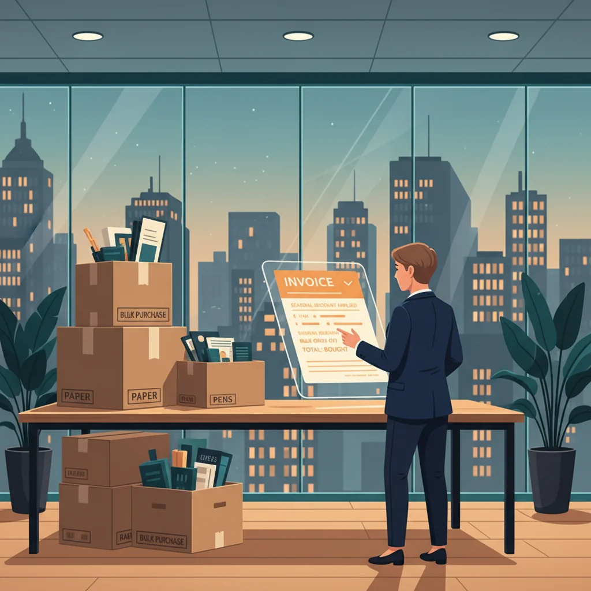
採購與物流例句：The procurement team bought the necessary office supplies in bulk to take advantage of the seasonal discount.
採購團隊大量購買了必要的辦公用品，以利用季節性折扣。
High-end corporate editorial vector illustration of bought. Core scene: stacks of office supply boxes, a procurement officer checking a digital invoice, navy blue and amber tones, clean corporate vector style, 8k. Context: The procurement team bought the necessary office supplies in bulk to take advantage of the seasonal discount. Style & Lighting: Clean refined vector lines, mature corporate aesthetic, sophisticated deep navy blue, charcoal, warm oak wood, and subtle teal accents. Polished conference glass partitions showing high-rise city skyline, professional recessed ceiling lighting casting soft natural shadows, elegant office plants, balanced contrast and realistic proportions, Dribbble and Behance top-tier commercial editorial art, 8k resolution, 1:1 square composition.
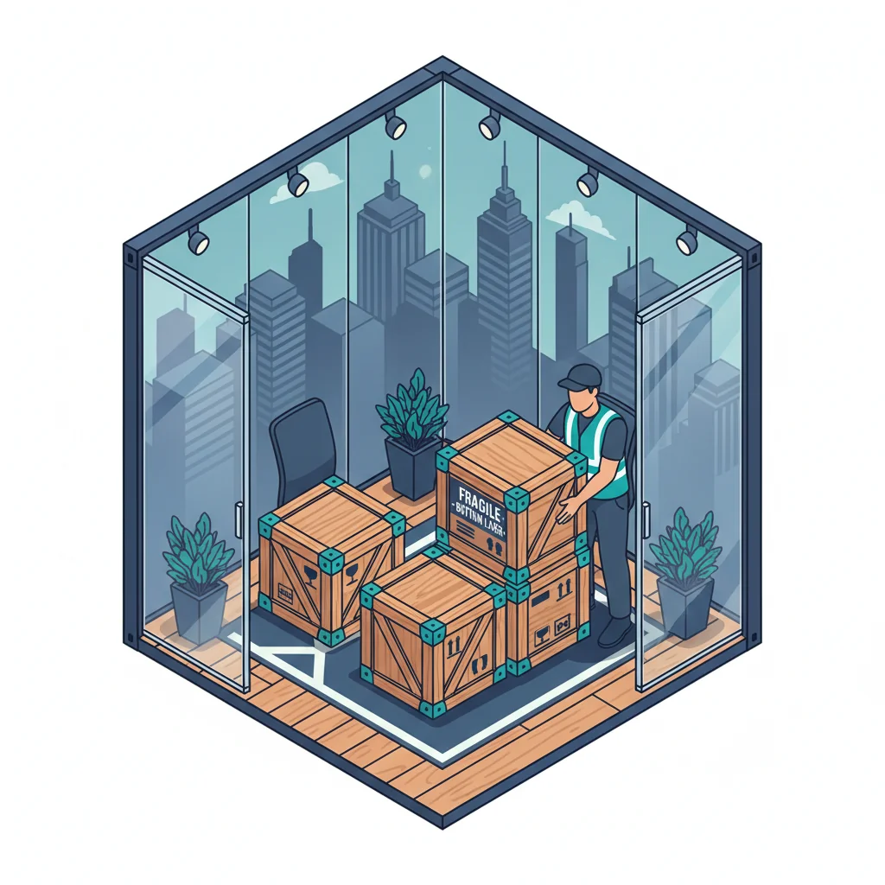
物流倉儲例句：Please ensure that the fragile items are placed at the bottom of the shipping container to prevent damage during transit.
請確保易碎物品放置在貨櫃底部，以防止運輸過程中受損。
High-end corporate editorial vector illustration of bottom. Core scene: a warehouse worker carefully stacking boxes, focus on the bottom layer, isometric view, slate and teal color palette, crisp details, 8k. Context: Please ensure that the fragile items are placed at the bottom of the shipping container to prevent damage during transit. Style & Lighting: Clean refined vector lines, mature corporate aesthetic, sophisticated deep navy blue, charcoal, warm oak wood, and subtle teal accents. Polished conference glass partitions showing high-rise city skyline, professional recessed ceiling lighting casting soft natural shadows, elegant office plants, balanced contrast and realistic proportions, Dribbble and Behance top-tier commercial editorial art, 8k resolution, 1:1 square composition.
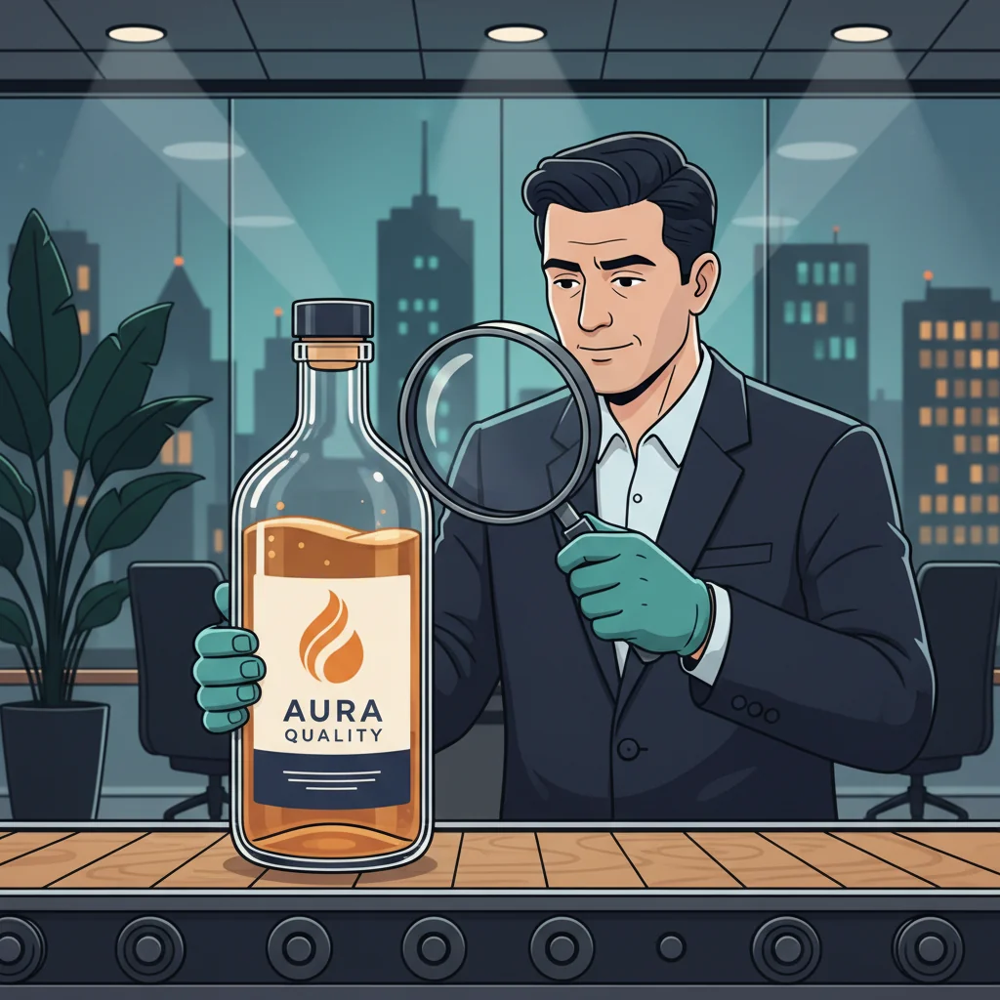
物流倉儲例句：The quality control inspector carefully examined each glass bottle for any signs of defects before the shipment was sealed.
品質管制檢驗員在貨運封箱前，仔細檢查了每個玻璃瓶是否有任何瑕疵。
High-end corporate editorial vector illustration of bottle. Core scene: a close-up of a glass bottle on a conveyor belt, inspector with a magnifying glass, clean outlines, navy blue and amber accents, high-end commercial art, 8k. Context: The quality control inspector carefully examined each glass bottle for any signs of defects before the shipment was sealed. Style & Lighting: Clean refined vector lines, mature corporate aesthetic, sophisticated deep navy blue, charcoal, warm oak wood, and subtle teal accents. Polished conference glass partitions showing high-rise city skyline, professional recessed ceiling lighting casting soft natural shadows, elegant office plants, balanced contrast and realistic proportions, Dribbble and Behance top-tier commercial editorial art, 8k resolution, 1:1 square composition.
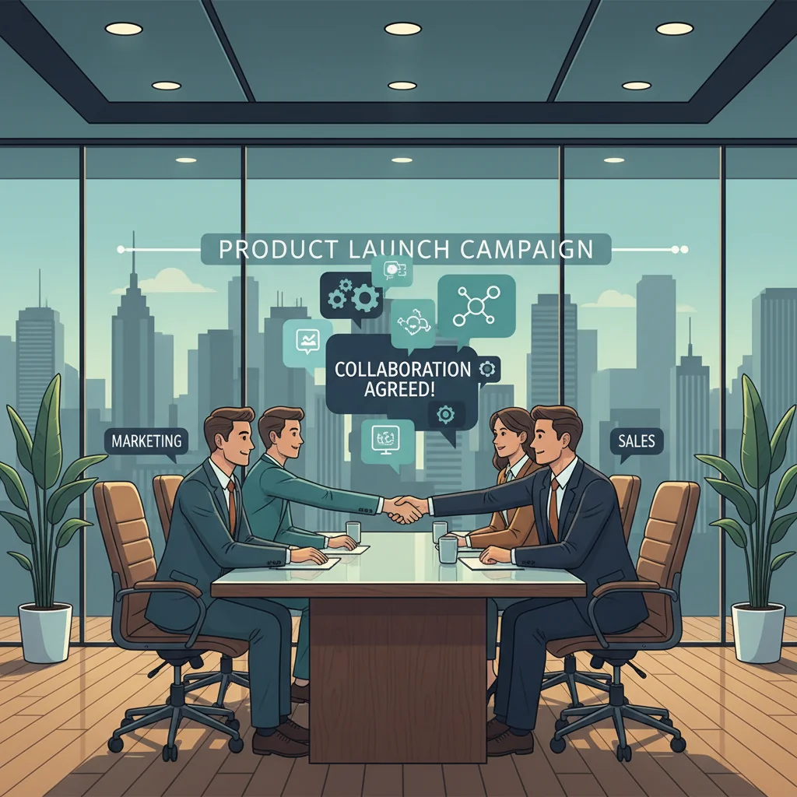
行銷推廣例句：Both the marketing and sales departments have agreed to collaborate on the upcoming product launch campaign.
行銷部與業務部雙方皆已同意針對即將到來的產品發布活動進行合作。
High-end corporate editorial vector illustration of both. Core scene: two professional teams shaking hands across a conference table, speech bubbles representing collaboration, teal and slate color scheme, modern corporate aesthetic, 8k. Context: Both the marketing and sales departments have agreed to collaborate on the upcoming product launch campaign. Style & Lighting: Clean refined vector lines, mature corporate aesthetic, sophisticated deep navy blue, charcoal, warm oak wood, and subtle teal accents. Polished conference glass partitions showing high-rise city skyline, professional recessed ceiling lighting casting soft natural shadows, elegant office plants, balanced contrast and realistic proportions, Dribbble and Behance top-tier commercial editorial art, 8k resolution, 1:1 square composition.
例句：The boss requested a comprehensive review of the quarterly performance reports before the board meeting begins.
主管要求在董事會會議開始前，先對季度績效報告進行全面審查。
High-end corporate editorial vector illustration of boss. Core scene: a professional office setting, a manager pointing at a digital tablet on a desk, clean lines, navy blue and amber color palette, minimalist corporate style, 8k. Context: The boss requested a comprehensive review of the quarterly performance reports before the board meeting begins. Style & Lighting: Clean refined vector lines, mature corporate aesthetic, sophisticated deep navy blue, charcoal, warm oak wood, and subtle teal accents. Polished conference glass partitions showing high-rise city skyline, professional recessed ceiling lighting casting soft natural shadows, elegant office plants, balanced contrast and realistic proportions, Dribbble and Behance top-tier commercial editorial art, 8k resolution, 1:1 square composition.
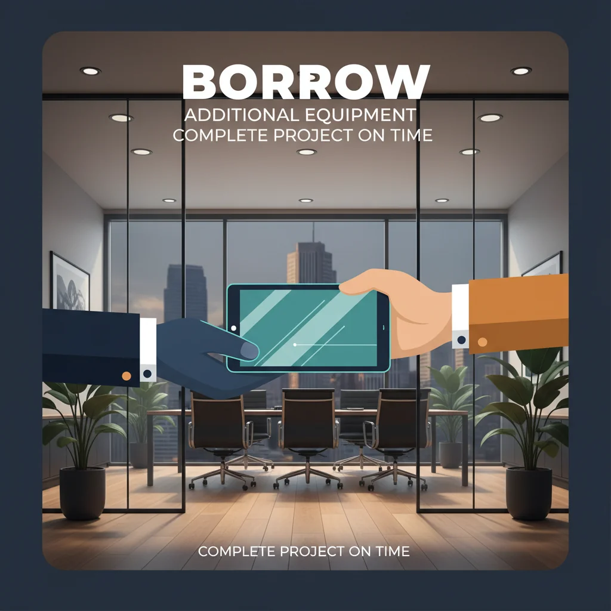
辦公日常例句：We had to borrow additional equipment from the neighboring department to complete the project on time.
我們必須向鄰近部門借用額外設備，才能準時完成專案。
High-end corporate editorial vector illustration of borrow. Core scene: two hands exchanging a piece of office equipment, navy blue and amber, clean professional style, 8k. Context: We had to borrow additional equipment from the neighboring department to complete the project on time. Style & Lighting: Clean refined vector lines, mature corporate aesthetic, sophisticated deep navy blue, charcoal, warm oak wood, and subtle teal accents. Polished conference glass partitions showing high-rise city skyline, professional recessed ceiling lighting casting soft natural shadows, elegant office plants, balanced contrast and realistic proportions, Dribbble and Behance top-tier commercial editorial art, 8k resolution, 1:1 square composition.
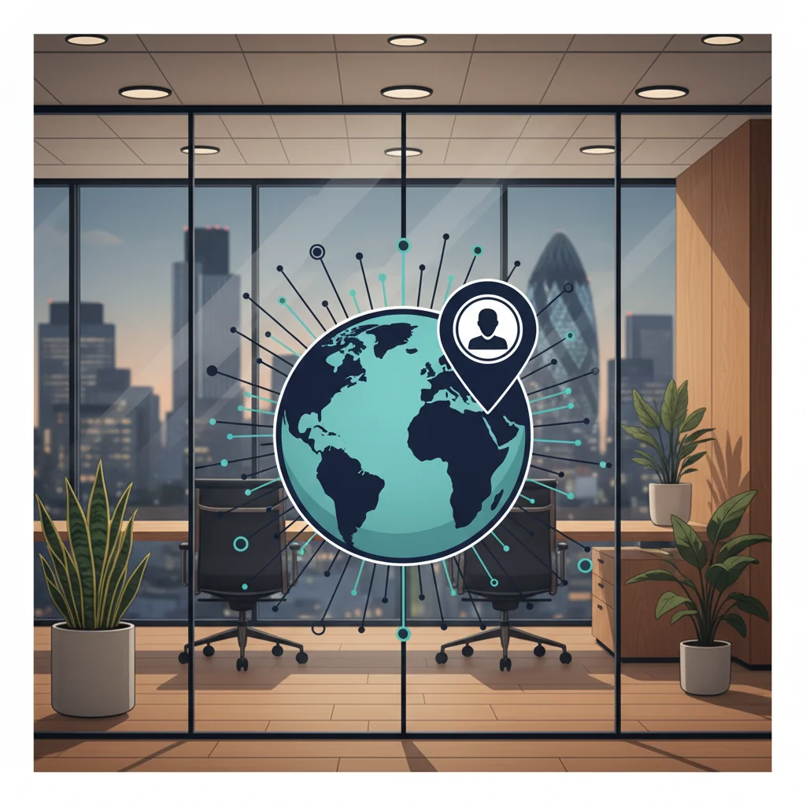
人力資源例句：The candidate was born in London and has extensive experience working in international markets.
該候選人出生於倫敦，並擁有豐富的國際市場工作經驗。
High-end corporate editorial vector illustration of born. Core scene: a stylized globe icon with a location pin, professional profile aesthetic, navy blue and teal, 8k. Context: The candidate was born in London and has extensive experience working in international markets. Style & Lighting: Clean refined vector lines, mature corporate aesthetic, sophisticated deep navy blue, charcoal, warm oak wood, and subtle teal accents. Polished conference glass partitions showing high-rise city skyline, professional recessed ceiling lighting casting soft natural shadows, elegant office plants, balanced contrast and realistic proportions, Dribbble and Behance top-tier commercial editorial art, 8k resolution, 1:1 square composition.
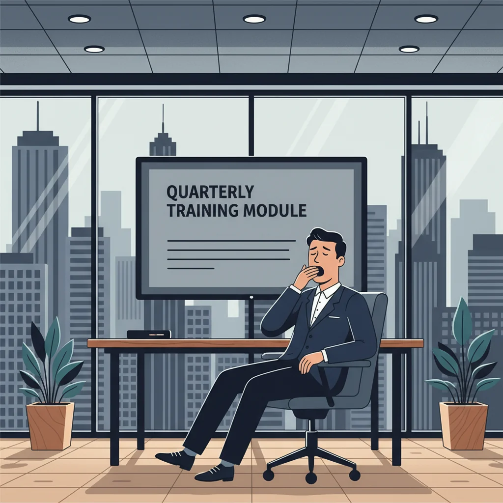
辦公日常例句：The training module was quite boring, so the HR team decided to update it with interactive elements.
該培訓模組相當乏味，因此人力資源團隊決定加入互動元素進行更新。
High-end corporate editorial vector illustration of boring. Core scene: a dull grey presentation slide, a person yawning, navy blue and slate, 8k. Context: The training module was quite boring, so the HR team decided to update it with interactive elements. Style & Lighting: Clean refined vector lines, mature corporate aesthetic, sophisticated deep navy blue, charcoal, warm oak wood, and subtle teal accents. Polished conference glass partitions showing high-rise city skyline, professional recessed ceiling lighting casting soft natural shadows, elegant office plants, balanced contrast and realistic proportions, Dribbble and Behance top-tier commercial editorial art, 8k resolution, 1:1 square composition.
例句：The speaker noticed that the audience looked bored during the lengthy technical presentation.
演講者注意到聽眾在冗長的技術簡報過程中顯得有些厭倦。
High-end corporate editorial vector illustration of bored. Core scene: a person sitting at a desk looking at a screen with a blank expression, navy blue and slate, 8k. Context: The speaker noticed that the audience looked bored during the lengthy technical presentation. Style & Lighting: Clean refined vector lines, mature corporate aesthetic, sophisticated deep navy blue, charcoal, warm oak wood, and subtle teal accents. Polished conference glass partitions showing high-rise city skyline, professional recessed ceiling lighting casting soft natural shadows, elegant office plants, balanced contrast and realistic proportions, Dribbble and Behance top-tier commercial editorial art, 8k resolution, 1:1 square composition.
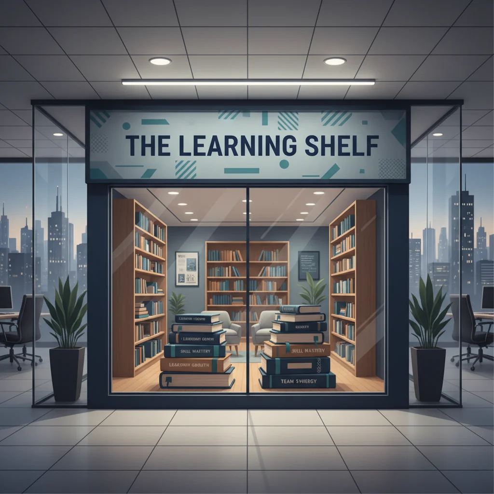
辦公日常例句：Our company partners with a local bookstore to provide professional development materials for staff.
我們公司與當地一家書店合作，為員工提供專業發展教材。
High-end corporate editorial vector illustration of bookstore. Core scene: a storefront with a sign, books displayed in the window, navy blue and slate, 8k. Context: Our company partners with a local bookstore to provide professional development materials for staff. Style & Lighting: Clean refined vector lines, mature corporate aesthetic, sophisticated deep navy blue, charcoal, warm oak wood, and subtle teal accents. Polished conference glass partitions showing high-rise city skyline, professional recessed ceiling lighting casting soft natural shadows, elegant office plants, balanced contrast and realistic proportions, Dribbble and Behance top-tier commercial editorial art, 8k resolution, 1:1 square composition.
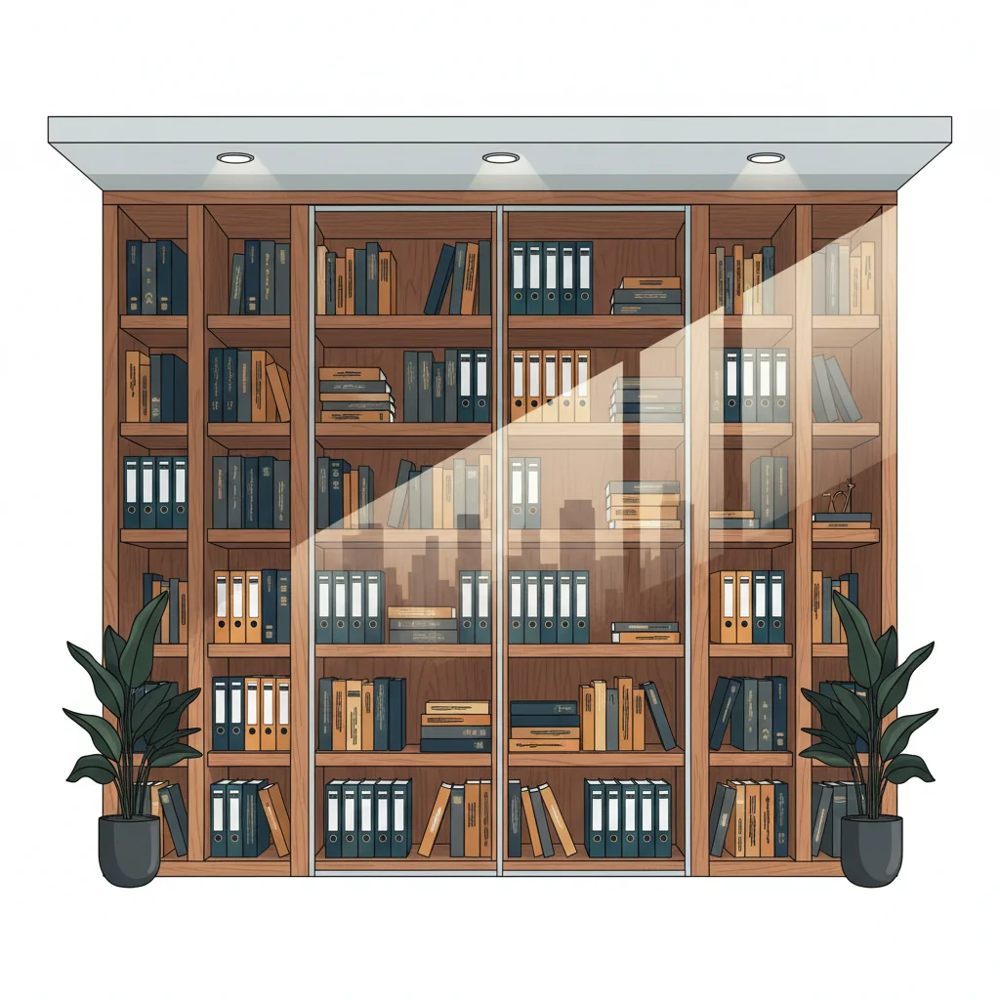
辦公日常例句：The executive office features a large mahogany bookshelf filled with industry-related publications.
執行長辦公室內有一個大型紅木書架，上面擺滿了產業相關刊物。
High-end corporate editorial vector illustration of bookshelf. Core scene: a modern bookshelf with organized folders and books, navy blue and amber, minimalist office interior, 8k. Context: The executive office features a large mahogany bookshelf filled with industry-related publications. Style & Lighting: Clean refined vector lines, mature corporate aesthetic, sophisticated deep navy blue, charcoal, warm oak wood, and subtle teal accents. Polished conference glass partitions showing high-rise city skyline, professional recessed ceiling lighting casting soft natural shadows, elegant office plants, balanced contrast and realistic proportions, Dribbble and Behance top-tier commercial editorial art, 8k resolution, 1:1 square composition.
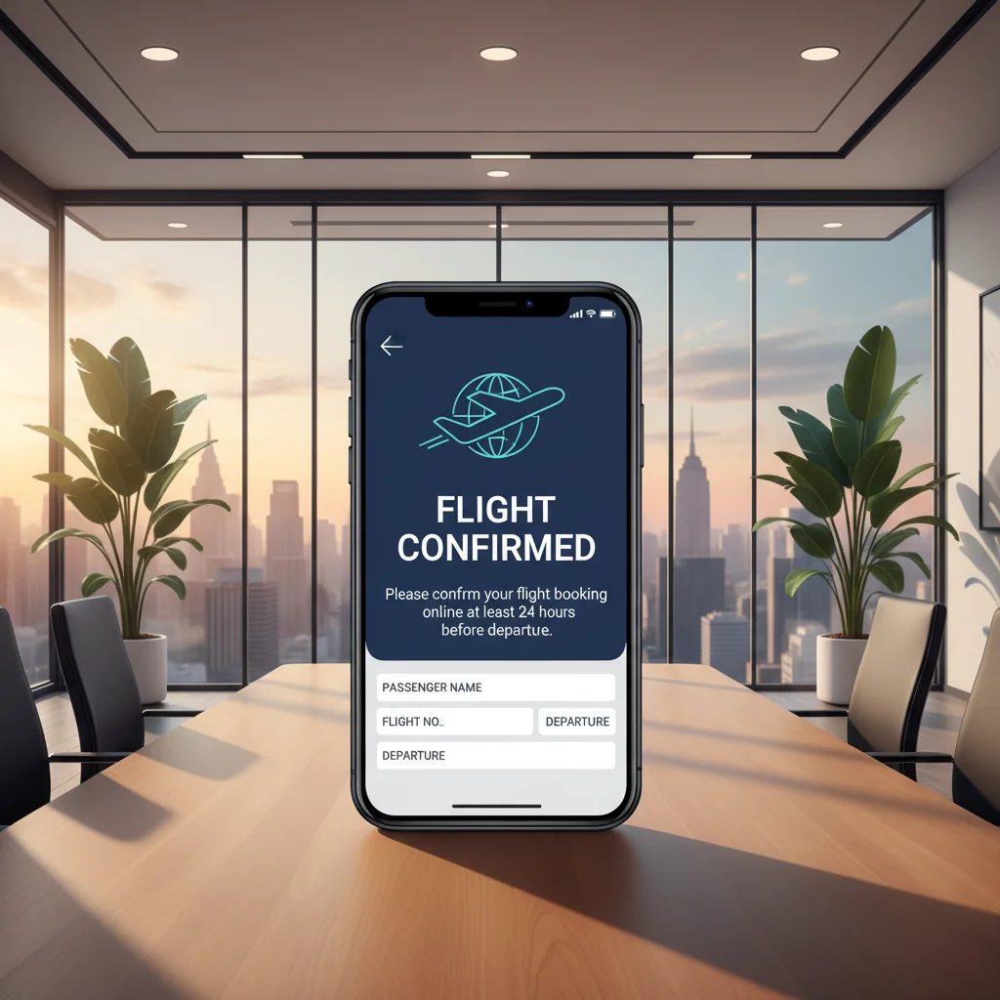
旅遊與交通例句：Please confirm your flight booking online at least 24 hours before departure.
請於起飛前至少 24 小時在線上確認您的航班預訂。
High-end corporate editorial vector illustration of booking. Core scene: a smartphone showing a flight confirmation screen, airplane icon, navy blue and teal, 8k. Context: Please confirm your flight booking online at least 24 hours before departure. Style & Lighting: Clean refined vector lines, mature corporate aesthetic, sophisticated deep navy blue, charcoal, warm oak wood, and subtle teal accents. Polished conference glass partitions showing high-rise city skyline, professional recessed ceiling lighting casting soft natural shadows, elegant office plants, balanced contrast and realistic proportions, Dribbble and Behance top-tier commercial editorial art, 8k resolution, 1:1 square composition.
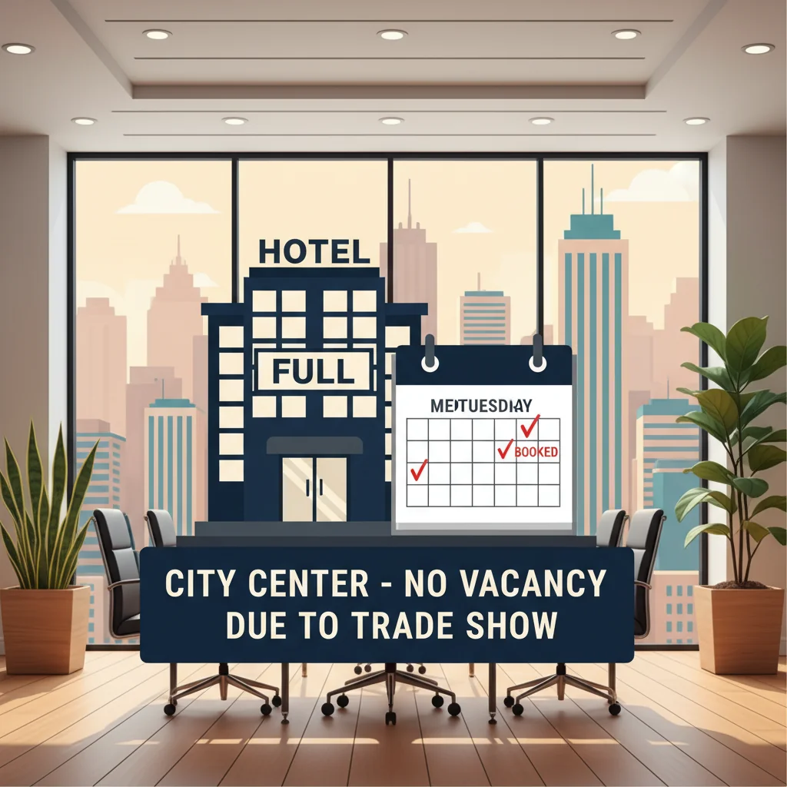
旅遊與交通例句：All the hotel rooms in the city center are fully booked for the duration of the trade show.
展覽期間，市中心的所有飯店房間皆已訂滿。
High-end corporate editorial vector illustration of booked. Core scene: a hotel building icon with a 'Full' sign, calendar page, navy blue and slate, 8k. Context: All the hotel rooms in the city center are fully booked for the duration of the trade show. Style & Lighting: Clean refined vector lines, mature corporate aesthetic, sophisticated deep navy blue, charcoal, warm oak wood, and subtle teal accents. Polished conference glass partitions showing high-rise city skyline, professional recessed ceiling lighting casting soft natural shadows, elegant office plants, balanced contrast and realistic proportions, Dribbble and Behance top-tier commercial editorial art, 8k resolution, 1:1 square composition.
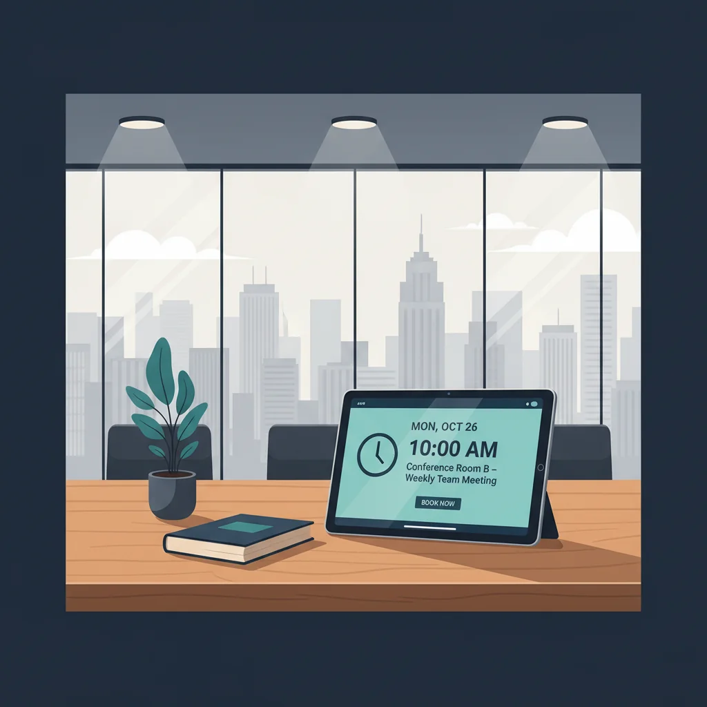
辦公日常例句：I need to book a conference room for our weekly team meeting next Monday.
我需要為下週一的每週團隊會議預訂一間會議室。
High-end corporate editorial vector illustration of book. Core scene: a digital calendar on a tablet screen, a clock icon, navy blue and teal, clean office aesthetic, 8k. Context: I need to book a conference room for our weekly team meeting next Monday. Style & Lighting: Clean refined vector lines, mature corporate aesthetic, sophisticated deep navy blue, charcoal, warm oak wood, and subtle teal accents. Polished conference glass partitions showing high-rise city skyline, professional recessed ceiling lighting casting soft natural shadows, elegant office plants, balanced contrast and realistic proportions, Dribbble and Behance top-tier commercial editorial art, 8k resolution, 1:1 square composition.
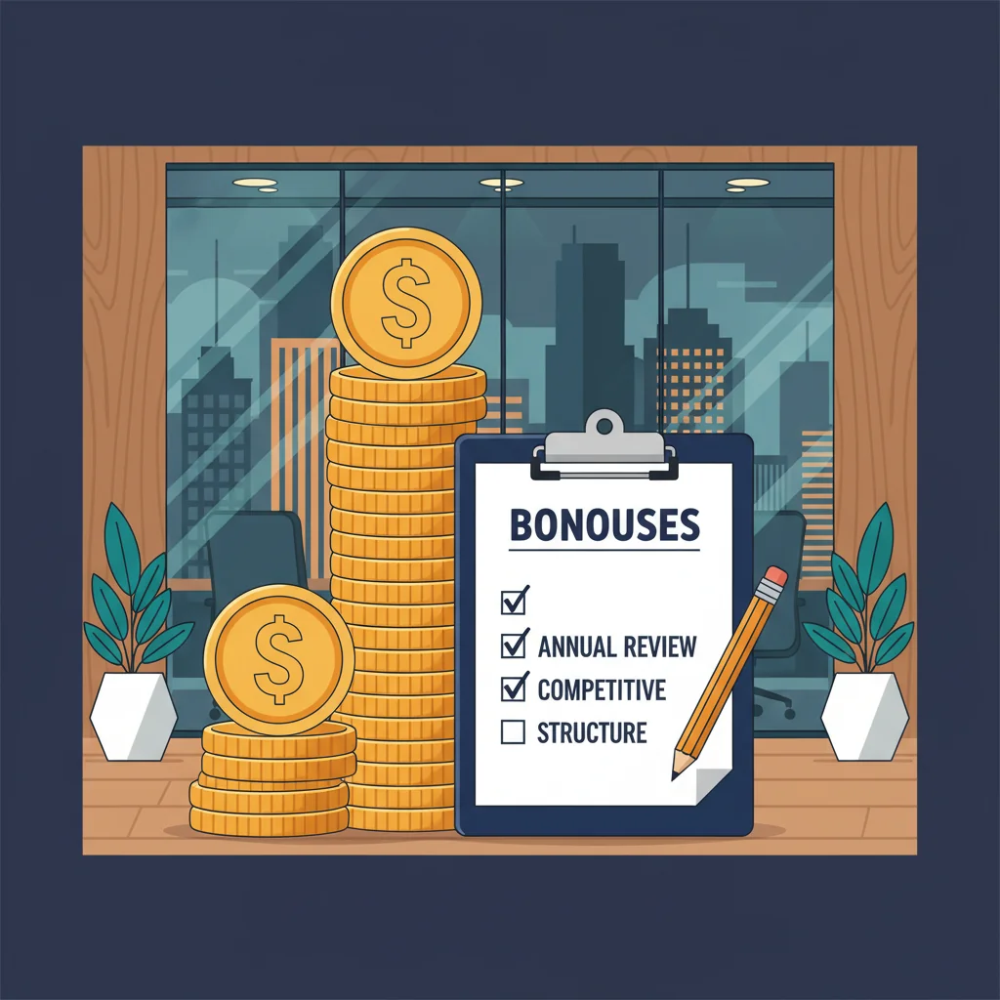
人力資源例句：The management team is reviewing the structure of annual bonuses to ensure they remain competitive.
管理團隊正在審查年度獎金結構，以確保其保持競爭力。
High-end corporate editorial vector illustration of bonuses. Core scene: multiple golden coins stacked, a clipboard with a checklist, navy blue and amber, professional corporate style, 8k. Context: The management team is reviewing the structure of annual bonuses to ensure they remain competitive. Style & Lighting: Clean refined vector lines, mature corporate aesthetic, sophisticated deep navy blue, charcoal, warm oak wood, and subtle teal accents. Polished conference glass partitions showing high-rise city skyline, professional recessed ceiling lighting casting soft natural shadows, elegant office plants, balanced contrast and realistic proportions, Dribbble and Behance top-tier commercial editorial art, 8k resolution, 1:1 square composition.
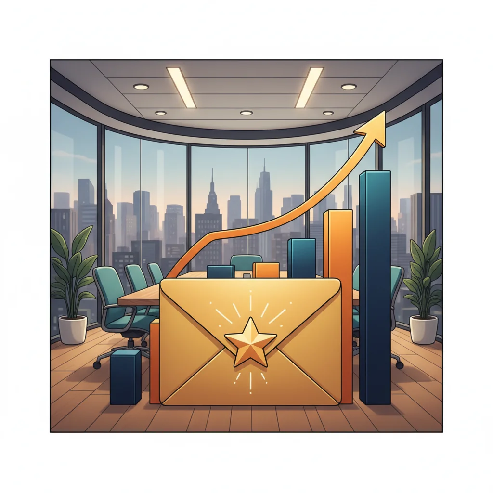
人力資源例句：Employees who exceed their sales targets will receive a performance-based bonus at the end of the year.
達成銷售目標的員工將在年底獲得績效獎金。
High-end corporate editorial vector illustration of bonus. Core scene: a golden envelope with a star icon, rising bar chart in the background, amber and navy blue, 8k. Context: Employees who exceed their sales targets will receive a performance-based bonus at the end of the year. Style & Lighting: Clean refined vector lines, mature corporate aesthetic, sophisticated deep navy blue, charcoal, warm oak wood, and subtle teal accents. Polished conference glass partitions showing high-rise city skyline, professional recessed ceiling lighting casting soft natural shadows, elegant office plants, balanced contrast and realistic proportions, Dribbble and Behance top-tier commercial editorial art, 8k resolution, 1:1 square composition.
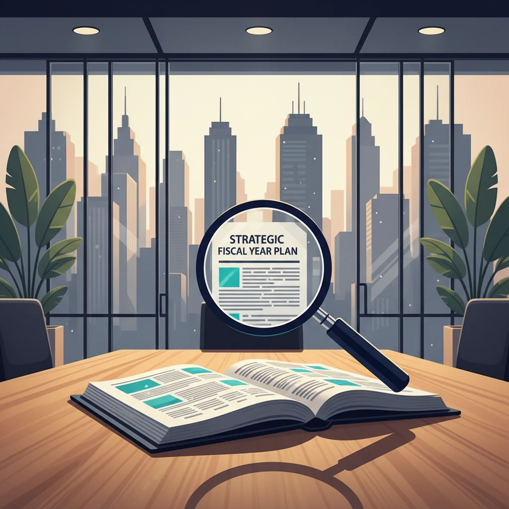
一般專業例句：The main body of the report outlines the strategic goals for the upcoming fiscal year.
報告的主體部分概述了下一財政年度的戰略目標。
High-end corporate editorial vector illustration of body. Core scene: a thick document with highlighted sections, a magnifying glass, navy blue and slate, professional editorial style, 8k. Context: The main body of the report outlines the strategic goals for the upcoming fiscal year. Style & Lighting: Clean refined vector lines, mature corporate aesthetic, sophisticated deep navy blue, charcoal, warm oak wood, and subtle teal accents. Polished conference glass partitions showing high-rise city skyline, professional recessed ceiling lighting casting soft natural shadows, elegant office plants, balanced contrast and realistic proportions, Dribbble and Behance top-tier commercial editorial art, 8k resolution, 1:1 square composition.
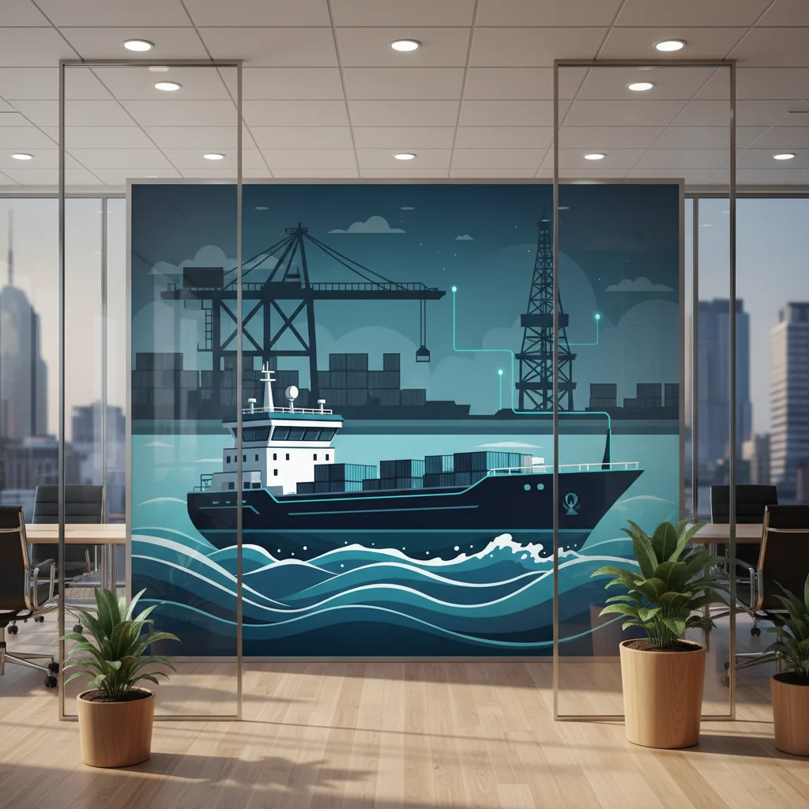
物流倉儲例句：The logistics team uses a small boat to transport supplies to the offshore drilling platform.
物流團隊使用一艘小船將物資運送到離岸鑽油平台。
High-end corporate editorial vector illustration of boat. Core scene: a sleek cargo boat on stylized blue waves, industrial harbor background, navy blue and teal, 8k. Context: The logistics team uses a small boat to transport supplies to the offshore drilling platform. Style & Lighting: Clean refined vector lines, mature corporate aesthetic, sophisticated deep navy blue, charcoal, warm oak wood, and subtle teal accents. Polished conference glass partitions showing high-rise city skyline, professional recessed ceiling lighting casting soft natural shadows, elegant office plants, balanced contrast and realistic proportions, Dribbble and Behance top-tier commercial editorial art, 8k resolution, 1:1 square composition.
例句：Please have your passport and boarding pass ready for inspection at the security checkpoint.
請準備好您的護照與登機證，以便在安檢處進行查驗。
High-end corporate editorial vector illustration of boarding pass. Core scene: a close-up of a boarding pass with a barcode, passport icon, navy blue and amber, crisp details, 8k. Context: Please have your passport and boarding pass ready for inspection at the security checkpoint. Style & Lighting: Clean refined vector lines, mature corporate aesthetic, sophisticated deep navy blue, charcoal, warm oak wood, and subtle teal accents. Polished conference glass partitions showing high-rise city skyline, professional recessed ceiling lighting casting soft natural shadows, elegant office plants, balanced contrast and realistic proportions, Dribbble and Behance top-tier commercial editorial art, 8k resolution, 1:1 square composition.
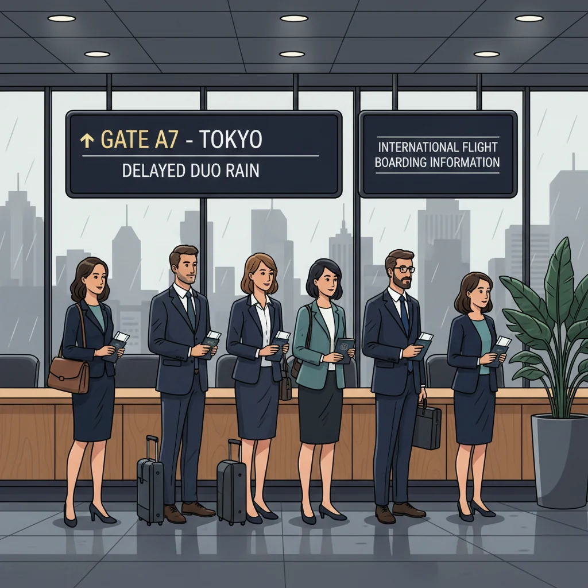
旅遊與交通例句：The boarding process for the international flight was delayed due to heavy rain.
由於大雨，該國際航班的登機作業有所延誤。
High-end corporate editorial vector illustration of boarding. Core scene: a queue of passengers holding documents, airport gate sign, slate and navy blue, modern editorial style, 8k. Context: The boarding process for the international flight was delayed due to heavy rain. Style & Lighting: Clean refined vector lines, mature corporate aesthetic, sophisticated deep navy blue, charcoal, warm oak wood, and subtle teal accents. Polished conference glass partitions showing high-rise city skyline, professional recessed ceiling lighting casting soft natural shadows, elegant office plants, balanced contrast and realistic proportions, Dribbble and Behance top-tier commercial editorial art, 8k resolution, 1:1 square composition.
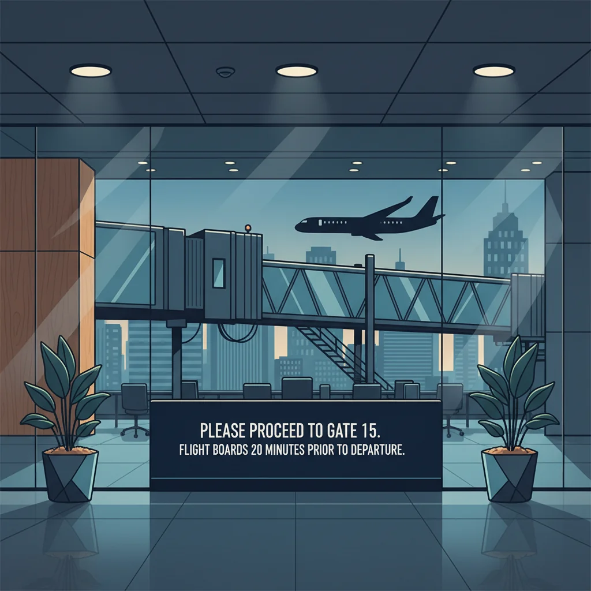
旅遊與交通例句：Passengers are requested to board a flight at Gate 15 twenty minutes before departure.
請旅客於起飛前二十分鐘至 15 號登機門登機。
High-end corporate editorial vector illustration of board a flight. Core scene: a stylized airplane silhouette at a jet bridge, airport terminal background, navy blue and teal, clean vector art, 8k. Context: Passengers are requested to board a flight at Gate 15 twenty minutes before departure. Style & Lighting: Clean refined vector lines, mature corporate aesthetic, sophisticated deep navy blue, charcoal, warm oak wood, and subtle teal accents. Polished conference glass partitions showing high-rise city skyline, professional recessed ceiling lighting casting soft natural shadows, elegant office plants, balanced contrast and realistic proportions, Dribbble and Behance top-tier commercial editorial art, 8k resolution, 1:1 square composition.
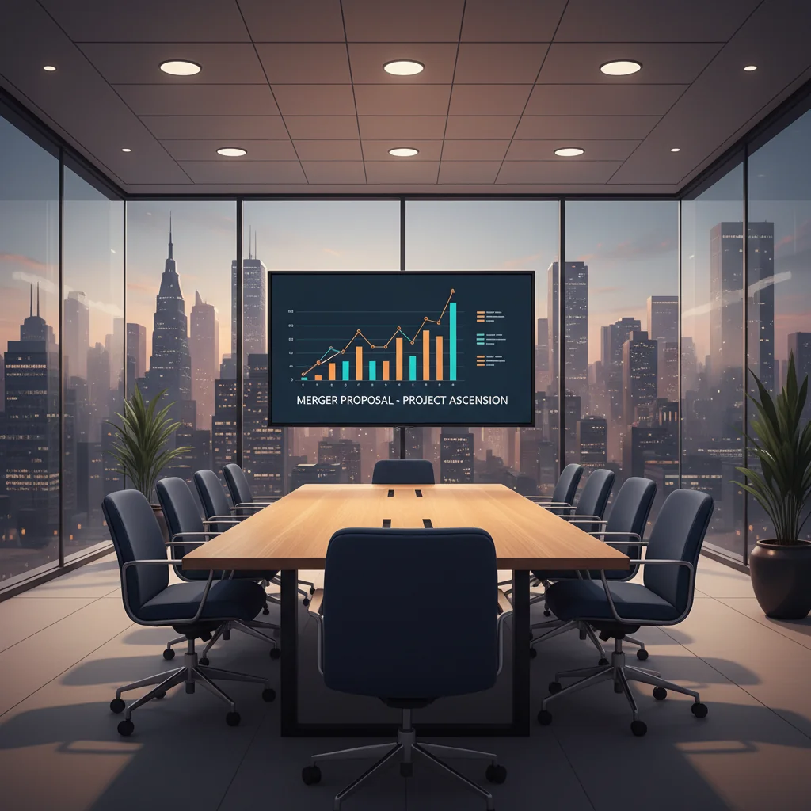
董事會議例句：The board of directors will meet tomorrow to discuss the proposed merger with our competitor.
董事會將於明日召開會議，討論與競爭對手的合併提案。
High-end corporate editorial vector illustration of board. Core scene: a long boardroom table with chairs, a large screen displaying a chart, navy blue and amber accents, professional atmosphere, 8k. Context: The board of directors will meet tomorrow to discuss the proposed merger with our competitor. Style & Lighting: Clean refined vector lines, mature corporate aesthetic, sophisticated deep navy blue, charcoal, warm oak wood, and subtle teal accents. Polished conference glass partitions showing high-rise city skyline, professional recessed ceiling lighting casting soft natural shadows, elegant office plants, balanced contrast and realistic proportions, Dribbble and Behance top-tier commercial editorial art, 8k resolution, 1:1 square composition.
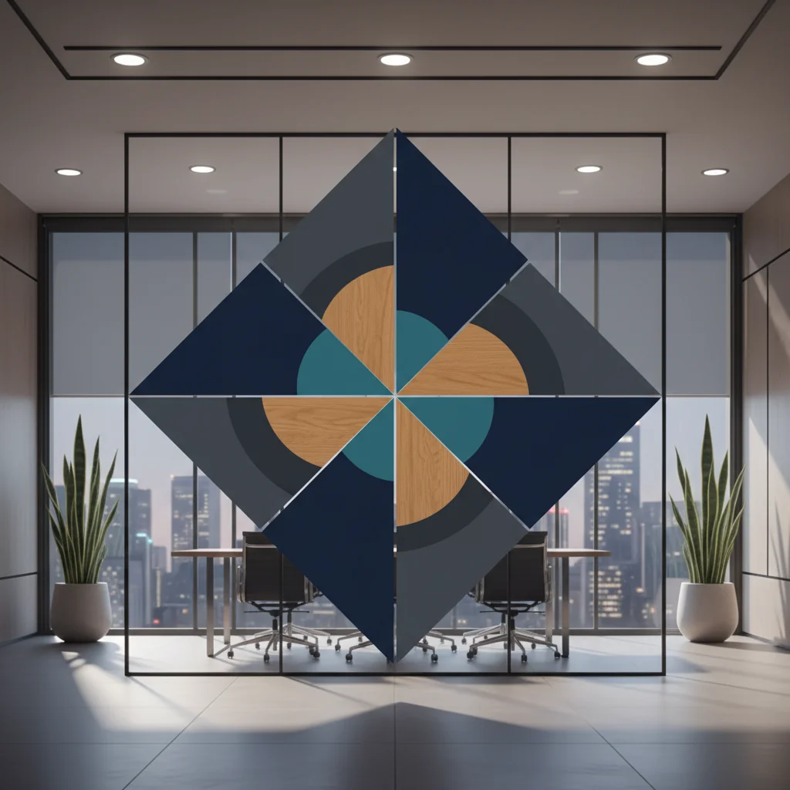
辦公日常例句：The new corporate branding features a deep blue color scheme to convey trust and reliability.
新的企業品牌形象採用深藍色調，以傳達信任與可靠感。
High-end corporate editorial vector illustration of blue. Core scene: abstract geometric shapes in various shades of blue and teal, professional corporate branding style, 8k. Context: The new corporate branding features a deep blue color scheme to convey trust and reliability. Style & Lighting: Clean refined vector lines, mature corporate aesthetic, sophisticated deep navy blue, charcoal, warm oak wood, and subtle teal accents. Polished conference glass partitions showing high-rise city skyline, professional recessed ceiling lighting casting soft natural shadows, elegant office plants, balanced contrast and realistic proportions, Dribbble and Behance top-tier commercial editorial art, 8k resolution, 1:1 square composition.
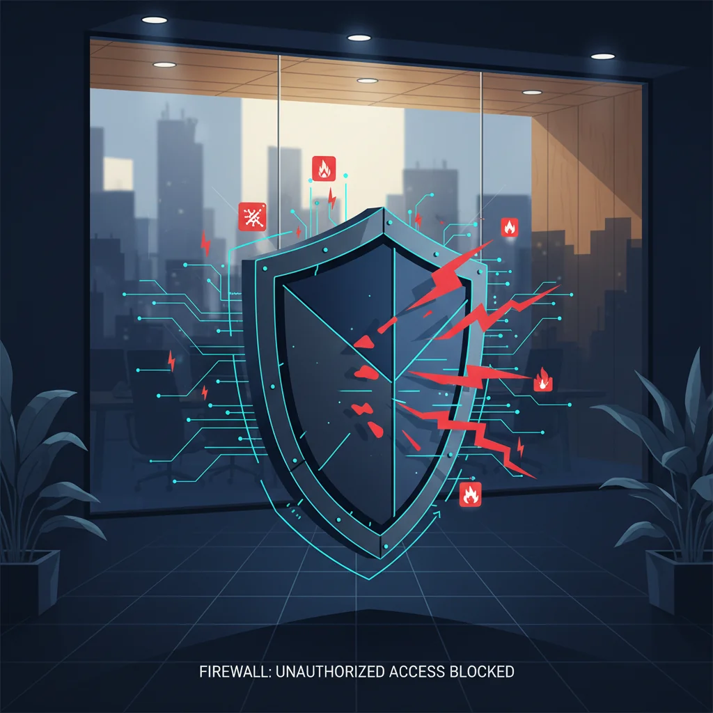
辦公日常例句：The firewall is configured to block unauthorized access attempts from external networks.
防火牆已設定為阻擋來自外部網路的未經授權存取嘗試。
High-end corporate editorial vector illustration of block. Core scene: a digital shield icon blocking red warning signals, navy blue and slate background, modern cybersecurity concept, 8k. Context: The firewall is configured to block unauthorized access attempts from external networks. Style & Lighting: Clean refined vector lines, mature corporate aesthetic, sophisticated deep navy blue, charcoal, warm oak wood, and subtle teal accents. Polished conference glass partitions showing high-rise city skyline, professional recessed ceiling lighting casting soft natural shadows, elegant office plants, balanced contrast and realistic proportions, Dribbble and Behance top-tier commercial editorial art, 8k resolution, 1:1 square composition.
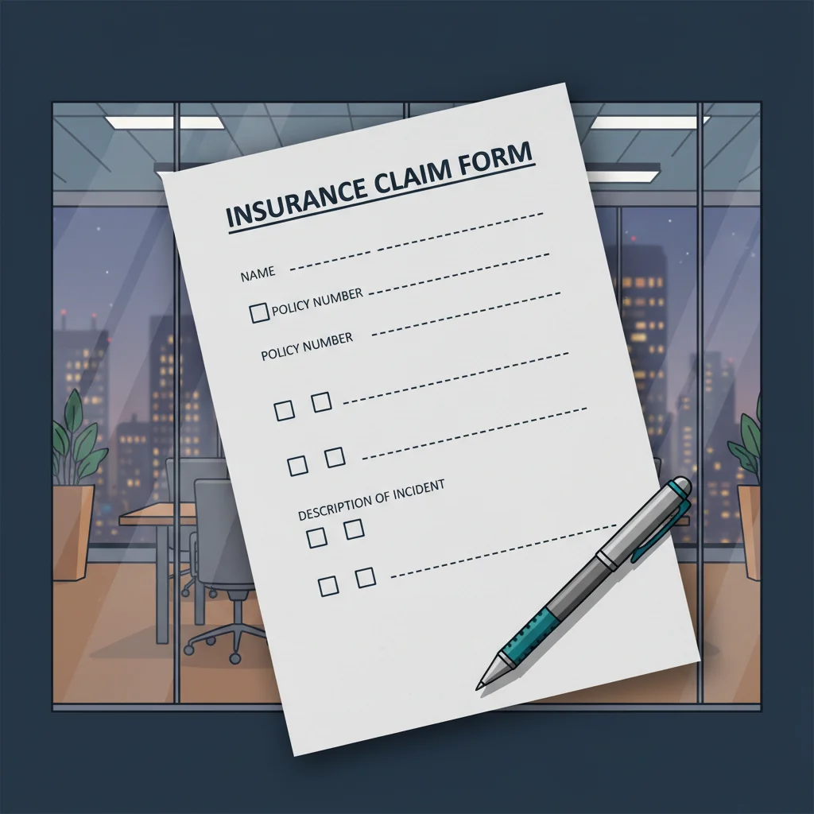
辦公日常例句：Please ensure that no fields are left blank on the insurance claim form before submitting it.
在提交保險理賠表格前，請確保沒有任何欄位留白。
High-end corporate editorial vector illustration of blank. Core scene: a close-up of a document with empty checkboxes and lines, a pen resting nearby, teal and navy blue palette, clean professional aesthetic, 8k. Context: Please ensure that no fields are left blank on the insurance claim form before submitting it. Style & Lighting: Clean refined vector lines, mature corporate aesthetic, sophisticated deep navy blue, charcoal, warm oak wood, and subtle teal accents. Polished conference glass partitions showing high-rise city skyline, professional recessed ceiling lighting casting soft natural shadows, elegant office plants, balanced contrast and realistic proportions, Dribbble and Behance top-tier commercial editorial art, 8k resolution, 1:1 square composition.
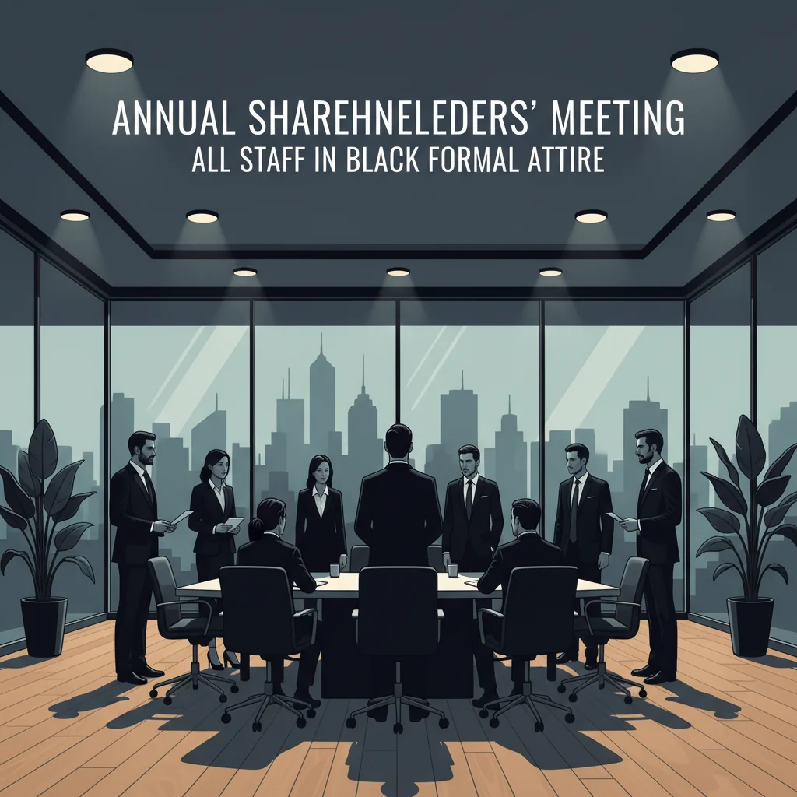
辦公日常例句：All staff members are required to wear black formal attire for the annual shareholders' meeting.
所有員工在年度股東大會上皆須穿著黑色正式服裝。
High-end corporate editorial vector illustration of black. Core scene: silhouettes of professionals in formal business suits, clean lines, monochromatic black and slate background, high-end corporate style, 8k. Context: All staff members are required to wear black formal attire for the annual shareholders' meeting. Style & Lighting: Clean refined vector lines, mature corporate aesthetic, sophisticated deep navy blue, charcoal, warm oak wood, and subtle teal accents. Polished conference glass partitions showing high-rise city skyline, professional recessed ceiling lighting casting soft natural shadows, elegant office plants, balanced contrast and realistic proportions, Dribbble and Behance top-tier commercial editorial art, 8k resolution, 1:1 square composition.
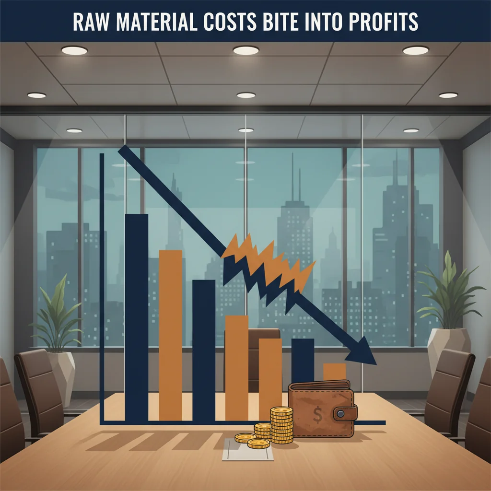
營運管理例句：The recent increase in raw material costs has started to bite into our quarterly profit margins.
近期原物料成本的增加已開始侵蝕我們的季度利潤率。
High-end corporate editorial vector illustration of bite. Core scene: a downward trending line graph with a jagged bite mark taken out of the bar chart, navy blue and amber, professional financial editorial style, 8k. Context: The recent increase in raw material costs has started to bite into our quarterly profit margins. Style & Lighting: Clean refined vector lines, mature corporate aesthetic, sophisticated deep navy blue, charcoal, warm oak wood, and subtle teal accents. Polished conference glass partitions showing high-rise city skyline, professional recessed ceiling lighting casting soft natural shadows, elegant office plants, balanced contrast and realistic proportions, Dribbble and Behance top-tier commercial editorial art, 8k resolution, 1:1 square composition.
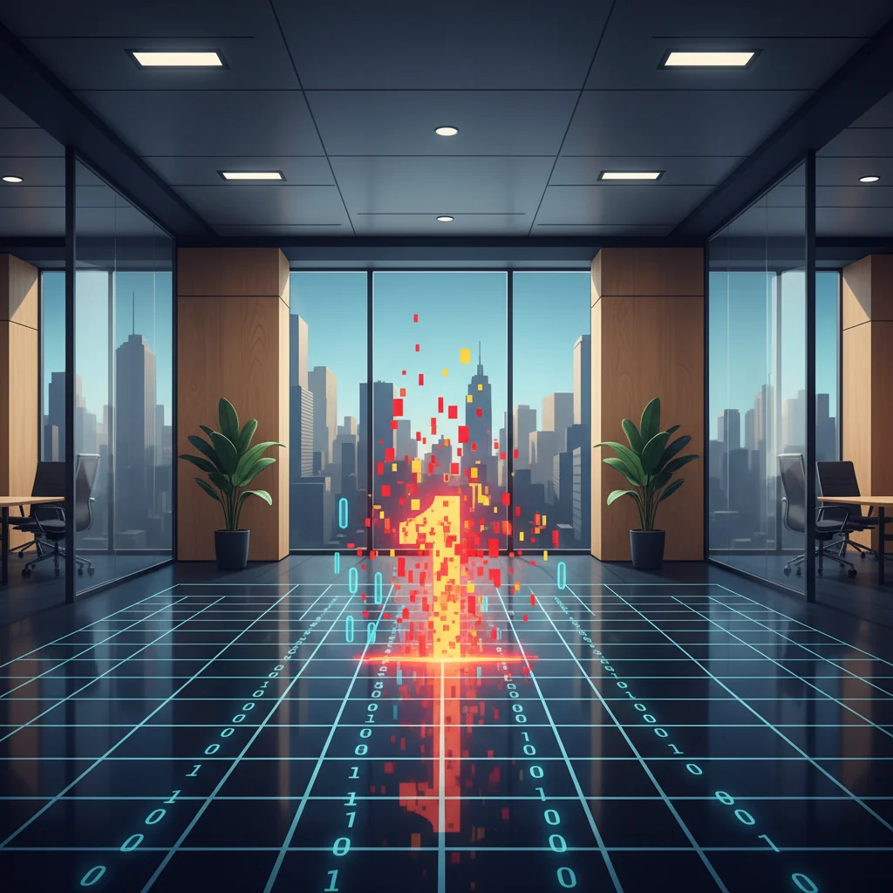
科技與技術支援例句：The IT technician explained that even a single corrupted bit can cause significant errors in the database.
IT技術人員解釋說，即使是一個損壞的位元也可能導致資料庫出現重大錯誤。
High-end corporate editorial vector illustration of bit. Core scene: a digital grid pattern with glowing binary code 0 and 1, slate and teal color scheme, high-tech professional look, 8k. Context: The IT technician explained that even a single corrupted bit can cause significant errors in the database. Style & Lighting: Clean refined vector lines, mature corporate aesthetic, sophisticated deep navy blue, charcoal, warm oak wood, and subtle teal accents. Polished conference glass partitions showing high-rise city skyline, professional recessed ceiling lighting casting soft natural shadows, elegant office plants, balanced contrast and realistic proportions, Dribbble and Behance top-tier commercial editorial art, 8k resolution, 1:1 square composition.
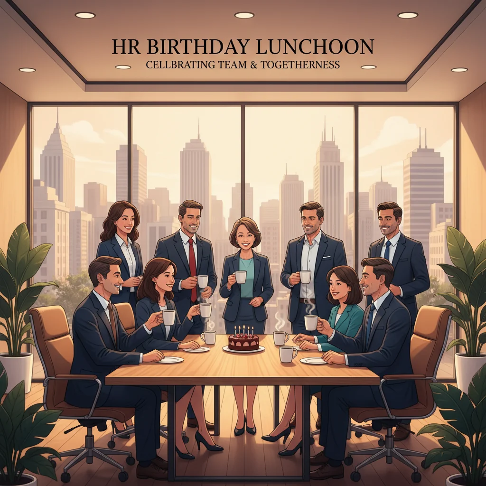
人力資源例句：The HR department organizes a monthly birthday luncheon to boost employee morale and team cohesion.
人力資源部門每月舉辦生日午宴，以提升員工士氣與團隊凝聚力。
High-end corporate editorial vector illustration of birthday. Core scene: a group of diverse professionals around a conference table with a small cake and coffee, warm amber accents, clean corporate aesthetic, 8k. Context: The HR department organizes a monthly birthday luncheon to boost employee morale and team cohesion. Style & Lighting: Clean refined vector lines, mature corporate aesthetic, sophisticated deep navy blue, charcoal, warm oak wood, and subtle teal accents. Polished conference glass partitions showing high-rise city skyline, professional recessed ceiling lighting casting soft natural shadows, elegant office plants, balanced contrast and realistic proportions, Dribbble and Behance top-tier commercial editorial art, 8k resolution, 1:1 square composition.
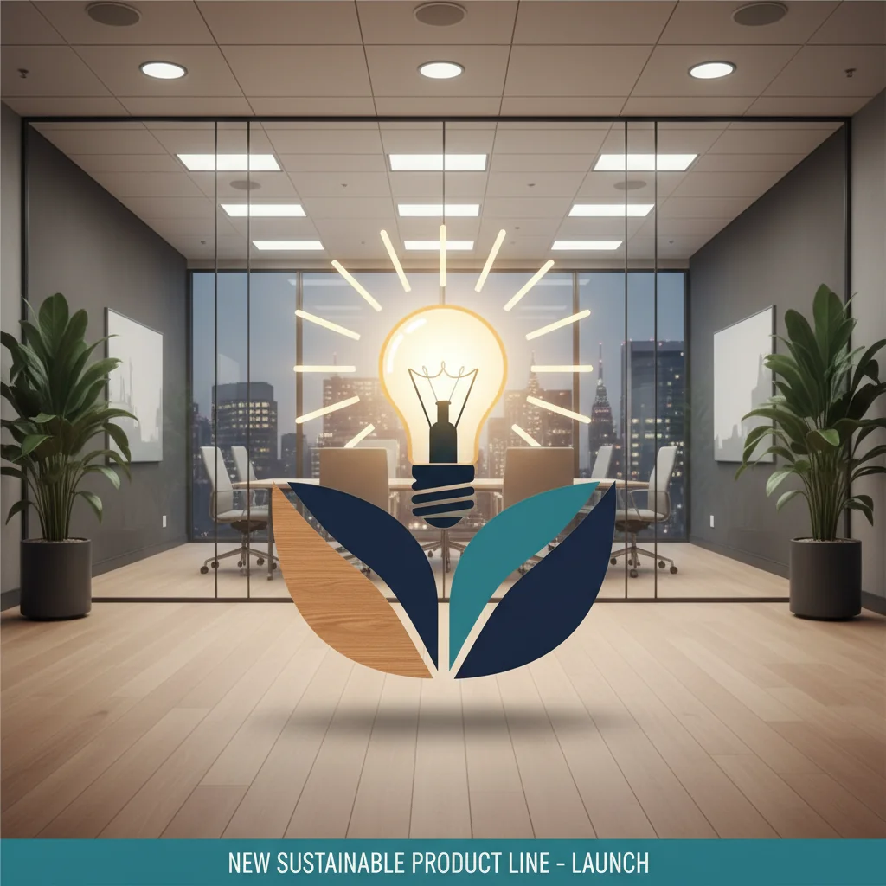
行銷推廣例句：The company celebrated the birth of its new sustainable product line with a grand launch event.
公司舉辦了一場盛大的發表會，慶祝其全新永續產品系列的誕生。
High-end corporate editorial vector illustration of birth. Core scene: a stylized glowing light bulb emerging from a sleek corporate leaf icon, modern navy blue and teal color palette, clean lines, minimalist professional style, 8k. Context: The company celebrated the birth of its new sustainable product line with a grand launch event. Style & Lighting: Clean refined vector lines, mature corporate aesthetic, sophisticated deep navy blue, charcoal, warm oak wood, and subtle teal accents. Polished conference glass partitions showing high-rise city skyline, professional recessed ceiling lighting casting soft natural shadows, elegant office plants, balanced contrast and realistic proportions, Dribbble and Behance top-tier commercial editorial art, 8k resolution, 1:1 square composition.
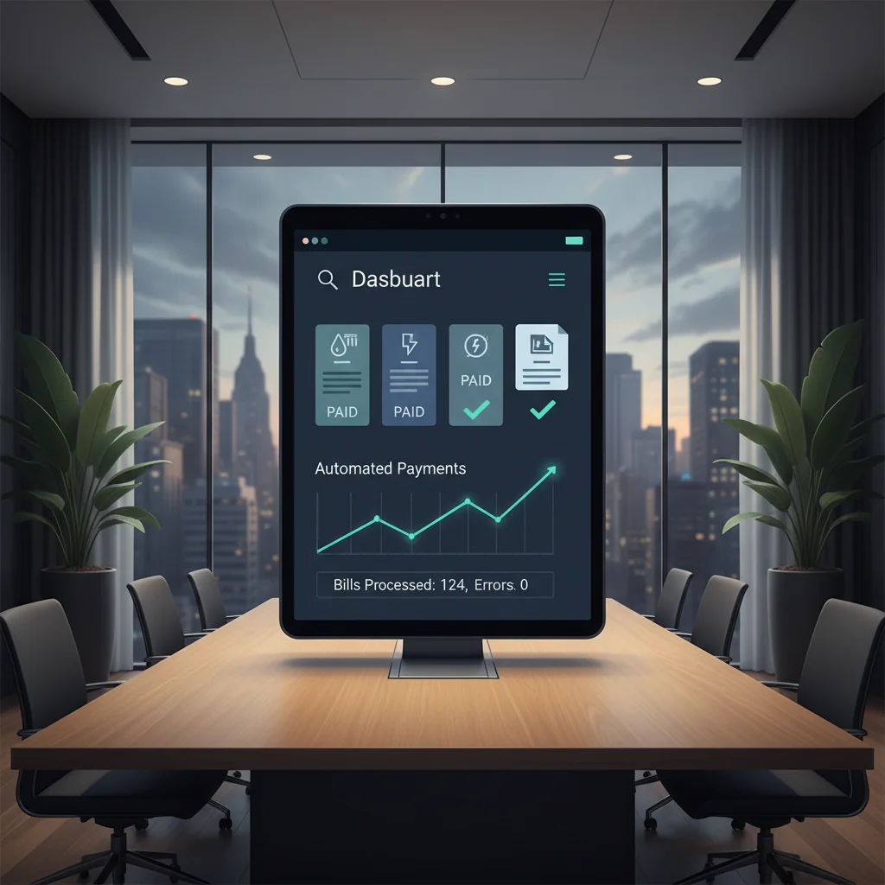
金融與會計例句：The company has automated the process of paying monthly utility bills to save time and reduce errors.
公司已將每月水電費帳單的支付流程自動化，以節省時間並減少錯誤。
High-end corporate editorial vector illustration of bills. Core scene: Flat vector illustration of a digital dashboard showing automated payments, clean lines, corporate navy blue and teal, 8k. Context: The company has automated the process of paying monthly utility bills to save time and reduce errors. Style & Lighting: Clean refined vector lines, mature corporate aesthetic, sophisticated deep navy blue, charcoal, warm oak wood, and subtle teal accents. Polished conference glass partitions showing high-rise city skyline, professional recessed ceiling lighting casting soft natural shadows, elegant office plants, balanced contrast and realistic proportions, Dribbble and Behance top-tier commercial editorial art, 8k resolution, 1:1 square composition.
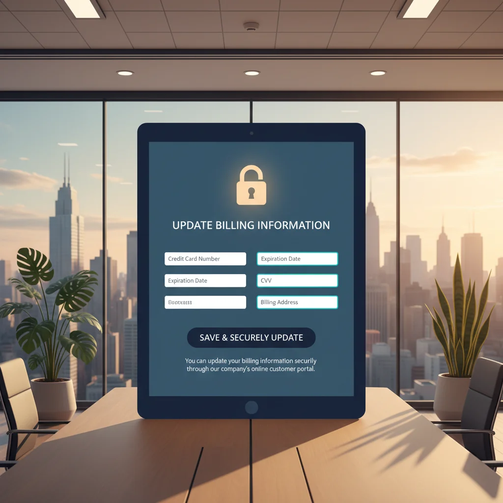
金融與會計例句：You can update your billing information securely through our company's online customer portal.
您可以透過我們公司的線上客戶入口網站安全地更新您的帳單資訊。
High-end corporate editorial vector illustration of billing information. Core scene: Flat vector illustration of a secure digital portal interface, lock icon, clean corporate style, navy blue and amber, 8k. Context: You can update your billing information securely through our company's online customer portal. Style & Lighting: Clean refined vector lines, mature corporate aesthetic, sophisticated deep navy blue, charcoal, warm oak wood, and subtle teal accents. Polished conference glass partitions showing high-rise city skyline, professional recessed ceiling lighting casting soft natural shadows, elegant office plants, balanced contrast and realistic proportions, Dribbble and Behance top-tier commercial editorial art, 8k resolution, 1:1 square composition.
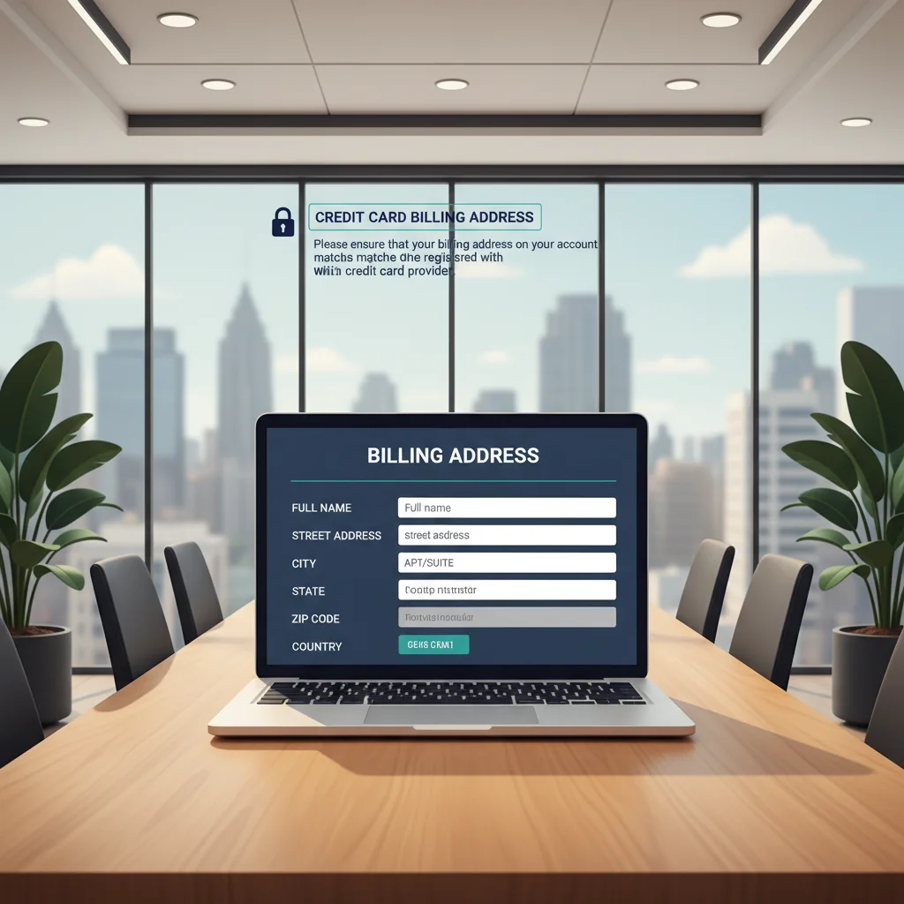
金融與會計例句：Please ensure that the billing address on your account matches the one registered with your credit card provider.
請確保您帳戶上的帳單地址與您信用卡發卡機構登記的地址相符。
High-end corporate editorial vector illustration of billing address. Core scene: Flat vector illustration of an online payment form on a laptop, focus on address fields, clean corporate style, navy blue and slate, 8k. Context: Please ensure that the billing address on your account matches the one registered with your credit card provider. Style & Lighting: Clean refined vector lines, mature corporate aesthetic, sophisticated deep navy blue, charcoal, warm oak wood, and subtle teal accents. Polished conference glass partitions showing high-rise city skyline, professional recessed ceiling lighting casting soft natural shadows, elegant office plants, balanced contrast and realistic proportions, Dribbble and Behance top-tier commercial editorial art, 8k resolution, 1:1 square composition.
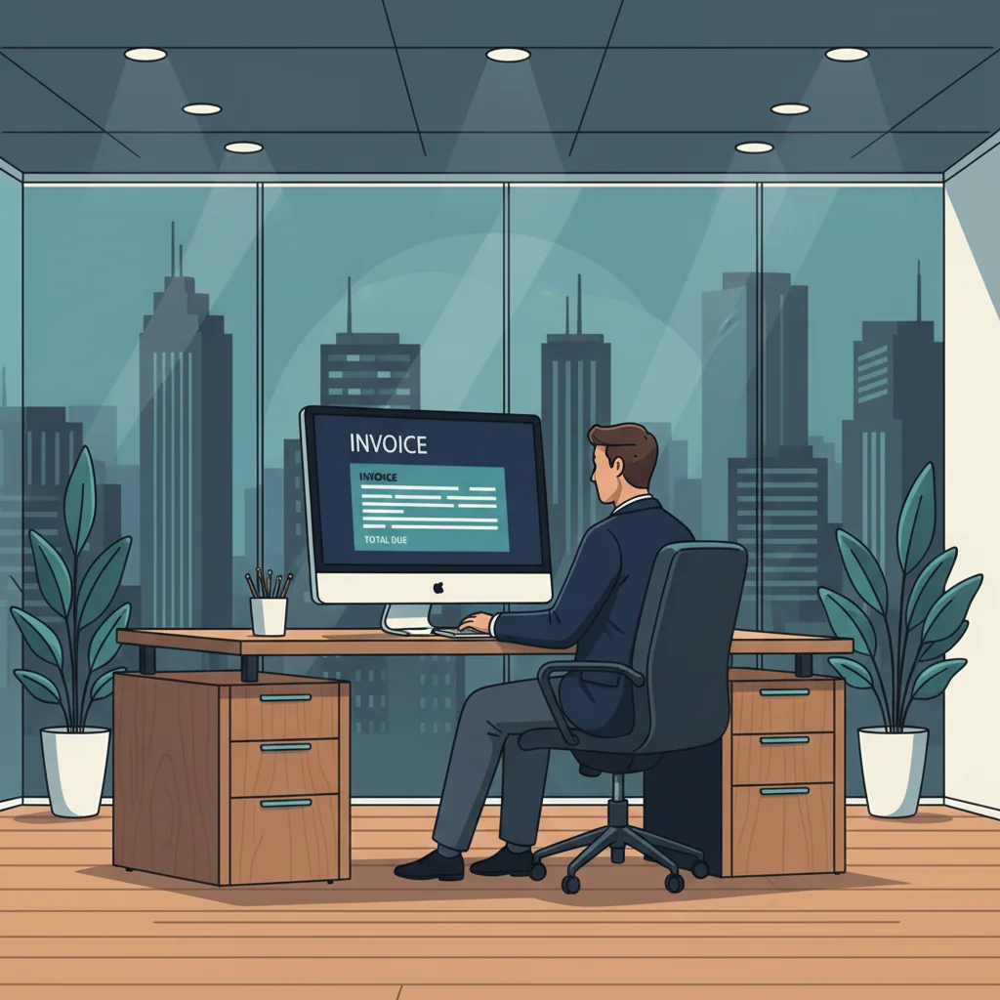
金融與會計例句：Our billing department is currently updating the system to improve the accuracy of client invoices.
我們的帳單處理部門目前正在更新系統，以提高客戶發票的準確性。
High-end corporate editorial vector illustration of billing. Core scene: Flat vector illustration of an office worker at a computer, digital invoice on screen, clean lines, corporate navy blue and teal, 8k. Context: Our billing department is currently updating the system to improve the accuracy of client invoices. Style & Lighting: Clean refined vector lines, mature corporate aesthetic, sophisticated deep navy blue, charcoal, warm oak wood, and subtle teal accents. Polished conference glass partitions showing high-rise city skyline, professional recessed ceiling lighting casting soft natural shadows, elegant office plants, balanced contrast and realistic proportions, Dribbble and Behance top-tier commercial editorial art, 8k resolution, 1:1 square composition.
例句：Please review the electricity bill carefully before submitting it to the accounting department for payment.
請在將電費帳單提交給會計部門付款前，仔細核對內容。
High-end corporate editorial vector illustration of bill. Core scene: Flat vector illustration of a person reviewing a paper bill, calculator on the desk, clean corporate style, navy blue and amber, 8k. Context: Please review the electricity bill carefully before submitting it to the accounting department for payment. Style & Lighting: Clean refined vector lines, mature corporate aesthetic, sophisticated deep navy blue, charcoal, warm oak wood, and subtle teal accents. Polished conference glass partitions showing high-rise city skyline, professional recessed ceiling lighting casting soft natural shadows, elegant office plants, balanced contrast and realistic proportions, Dribbble and Behance top-tier commercial editorial art, 8k resolution, 1:1 square composition.
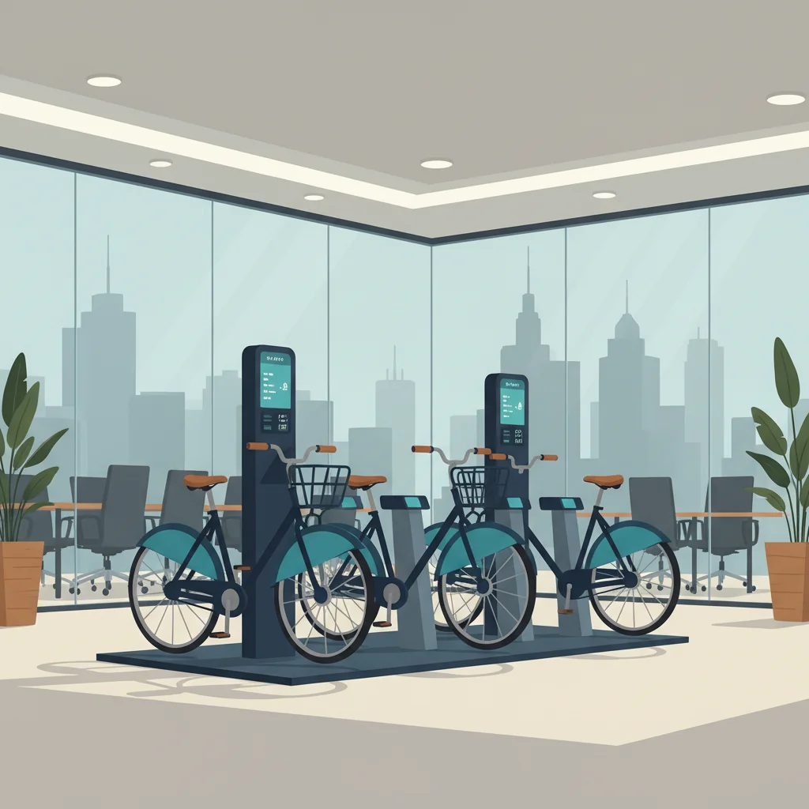
旅遊與交通例句：The city has introduced a new rental program for bikes to encourage sustainable commuting.
該市推出了一項新的自行車租賃計畫，以鼓勵永續通勤。
High-end corporate editorial vector illustration of bikes. Core scene: Flat vector illustration of a city bike-sharing station with several bikes, clean corporate style, navy blue and slate, 8k. Context: The city has introduced a new rental program for bikes to encourage sustainable commuting. Style & Lighting: Clean refined vector lines, mature corporate aesthetic, sophisticated deep navy blue, charcoal, warm oak wood, and subtle teal accents. Polished conference glass partitions showing high-rise city skyline, professional recessed ceiling lighting casting soft natural shadows, elegant office plants, balanced contrast and realistic proportions, Dribbble and Behance top-tier commercial editorial art, 8k resolution, 1:1 square composition.
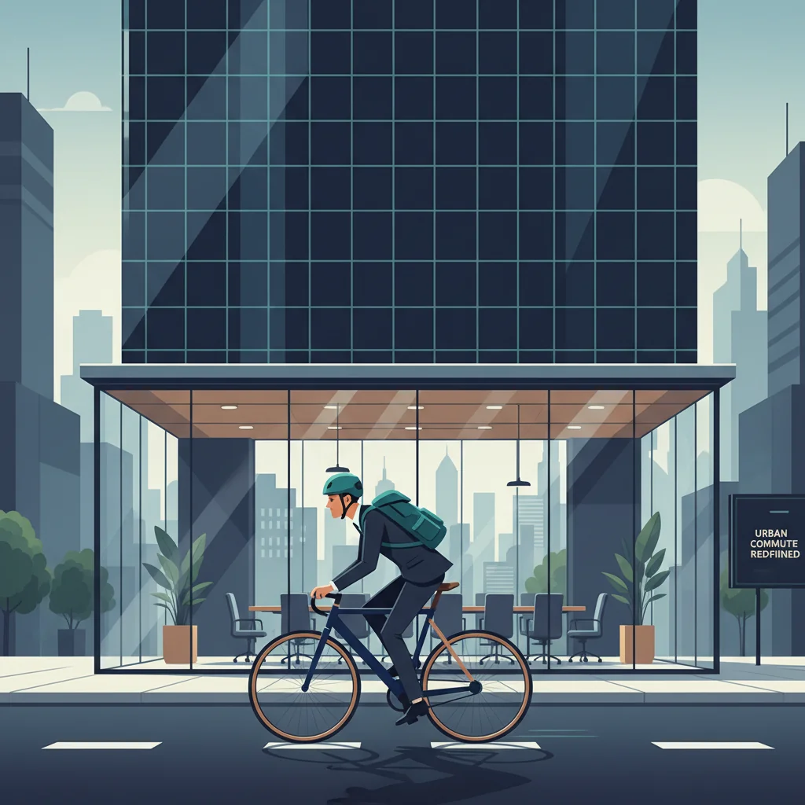
旅遊與交通例句：He decided to bike to the office today to avoid the morning traffic congestion.
他今天決定騎自行車去辦公室，以避開早晨的交通擁堵。
High-end corporate editorial vector illustration of bike. Core scene: Flat vector illustration of a professional riding a bike on a city street, modern office building in the background, clean lines, navy blue and teal, 8k. Context: He decided to bike to the office today to avoid the morning traffic congestion. Style & Lighting: Clean refined vector lines, mature corporate aesthetic, sophisticated deep navy blue, charcoal, warm oak wood, and subtle teal accents. Polished conference glass partitions showing high-rise city skyline, professional recessed ceiling lighting casting soft natural shadows, elegant office plants, balanced contrast and realistic proportions, Dribbble and Behance top-tier commercial editorial art, 8k resolution, 1:1 square composition.
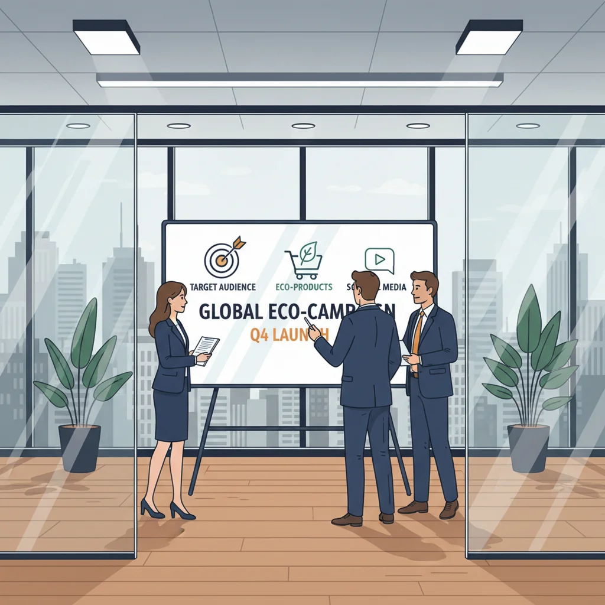
一般專業例句：We are planning a big marketing campaign to promote our new line of eco-friendly products.
我們正在規劃一場大型行銷活動，以推廣我們的新系列環保產品。
High-end corporate editorial vector illustration of big. Core scene: Flat vector illustration of a marketing team planning a campaign on a whiteboard, large icons, clean lines, corporate navy blue and amber, 8k. Context: We are planning a big marketing campaign to promote our new line of eco-friendly products. Style & Lighting: Clean refined vector lines, mature corporate aesthetic, sophisticated deep navy blue, charcoal, warm oak wood, and subtle teal accents. Polished conference glass partitions showing high-rise city skyline, professional recessed ceiling lighting casting soft natural shadows, elegant office plants, balanced contrast and realistic proportions, Dribbble and Behance top-tier commercial editorial art, 8k resolution, 1:1 square composition.
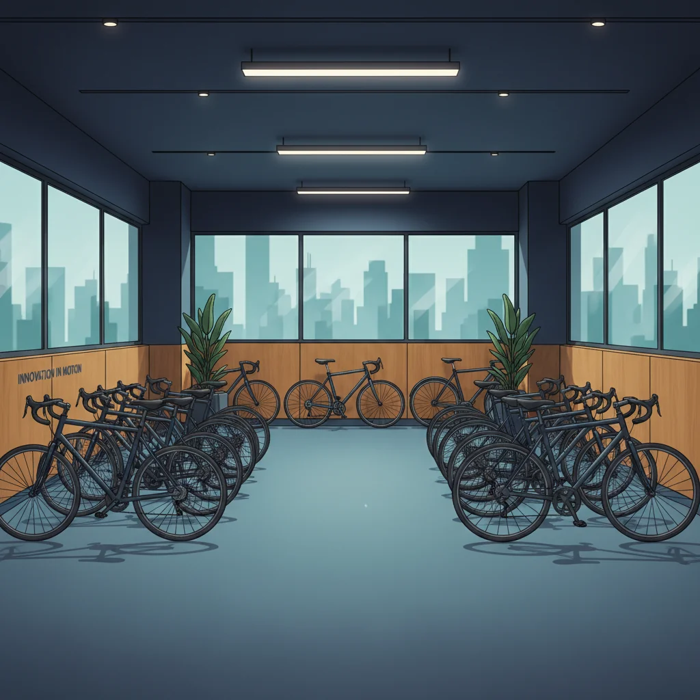
旅遊與交通例句：Several employees requested more space for their bicycles in the underground parking garage.
幾位員工要求在地下停車場為他們的自行車提供更多空間。
High-end corporate editorial vector illustration of bicycles. Core scene: Flat vector illustration of an underground parking area with multiple bicycles parked neatly, clean corporate style, slate and navy blue, 8k. Context: Several employees requested more space for their bicycles in the underground parking garage. Style & Lighting: Clean refined vector lines, mature corporate aesthetic, sophisticated deep navy blue, charcoal, warm oak wood, and subtle teal accents. Polished conference glass partitions showing high-rise city skyline, professional recessed ceiling lighting casting soft natural shadows, elegant office plants, balanced contrast and realistic proportions, Dribbble and Behance top-tier commercial editorial art, 8k resolution, 1:1 square composition.
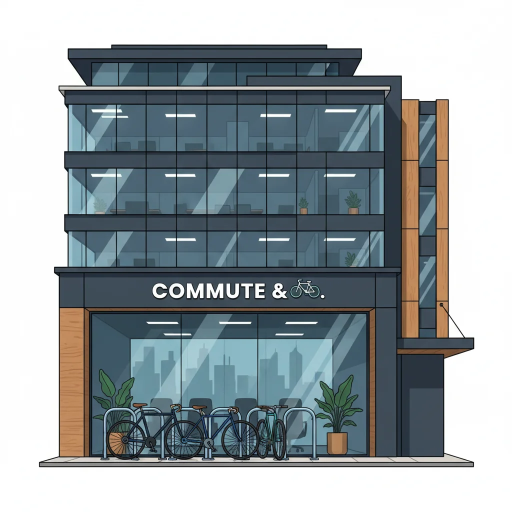
旅遊與交通例句：The company provides a secure bicycle storage area for employees who commute to work by bike.
公司為騎自行車通勤的員工提供了安全的自行車停放區。
High-end corporate editorial vector illustration of bicycle. Core scene: Flat vector illustration of a modern office building exterior with a designated bicycle rack, clean lines, corporate navy blue and teal, 8k. Context: The company provides a secure bicycle storage area for employees who commute to work by bike. Style & Lighting: Clean refined vector lines, mature corporate aesthetic, sophisticated deep navy blue, charcoal, warm oak wood, and subtle teal accents. Polished conference glass partitions showing high-rise city skyline, professional recessed ceiling lighting casting soft natural shadows, elegant office plants, balanced contrast and realistic proportions, Dribbble and Behance top-tier commercial editorial art, 8k resolution, 1:1 square composition.
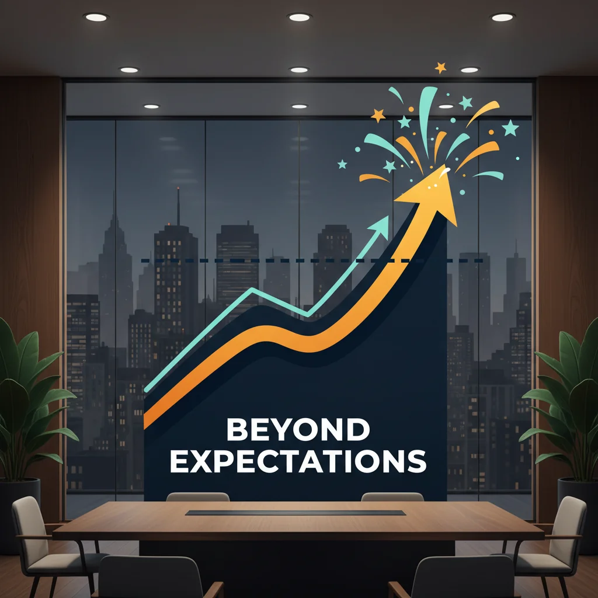
辦公日常例句：The project's success went beyond our expectations, resulting in a significant increase in revenue.
該專案的成功超出了我們的預期，導致營收顯著成長。
High-end corporate editorial vector illustration of beyond. Core scene: Flat vector illustration of a rising growth graph exceeding a target line, celebratory atmosphere, clean corporate style, navy blue and amber, 8k. Context: The project's success went beyond our expectations, resulting in a significant increase in revenue. Style & Lighting: Clean refined vector lines, mature corporate aesthetic, sophisticated deep navy blue, charcoal, warm oak wood, and subtle teal accents. Polished conference glass partitions showing high-rise city skyline, professional recessed ceiling lighting casting soft natural shadows, elegant office plants, balanced contrast and realistic proportions, Dribbble and Behance top-tier commercial editorial art, 8k resolution, 1:1 square composition.
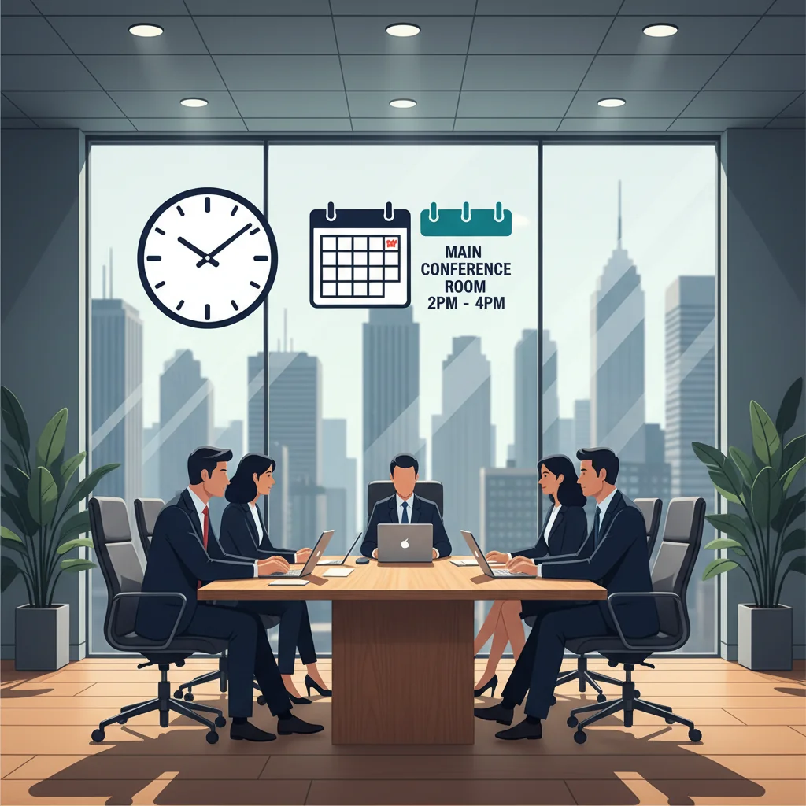
溝通互動例句：The meeting is scheduled between 2:00 PM and 4:00 PM in the main conference room.
會議預定在下午兩點到四點之間於主會議室舉行。
High-end corporate editorial vector illustration of between. Core scene: Flat vector illustration of a wall clock showing the time, a calendar icon, professional meeting setting, navy blue and slate, 8k. Context: The meeting is scheduled between 2:00 PM and 4:00 PM in the main conference room. Style & Lighting: Clean refined vector lines, mature corporate aesthetic, sophisticated deep navy blue, charcoal, warm oak wood, and subtle teal accents. Polished conference glass partitions showing high-rise city skyline, professional recessed ceiling lighting casting soft natural shadows, elegant office plants, balanced contrast and realistic proportions, Dribbble and Behance top-tier commercial editorial art, 8k resolution, 1:1 square composition.
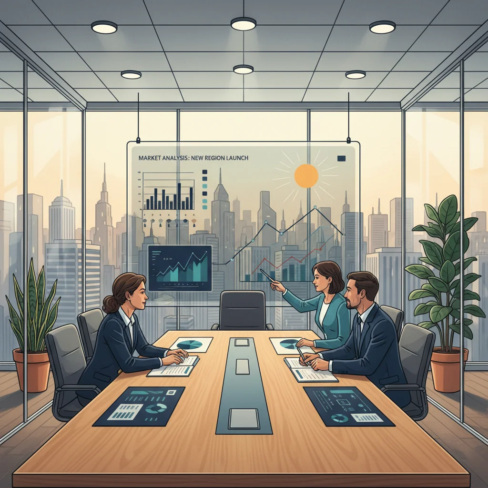
辦公日常例句：It would be better to do a thorough market analysis before launching the product in a new region.
在新的地區推出產品之前，最好先進行徹底的市場分析。
High-end corporate editorial vector illustration of better to do. Core scene: Flat vector illustration of a team brainstorming around a table with charts and graphs, analytical focus, clean corporate style, navy blue and teal, 8k. Context: It would be better to do a thorough market analysis before launching the product in a new region. Style & Lighting: Clean refined vector lines, mature corporate aesthetic, sophisticated deep navy blue, charcoal, warm oak wood, and subtle teal accents. Polished conference glass partitions showing high-rise city skyline, professional recessed ceiling lighting casting soft natural shadows, elegant office plants, balanced contrast and realistic proportions, Dribbble and Behance top-tier commercial editorial art, 8k resolution, 1:1 square composition.
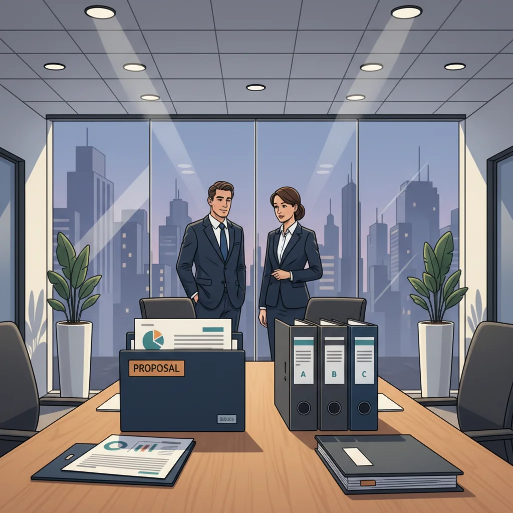
溝通互動例句：Besides the primary proposal, we have prepared several alternative strategies for the client to consider.
除了主要的提案外，我們還準備了幾項替代策略供客戶考慮。
High-end corporate editorial vector illustration of besides. Core scene: Flat vector illustration of a business presentation, multiple document folders on a table, professional atmosphere, navy blue and amber, 8k. Context: Besides the primary proposal, we have prepared several alternative strategies for the client to consider. Style & Lighting: Clean refined vector lines, mature corporate aesthetic, sophisticated deep navy blue, charcoal, warm oak wood, and subtle teal accents. Polished conference glass partitions showing high-rise city skyline, professional recessed ceiling lighting casting soft natural shadows, elegant office plants, balanced contrast and realistic proportions, Dribbble and Behance top-tier commercial editorial art, 8k resolution, 1:1 square composition.
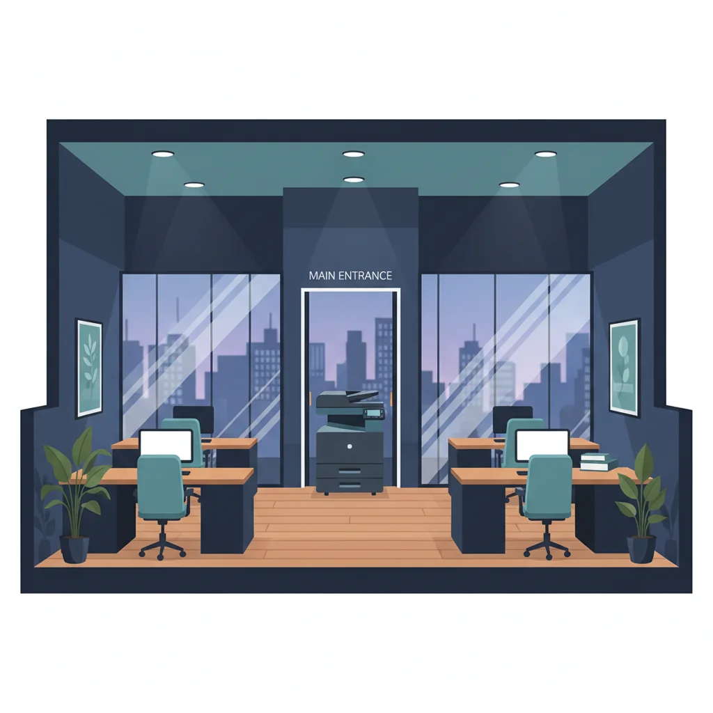
辦公日常例句：The printer is located beside the main entrance of the department for easy access by all staff.
印表機位於部門正門旁邊，方便所有員工使用。
High-end corporate editorial vector illustration of beside. Core scene: Flat vector illustration of an office floor plan, a printer placed next to a doorway, clean lines, corporate slate and navy blue, 8k. Context: The printer is located beside the main entrance of the department for easy access by all staff. Style & Lighting: Clean refined vector lines, mature corporate aesthetic, sophisticated deep navy blue, charcoal, warm oak wood, and subtle teal accents. Polished conference glass partitions showing high-rise city skyline, professional recessed ceiling lighting casting soft natural shadows, elegant office plants, balanced contrast and realistic proportions, Dribbble and Behance top-tier commercial editorial art, 8k resolution, 1:1 square composition.
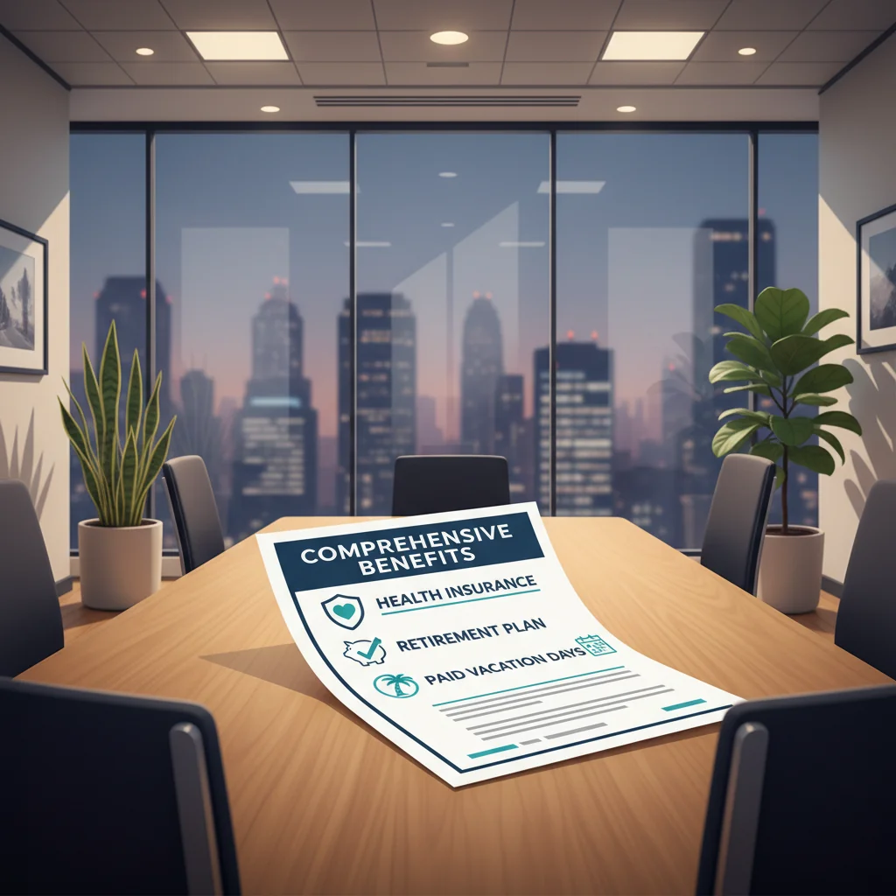
人力資源例句：The comprehensive benefits package includes health insurance, retirement plans, and paid vacation days.
這份全面的福利方案包含健康保險、退休計畫以及帶薪休假。
High-end corporate editorial vector illustration of benefits. Core scene: Flat vector illustration of a document showing a benefits checklist, icons for health and finance, professional corporate style, navy blue and teal, 8k. Context: The comprehensive benefits package includes health insurance, retirement plans, and paid vacation days. Style & Lighting: Clean refined vector lines, mature corporate aesthetic, sophisticated deep navy blue, charcoal, warm oak wood, and subtle teal accents. Polished conference glass partitions showing high-rise city skyline, professional recessed ceiling lighting casting soft natural shadows, elegant office plants, balanced contrast and realistic proportions, Dribbble and Behance top-tier commercial editorial art, 8k resolution, 1:1 square composition.
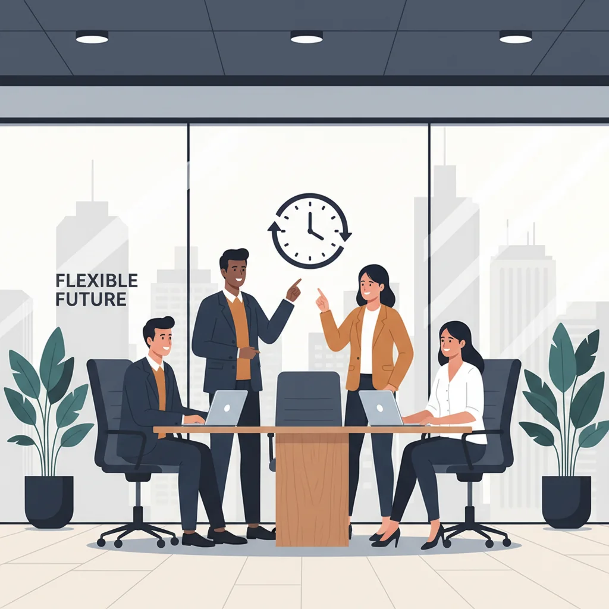
人力資源例句：The new flexible working hours will benefit both the staff and the company by increasing overall morale.
新的彈性工時將透過提升整體士氣，讓員工與公司雙方受益。
High-end corporate editorial vector illustration of benefit. Core scene: Flat vector illustration of a happy team in a modern office, clock icon representing flexible time, clean corporate style, navy blue and amber, 8k. Context: The new flexible working hours will benefit both the staff and the company by increasing overall morale. Style & Lighting: Clean refined vector lines, mature corporate aesthetic, sophisticated deep navy blue, charcoal, warm oak wood, and subtle teal accents. Polished conference glass partitions showing high-rise city skyline, professional recessed ceiling lighting casting soft natural shadows, elegant office plants, balanced contrast and realistic proportions, Dribbble and Behance top-tier commercial editorial art, 8k resolution, 1:1 square composition.
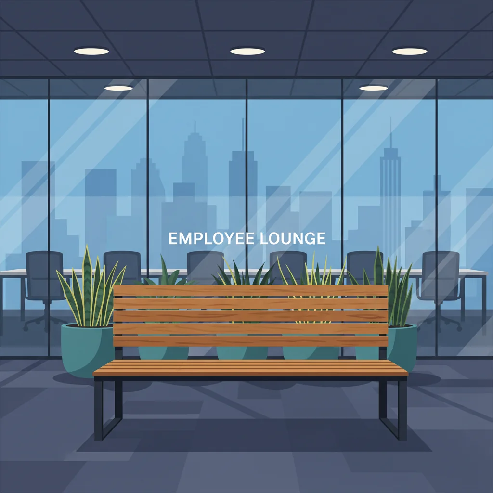
物業與不動產例句：We have installed a new wooden bench in the office courtyard for employees to use during their lunch breaks.
我們在辦公大樓的中庭安裝了一張新的木製長椅，供員工午休時使用。
High-end corporate editorial vector illustration of bench. Core scene: Flat vector illustration of a modern office courtyard with a sleek wooden bench, greenery, clean lines, corporate navy blue and teal, 8k. Context: We have installed a new wooden bench in the office courtyard for employees to use during their lunch breaks. Style & Lighting: Clean refined vector lines, mature corporate aesthetic, sophisticated deep navy blue, charcoal, warm oak wood, and subtle teal accents. Polished conference glass partitions showing high-rise city skyline, professional recessed ceiling lighting casting soft natural shadows, elegant office plants, balanced contrast and realistic proportions, Dribbble and Behance top-tier commercial editorial art, 8k resolution, 1:1 square composition.
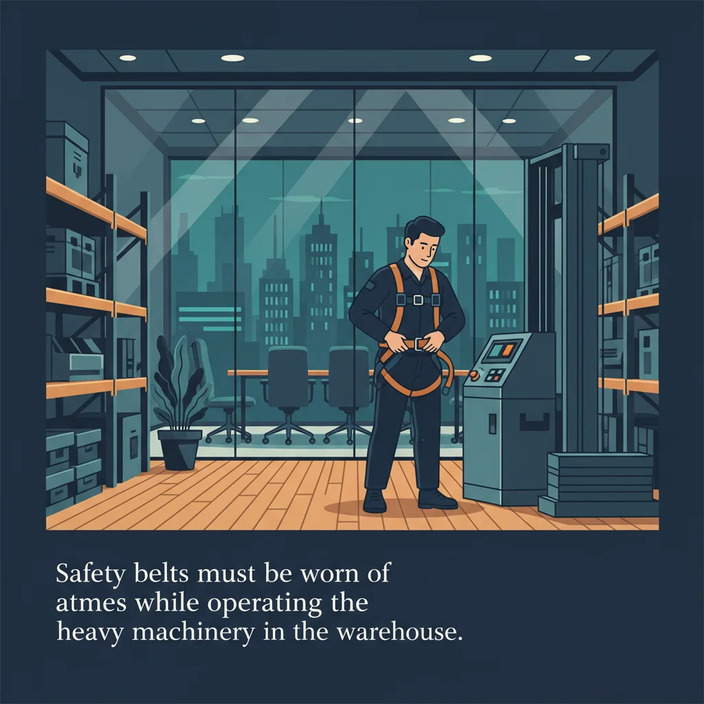
辦公日常例句：Safety belts must be worn at all times while operating the heavy machinery in the warehouse.
在倉庫操作重型機械時，必須隨時繫好安全帶。
High-end corporate editorial vector illustration of belts. Core scene: Flat vector illustration of a warehouse worker wearing a safety harness and belt, industrial safety gear, clean corporate style, navy blue and amber, 8k. Context: Safety belts must be worn at all times while operating the heavy machinery in the warehouse. Style & Lighting: Clean refined vector lines, mature corporate aesthetic, sophisticated deep navy blue, charcoal, warm oak wood, and subtle teal accents. Polished conference glass partitions showing high-rise city skyline, professional recessed ceiling lighting casting soft natural shadows, elegant office plants, balanced contrast and realistic proportions, Dribbble and Behance top-tier commercial editorial art, 8k resolution, 1:1 square composition.
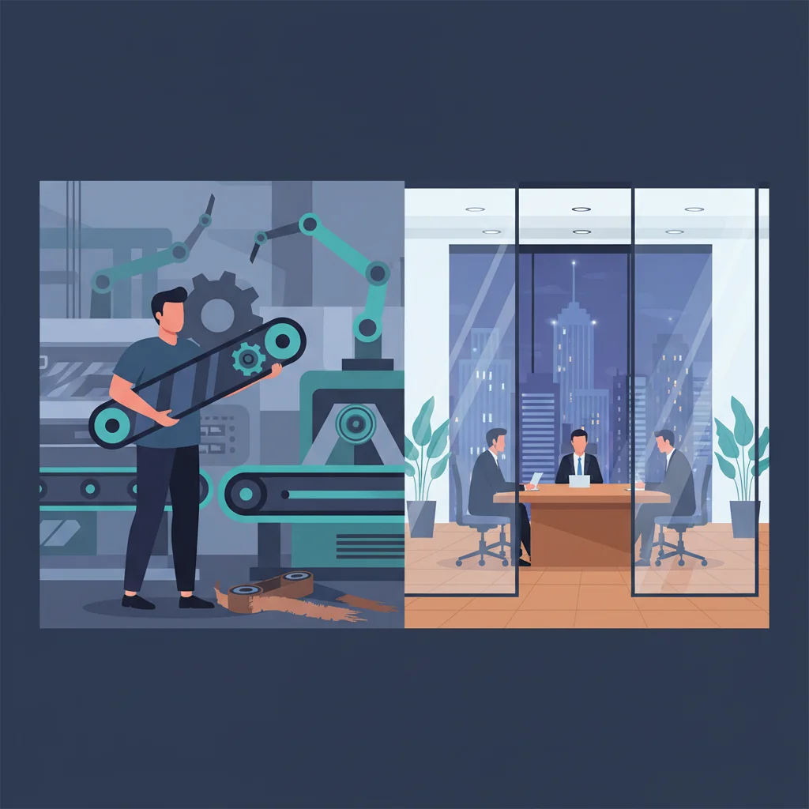
設備檢修例句：The technician replaced the worn conveyor belt to ensure the production line continues to operate smoothly.
技術人員更換了磨損的傳送帶，以確保生產線能持續順暢運作。
High-end corporate editorial vector illustration of belt. Core scene: Flat vector illustration of a factory production line, a technician holding a mechanical belt, industrial setting, clean outlines, teal and slate, 8k. Context: The technician replaced the worn conveyor belt to ensure the production line continues to operate smoothly. Style & Lighting: Clean refined vector lines, mature corporate aesthetic, sophisticated deep navy blue, charcoal, warm oak wood, and subtle teal accents. Polished conference glass partitions showing high-rise city skyline, professional recessed ceiling lighting casting soft natural shadows, elegant office plants, balanced contrast and realistic proportions, Dribbble and Behance top-tier commercial editorial art, 8k resolution, 1:1 square composition.
例句：The quarterly sales figures fell below our initial projections due to unexpected market fluctuations.
由於市場出現意外波動，本季度的銷售數據低於我們最初的預測。
High-end corporate editorial vector illustration of below. Core scene: Flat vector illustration of a downward trending bar chart on a tablet screen, a professional analyzing data, clean lines, corporate navy blue and amber, 8k. Context: The quarterly sales figures fell below our initial projections due to unexpected market fluctuations. Style & Lighting: Clean refined vector lines, mature corporate aesthetic, sophisticated deep navy blue, charcoal, warm oak wood, and subtle teal accents. Polished conference glass partitions showing high-rise city skyline, professional recessed ceiling lighting casting soft natural shadows, elegant office plants, balanced contrast and realistic proportions, Dribbble and Behance top-tier commercial editorial art, 8k resolution, 1:1 square composition.
例句：The patent for this innovative cooling system does not belong to the contractor, but to our company.
這項創新冷卻系統的專利權並不屬於承包商，而是屬於我們公司。
High-end corporate editorial vector illustration of belong to. Core scene: Flat vector illustration of a legal document with a patent seal, a handshake between two business professionals, professional corporate style, navy blue and amber, 8k. Context: The patent for this innovative cooling system does not belong to the contractor, but to our company. Style & Lighting: Clean refined vector lines, mature corporate aesthetic, sophisticated deep navy blue, charcoal, warm oak wood, and subtle teal accents. Polished conference glass partitions showing high-rise city skyline, professional recessed ceiling lighting casting soft natural shadows, elegant office plants, balanced contrast and realistic proportions, Dribbble and Behance top-tier commercial editorial art, 8k resolution, 1:1 square composition.
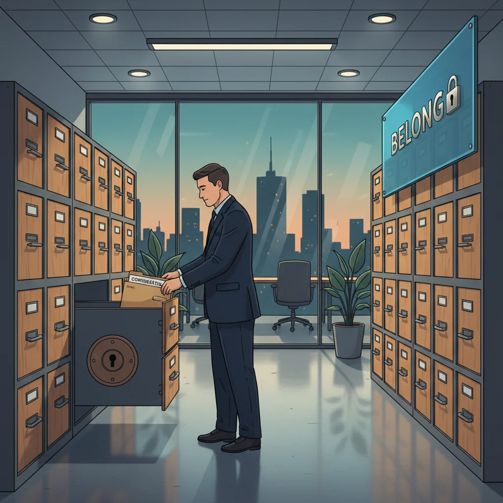
辦公行政例句：These confidential files belong in the secure archive room rather than on the open desk.
這些機密文件應該存放在安全檔案室，而不是放在開放的辦公桌上。
High-end corporate editorial vector illustration of belong. Core scene: Flat vector illustration of a secure office archive room with rows of filing cabinets, a person placing a folder into a locked drawer, clean outlines, navy blue and slate, 8k. Context: These confidential files belong in the secure archive room rather than on the open desk. Style & Lighting: Clean refined vector lines, mature corporate aesthetic, sophisticated deep navy blue, charcoal, warm oak wood, and subtle teal accents. Polished conference glass partitions showing high-rise city skyline, professional recessed ceiling lighting casting soft natural shadows, elegant office plants, balanced contrast and realistic proportions, Dribbble and Behance top-tier commercial editorial art, 8k resolution, 1:1 square composition.
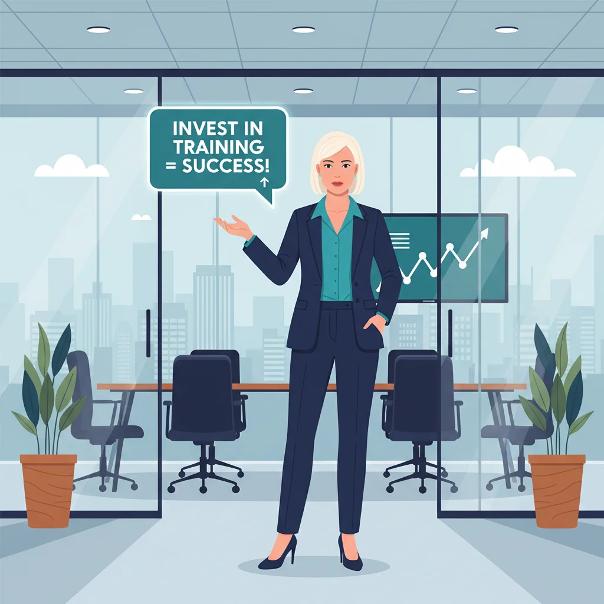
溝通互動例句：Our CEO believes that investing in employee training is the key to long-term corporate success.
我們的執行長認為，投資員工培訓是企業長期成功的關鍵。
High-end corporate editorial vector illustration of believes. Core scene: Flat vector illustration of a CEO standing in a bright, minimalist office, professional attire, speech bubble icon, corporate teal and slate color palette, 8k. Context: Our CEO believes that investing in employee training is the key to long-term corporate success. Style & Lighting: Clean refined vector lines, mature corporate aesthetic, sophisticated deep navy blue, charcoal, warm oak wood, and subtle teal accents. Polished conference glass partitions showing high-rise city skyline, professional recessed ceiling lighting casting soft natural shadows, elegant office plants, balanced contrast and realistic proportions, Dribbble and Behance top-tier commercial editorial art, 8k resolution, 1:1 square composition.
例句：The management believed that the new software would significantly increase our team's overall productivity.
管理層相信這套新軟體將顯著提升我們團隊的整體生產力。
High-end corporate editorial vector illustration of believed. Core scene: Flat vector illustration of a modern office meeting room, a manager pointing at a digital dashboard on a large screen, clean lines, corporate navy blue and amber accents, 8k. Context: The management believed that the new software would significantly increase our team's overall productivity. Style & Lighting: Clean refined vector lines, mature corporate aesthetic, sophisticated deep navy blue, charcoal, warm oak wood, and subtle teal accents. Polished conference glass partitions showing high-rise city skyline, professional recessed ceiling lighting casting soft natural shadows, elegant office plants, balanced contrast and realistic proportions, Dribbble and Behance top-tier commercial editorial art, 8k resolution, 1:1 square composition.
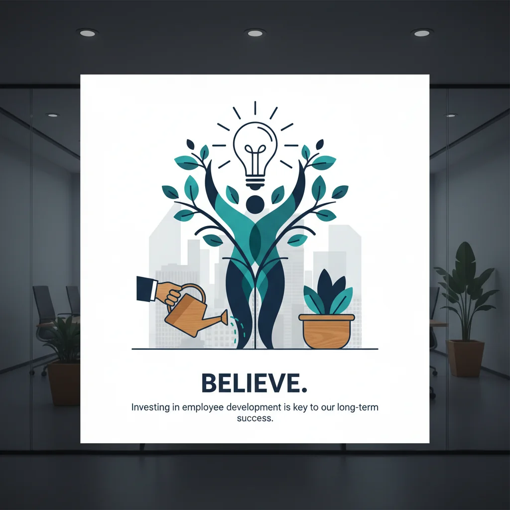
人力資源例句：We believe that investing in employee development is key to our long-term success.
我們相信投資員工發展是我們長期成功的關鍵。
High-end corporate editorial vector illustration of believe. Core scene: Flat vector illustration of a lightbulb icon representing an idea, a person growing like a plant, teal and navy blue color palette, clean corporate editorial style. Context: We believe that investing in employee development is key to our long-term success. Style & Lighting: Clean refined vector lines, mature corporate aesthetic, sophisticated deep navy blue, charcoal, warm oak wood, and subtle teal accents. Polished conference glass partitions showing high-rise city skyline, professional recessed ceiling lighting casting soft natural shadows, elegant office plants, balanced contrast and realistic proportions, Dribbble and Behance top-tier commercial editorial art, 8k resolution, 1:1 square composition.
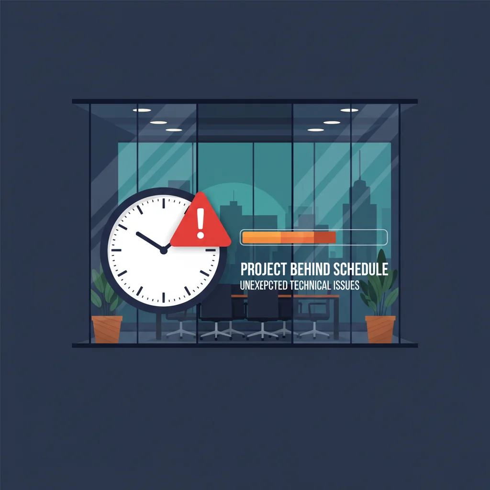
辦公行政例句：The project is currently behind schedule due to unexpected technical issues.
由於意外的技術問題，該專案目前進度落後。
High-end corporate editorial vector illustration of behind schedule. Core scene: Flat vector illustration of a clock with a red warning icon, a progress bar that is only partially filled, amber and slate color palette, professional corporate style. Context: The project is currently behind schedule due to unexpected technical issues. Style & Lighting: Clean refined vector lines, mature corporate aesthetic, sophisticated deep navy blue, charcoal, warm oak wood, and subtle teal accents. Polished conference glass partitions showing high-rise city skyline, professional recessed ceiling lighting casting soft natural shadows, elegant office plants, balanced contrast and realistic proportions, Dribbble and Behance top-tier commercial editorial art, 8k resolution, 1:1 square composition.
例句：The main office is located behind the central train station.
總辦公室位於中央火車站的後面。
High-end corporate editorial vector illustration of behind. Core scene: Flat vector illustration of a city map showing a building icon located behind a train station icon, clean lines, navy blue and slate color palette. Context: The main office is located behind the central train station. Style & Lighting: Clean refined vector lines, mature corporate aesthetic, sophisticated deep navy blue, charcoal, warm oak wood, and subtle teal accents. Polished conference glass partitions showing high-rise city skyline, professional recessed ceiling lighting casting soft natural shadows, elegant office plants, balanced contrast and realistic proportions, Dribbble and Behance top-tier commercial editorial art, 8k resolution, 1:1 square composition.
例句：The company has a strict code of conduct regarding professional behavior in the workplace.
公司對於職場上的專業行為有嚴格的行為準則。
High-end corporate editorial vector illustration of behavior. Core scene: Flat vector illustration of a document titled 'Code of Conduct' with a checkmark, professional office environment, navy blue and teal colors, minimalist design. Context: The company has a strict code of conduct regarding professional behavior in the workplace. Style & Lighting: Clean refined vector lines, mature corporate aesthetic, sophisticated deep navy blue, charcoal, warm oak wood, and subtle teal accents. Polished conference glass partitions showing high-rise city skyline, professional recessed ceiling lighting casting soft natural shadows, elegant office plants, balanced contrast and realistic proportions, Dribbble and Behance top-tier commercial editorial art, 8k resolution, 1:1 square composition.
例句：Construction on the new warehouse has already begun, and it is expected to finish by winter.
新倉庫的建設工程已經開始，預計將於冬季前完工。
High-end corporate editorial vector illustration of begun. Core scene: Flat vector illustration of a construction site with a crane and building frame, slate and amber color scheme, clean lines, professional architectural style. Context: Construction on the new warehouse has already begun, and it is expected to finish by winter. Style & Lighting: Clean refined vector lines, mature corporate aesthetic, sophisticated deep navy blue, charcoal, warm oak wood, and subtle teal accents. Polished conference glass partitions showing high-rise city skyline, professional recessed ceiling lighting casting soft natural shadows, elegant office plants, balanced contrast and realistic proportions, Dribbble and Behance top-tier commercial editorial art, 8k resolution, 1:1 square composition.
例句：The training program begins with an orientation session for all new hires.
培訓計畫以所有新進員工的迎新說明會開始。
High-end corporate editorial vector illustration of begins. Core scene: Flat vector illustration of a group of people in a seminar room, a presenter at a screen, teal and navy blue color palette, clean corporate editorial style. Context: The training program begins with an orientation session for all new hires. Style & Lighting: Clean refined vector lines, mature corporate aesthetic, sophisticated deep navy blue, charcoal, warm oak wood, and subtle teal accents. Polished conference glass partitions showing high-rise city skyline, professional recessed ceiling lighting casting soft natural shadows, elegant office plants, balanced contrast and realistic proportions, Dribbble and Behance top-tier commercial editorial art, 8k resolution, 1:1 square composition.
例句：At the beginning of the fiscal year, we set new performance targets for the sales team.
在會計年度開始時，我們為銷售團隊設定了新的績效目標。
High-end corporate editorial vector illustration of beginning. Core scene: Flat vector illustration of a calendar page showing the start of a year, a rising graph icon, navy blue and amber colors, professional business style. Context: At the beginning of the fiscal year, we set new performance targets for the sales team. Style & Lighting: Clean refined vector lines, mature corporate aesthetic, sophisticated deep navy blue, charcoal, warm oak wood, and subtle teal accents. Polished conference glass partitions showing high-rise city skyline, professional recessed ceiling lighting casting soft natural shadows, elegant office plants, balanced contrast and realistic proportions, Dribbble and Behance top-tier commercial editorial art, 8k resolution, 1:1 square composition.
例句：This workshop is designed for the beginner who wants to learn basic data analysis skills.
這個研討會是為想要學習基礎數據分析技能的初學者所設計的。
High-end corporate editorial vector illustration of beginner. Core scene: Flat vector illustration of a laptop screen showing a simple bar chart, a person taking notes, teal and slate color palette, clean corporate design. Context: This workshop is designed for the beginner who wants to learn basic data analysis skills. Style & Lighting: Clean refined vector lines, mature corporate aesthetic, sophisticated deep navy blue, charcoal, warm oak wood, and subtle teal accents. Polished conference glass partitions showing high-rise city skyline, professional recessed ceiling lighting casting soft natural shadows, elegant office plants, balanced contrast and realistic proportions, Dribbble and Behance top-tier commercial editorial art, 8k resolution, 1:1 square composition.
例句：We will begin the recruitment process for the new department next month.
我們將於下個月開始新部門的招募流程。
High-end corporate editorial vector illustration of begin. Core scene: Flat vector illustration of a magnifying glass over a stack of resumes, professional HR setting, navy blue and amber color scheme, clean vector style. Context: We will begin the recruitment process for the new department next month. Style & Lighting: Clean refined vector lines, mature corporate aesthetic, sophisticated deep navy blue, charcoal, warm oak wood, and subtle teal accents. Polished conference glass partitions showing high-rise city skyline, professional recessed ceiling lighting casting soft natural shadows, elegant office plants, balanced contrast and realistic proportions, Dribbble and Behance top-tier commercial editorial art, 8k resolution, 1:1 square composition.
例句：The marketing campaign began last Monday and has already generated significant interest.
行銷活動於上週一開始，並且已經引起了極大的興趣。
High-end corporate editorial vector illustration of began. Core scene: Flat vector illustration of a megaphone icon with sound waves, representing a campaign launch, teal and navy blue color palette, modern commercial art. Context: The marketing campaign began last Monday and has already generated significant interest. Style & Lighting: Clean refined vector lines, mature corporate aesthetic, sophisticated deep navy blue, charcoal, warm oak wood, and subtle teal accents. Polished conference glass partitions showing high-rise city skyline, professional recessed ceiling lighting casting soft natural shadows, elegant office plants, balanced contrast and realistic proportions, Dribbble and Behance top-tier commercial editorial art, 8k resolution, 1:1 square composition.
例句：Please review the contract terms before signing the document.
請在簽署文件前審閱合約條款。
High-end corporate editorial vector illustration of before. Core scene: Flat vector illustration of a document with a signature line and a magnifying glass, professional office setting, navy blue and amber accents, clean lines. Context: Please review the contract terms before signing the document. Style & Lighting: Clean refined vector lines, mature corporate aesthetic, sophisticated deep navy blue, charcoal, warm oak wood, and subtle teal accents. Polished conference glass partitions showing high-rise city skyline, professional recessed ceiling lighting casting soft natural shadows, elegant office plants, balanced contrast and realistic proportions, Dribbble and Behance top-tier commercial editorial art, 8k resolution, 1:1 square composition.
例句：The new apartment complex offers units with two or three bedrooms to accommodate families.
新的公寓大樓提供兩房或三房的單位，以滿足家庭需求。
High-end corporate editorial vector illustration of bedrooms. Core scene: Flat vector illustration of a modern apartment building exterior, clean geometric shapes, teal and navy blue colors, professional real estate editorial style. Context: The new apartment complex offers units with two or three bedrooms to accommodate families. Style & Lighting: Clean refined vector lines, mature corporate aesthetic, sophisticated deep navy blue, charcoal, warm oak wood, and subtle teal accents. Polished conference glass partitions showing high-rise city skyline, professional recessed ceiling lighting casting soft natural shadows, elegant office plants, balanced contrast and realistic proportions, Dribbble and Behance top-tier commercial editorial art, 8k resolution, 1:1 square composition.
例句：The suite features a spacious master bedroom with an attached office area.
該套房設有一間寬敞的主臥室，並附帶一個辦公區。
High-end corporate editorial vector illustration of bedroom. Core scene: Flat vector illustration of a luxury hotel suite layout, top-down view, showing a bed and a desk, navy blue and slate color scheme, professional architectural style. Context: The suite features a spacious master bedroom with an attached office area. Style & Lighting: Clean refined vector lines, mature corporate aesthetic, sophisticated deep navy blue, charcoal, warm oak wood, and subtle teal accents. Polished conference glass partitions showing high-rise city skyline, professional recessed ceiling lighting casting soft natural shadows, elegant office plants, balanced contrast and realistic proportions, Dribbble and Behance top-tier commercial editorial art, 8k resolution, 1:1 square composition.
例句：The hotel provides a high-quality bed in every room to ensure guest comfort.
飯店在每間客房都提供高品質的床鋪，以確保賓客的舒適度。
High-end corporate editorial vector illustration of bed. Core scene: Flat vector illustration of a modern hotel bedroom interior, clean lines, minimalist furniture, teal and amber color palette, high-end commercial style. Context: The hotel provides a high-quality bed in every room to ensure guest comfort. Style & Lighting: Clean refined vector lines, mature corporate aesthetic, sophisticated deep navy blue, charcoal, warm oak wood, and subtle teal accents. Polished conference glass partitions showing high-rise city skyline, professional recessed ceiling lighting casting soft natural shadows, elegant office plants, balanced contrast and realistic proportions, Dribbble and Behance top-tier commercial editorial art, 8k resolution, 1:1 square composition.
例句：Effective communication becomes essential when managing a cross-functional project team.
在管理跨職能專案團隊時，有效的溝通變得至關重要。
High-end corporate editorial vector illustration of becomes. Core scene: Flat vector illustration of a diverse group of professionals around a table, speech bubbles representing communication, navy blue and slate colors, clean corporate style. Context: Effective communication becomes essential when managing a cross-functional project team. Style & Lighting: Clean refined vector lines, mature corporate aesthetic, sophisticated deep navy blue, charcoal, warm oak wood, and subtle teal accents. Polished conference glass partitions showing high-rise city skyline, professional recessed ceiling lighting casting soft natural shadows, elegant office plants, balanced contrast and realistic proportions, Dribbble and Behance top-tier commercial editorial art, 8k resolution, 1:1 square composition.
例句：We aim to become a leader in sustainable energy solutions within the next five years.
我們的目標是在未來五年內成為永續能源解決方案的領導者。
High-end corporate editorial vector illustration of become. Core scene: Flat vector illustration of a wind turbine and solar panel icon, representing green energy, rising arrow graphic, amber and teal color palette, professional vector art. Context: We aim to become a leader in sustainable energy solutions within the next five years. Style & Lighting: Clean refined vector lines, mature corporate aesthetic, sophisticated deep navy blue, charcoal, warm oak wood, and subtle teal accents. Polished conference glass partitions showing high-rise city skyline, professional recessed ceiling lighting casting soft natural shadows, elegant office plants, balanced contrast and realistic proportions, Dribbble and Behance top-tier commercial editorial art, 8k resolution, 1:1 square composition.
例句：The shipment was delayed because of severe weather conditions at the port.
由於港口惡劣的天氣狀況，貨運被延誤了。
High-end corporate editorial vector illustration of because. Core scene: Flat vector illustration of a cargo ship at a dock with storm clouds above, stylized waves, slate and navy blue color palette, clean lines. Context: The shipment was delayed because of severe weather conditions at the port. Style & Lighting: Clean refined vector lines, mature corporate aesthetic, sophisticated deep navy blue, charcoal, warm oak wood, and subtle teal accents. Polished conference glass partitions showing high-rise city skyline, professional recessed ceiling lighting casting soft natural shadows, elegant office plants, balanced contrast and realistic proportions, Dribbble and Behance top-tier commercial editorial art, 8k resolution, 1:1 square composition.
例句：After the merger, the company became the largest supplier in the regional market.
合併後，該公司成為區域市場中最大的供應商。
High-end corporate editorial vector illustration of became. Core scene: Flat vector illustration of a rising bar chart icon, representing growth and market dominance, navy blue and teal color scheme, minimalist corporate design. Context: After the merger, the company became the largest supplier in the regional market. Style & Lighting: Clean refined vector lines, mature corporate aesthetic, sophisticated deep navy blue, charcoal, warm oak wood, and subtle teal accents. Polished conference glass partitions showing high-rise city skyline, professional recessed ceiling lighting casting soft natural shadows, elegant office plants, balanced contrast and realistic proportions, Dribbble and Behance top-tier commercial editorial art, 8k resolution, 1:1 square composition.
例句：The design team created a beautiful brochure that perfectly highlights our new product line.
設計團隊製作了一份精美的宣傳冊，完美地突顯了我們的新產品系列。
High-end corporate editorial vector illustration of beautiful. Core scene: Flat vector illustration of a sleek, modern brochure layout with elegant typography and abstract product graphics, navy blue and gold accents, professional editorial style. Context: The design team created a beautiful brochure that perfectly highlights our new product line. Style & Lighting: Clean refined vector lines, mature corporate aesthetic, sophisticated deep navy blue, charcoal, warm oak wood, and subtle teal accents. Polished conference glass partitions showing high-rise city skyline, professional recessed ceiling lighting casting soft natural shadows, elegant office plants, balanced contrast and realistic proportions, Dribbble and Behance top-tier commercial editorial art, 8k resolution, 1:1 square composition.
例句：The resort offers a private beach for guests looking to host corporate team-building events.
該度假村為希望舉辦企業團隊建設活動的賓客提供私人海灘。
High-end corporate editorial vector illustration of beach. Core scene: Flat vector illustration of a pristine beach with a modern resort building in the background, stylized palm trees, teal and amber color palette, clean corporate vector art. Context: The resort offers a private beach for guests looking to host corporate team-building events. Style & Lighting: Clean refined vector lines, mature corporate aesthetic, sophisticated deep navy blue, charcoal, warm oak wood, and subtle teal accents. Polished conference glass partitions showing high-rise city skyline, professional recessed ceiling lighting casting soft natural shadows, elegant office plants, balanced contrast and realistic proportions, Dribbble and Behance top-tier commercial editorial art, 8k resolution, 1:1 square composition.
例句：Our remote team is used to collaborating across different time zones using cloud-based tools.
我們的遠端團隊已經習慣使用雲端工具跨時區協作。
High-end corporate editorial vector illustration of be used to -ing. Core scene: Flat vector illustration of a global map with connecting lines between different time zones, digital icons of cloud computing, navy blue and amber theme, modern corporate aesthetic. Context: Our remote team is used to collaborating across different time zones using cloud-based tools. Style & Lighting: Clean refined vector lines, mature corporate aesthetic, sophisticated deep navy blue, charcoal, warm oak wood, and subtle teal accents. Polished conference glass partitions showing high-rise city skyline, professional recessed ceiling lighting casting soft natural shadows, elegant office plants, balanced contrast and realistic proportions, Dribbble and Behance top-tier commercial editorial art, 8k resolution, 1:1 square composition.
例句：All employees are supposed to submit their weekly progress reports by Friday afternoon.
所有員工都應該在週五下午前提交每週進度報告。
High-end corporate editorial vector illustration of be supposed to do. Core scene: Flat vector illustration of a professional office desk with a laptop and a checklist, a clock on the wall, slate and teal color palette, crisp details. Context: All employees are supposed to submit their weekly progress reports by Friday afternoon. Style & Lighting: Clean refined vector lines, mature corporate aesthetic, sophisticated deep navy blue, charcoal, warm oak wood, and subtle teal accents. Polished conference glass partitions showing high-rise city skyline, professional recessed ceiling lighting casting soft natural shadows, elegant office plants, balanced contrast and realistic proportions, Dribbble and Behance top-tier commercial editorial art, 8k resolution, 1:1 square composition.
例句：The new software interface is similar to the previous version, ensuring a smooth transition for our staff.
新軟體介面與舊版本相似，確保員工能順利轉換使用。
High-end corporate editorial vector illustration of be similar to. Core scene: Flat vector illustration of two computer screens side-by-side displaying similar UI layouts, clean geometric shapes, corporate navy blue and amber accents, high-end commercial art. Context: The new software interface is similar to the previous version, ensuring a smooth transition for our staff. Style & Lighting: Clean refined vector lines, mature corporate aesthetic, sophisticated deep navy blue, charcoal, warm oak wood, and subtle teal accents. Polished conference glass partitions showing high-rise city skyline, professional recessed ceiling lighting casting soft natural shadows, elegant office plants, balanced contrast and realistic proportions, Dribbble and Behance top-tier commercial editorial art, 8k resolution, 1:1 square composition.
例句：Guests are kindly requested to be seated before the keynote presentation begins.
懇請各位嘉賓在專題演講開始前入座。
High-end corporate editorial vector illustration of be seated. Core scene: Flat vector illustration of a high-end auditorium with rows of empty chairs, a spotlight on the stage, teal and slate color scheme, minimalist design, 8k. Context: Guests are kindly requested to be seated before the keynote presentation begins. Style & Lighting: Clean refined vector lines, mature corporate aesthetic, sophisticated deep navy blue, charcoal, warm oak wood, and subtle teal accents. Polished conference glass partitions showing high-rise city skyline, professional recessed ceiling lighting casting soft natural shadows, elegant office plants, balanced contrast and realistic proportions, Dribbble and Behance top-tier commercial editorial art, 8k resolution, 1:1 square composition.
例句：The annual board meeting is scheduled for next Tuesday in the main conference room.
年度董事會議預定於下週二在主會議室舉行。
High-end corporate editorial vector illustration of be scheduled for. Core scene: Flat vector illustration of a modern boardroom with a large table, digital calendar icon showing a highlighted date, navy blue and amber color palette, clean lines, professional corporate style. Context: The annual board meeting is scheduled for next Tuesday in the main conference room. Style & Lighting: Clean refined vector lines, mature corporate aesthetic, sophisticated deep navy blue, charcoal, warm oak wood, and subtle teal accents. Polished conference glass partitions showing high-rise city skyline, professional recessed ceiling lighting casting soft natural shadows, elegant office plants, balanced contrast and realistic proportions, Dribbble and Behance top-tier commercial editorial art, 8k resolution, 1:1 square composition.
例句：The client expressed that they are satisfied with the quality of the prototype and are ready to proceed to mass production.
客戶表示他們對原型的品質感到滿意，並準備進入量產階段。
High-end corporate editorial vector illustration of be satisfied with. Core scene: Flat vector illustration of a satisfied client shaking hands with a designer, clean lines, corporate navy and teal palette, 8k. Context: The client expressed that they are satisfied with the quality of the prototype and are ready to proceed to mass production. Style & Lighting: Clean refined vector lines, mature corporate aesthetic, sophisticated deep navy blue, charcoal, warm oak wood, and subtle teal accents. Polished conference glass partitions showing high-rise city skyline, professional recessed ceiling lighting casting soft natural shadows, elegant office plants, balanced contrast and realistic proportions, Dribbble and Behance top-tier commercial editorial art, 8k resolution, 1:1 square composition.
例句：The recent decline in sales is believed to be related to the seasonal fluctuations in consumer demand.
近期銷售額的下滑被認為與消費者需求的季節性波動有關。
High-end corporate editorial vector illustration of be related to. Core scene: Flat vector illustration of a downward trend line graph, clean professional style, navy blue and slate palette, 8k. Context: The recent decline in sales is believed to be related to the seasonal fluctuations in consumer demand. Style & Lighting: Clean refined vector lines, mature corporate aesthetic, sophisticated deep navy blue, charcoal, warm oak wood, and subtle teal accents. Polished conference glass partitions showing high-rise city skyline, professional recessed ceiling lighting casting soft natural shadows, elegant office plants, balanced contrast and realistic proportions, Dribbble and Behance top-tier commercial editorial art, 8k resolution, 1:1 square composition.
例句：Our firm is known for providing exceptional customer service and innovative solutions in the logistics industry.
我們公司以在物流業提供卓越的客戶服務與創新解決方案而聞名。
High-end corporate editorial vector illustration of be known for. Core scene: Flat vector illustration of a gold medal icon and a handshake, representing excellence, clean corporate style, navy and amber palette, 8k. Context: Our firm is known for providing exceptional customer service and innovative solutions in the logistics industry. Style & Lighting: Clean refined vector lines, mature corporate aesthetic, sophisticated deep navy blue, charcoal, warm oak wood, and subtle teal accents. Polished conference glass partitions showing high-rise city skyline, professional recessed ceiling lighting casting soft natural shadows, elegant office plants, balanced contrast and realistic proportions, Dribbble and Behance top-tier commercial editorial art, 8k resolution, 1:1 square composition.
例句：The annual shareholders' meeting will be held in the main auditorium next Friday at 10:00 AM.
年度股東大會將於下週五上午十點在主禮堂舉行。
High-end corporate editorial vector illustration of be held. Core scene: Flat vector illustration of a large auditorium stage with a podium, clean lines, corporate navy and slate palette, 8k. Context: The annual shareholders' meeting will be held in the main auditorium next Friday at 10:00 AM. Style & Lighting: Clean refined vector lines, mature corporate aesthetic, sophisticated deep navy blue, charcoal, warm oak wood, and subtle teal accents. Polished conference glass partitions showing high-rise city skyline, professional recessed ceiling lighting casting soft natural shadows, elegant office plants, balanced contrast and realistic proportions, Dribbble and Behance top-tier commercial editorial art, 8k resolution, 1:1 square composition.
例句：The conference room was full of enthusiastic investors eager to hear about our latest technological breakthroughs.
會議室裡擠滿了熱情的投資者，他們渴望了解我們最新的技術突破。
High-end corporate editorial vector illustration of be full of. Core scene: Flat vector illustration of a crowded conference room with people engaged in conversation, clean lines, corporate navy and amber palette, 8k. Context: The conference room was full of enthusiastic investors eager to hear about our latest technological breakthroughs. Style & Lighting: Clean refined vector lines, mature corporate aesthetic, sophisticated deep navy blue, charcoal, warm oak wood, and subtle teal accents. Polished conference glass partitions showing high-rise city skyline, professional recessed ceiling lighting casting soft natural shadows, elegant office plants, balanced contrast and realistic proportions, Dribbble and Behance top-tier commercial editorial art, 8k resolution, 1:1 square composition.
例句：All staff members must be familiar with the new safety protocols before entering the manufacturing floor.
所有員工在進入製造廠區前，必須熟悉新的安全規程。
High-end corporate editorial vector illustration of be familiar with. Core scene: Flat vector illustration of a safety manual and a factory floor layout, clean professional style, navy blue and teal palette, 8k. Context: All staff members must be familiar with the new safety protocols before entering the manufacturing floor. Style & Lighting: Clean refined vector lines, mature corporate aesthetic, sophisticated deep navy blue, charcoal, warm oak wood, and subtle teal accents. Polished conference glass partitions showing high-rise city skyline, professional recessed ceiling lighting casting soft natural shadows, elegant office plants, balanced contrast and realistic proportions, Dribbble and Behance top-tier commercial editorial art, 8k resolution, 1:1 square composition.
例句：The final decision will be based on the feedback we receive from our primary stakeholders during the consultation phase.
最終決定將基於我們在諮詢階段從主要利害關係人那裡收到的回饋。
High-end corporate editorial vector illustration of be based on. Core scene: Flat vector illustration of a professional discussion table with documents, clean lines, corporate navy and amber palette, 8k. Context: The final decision will be based on the feedback we receive from our primary stakeholders during the consultation phase. Style & Lighting: Clean refined vector lines, mature corporate aesthetic, sophisticated deep navy blue, charcoal, warm oak wood, and subtle teal accents. Polished conference glass partitions showing high-rise city skyline, professional recessed ceiling lighting casting soft natural shadows, elegant office plants, balanced contrast and realistic proportions, Dribbble and Behance top-tier commercial editorial art, 8k resolution, 1:1 square composition.
例句：We are upgrading the office bathrooms to include energy-efficient lighting and water-saving fixtures.
我們正在升級辦公室的洗手間，以納入節能照明與省水設備。
High-end corporate editorial vector illustration of bathrooms. Core scene: Flat vector illustration of modern office facility signage and fixtures, clean lines, slate and navy blue palette, 8k. Context: We are upgrading the office bathrooms to include energy-efficient lighting and water-saving fixtures. Style & Lighting: Clean refined vector lines, mature corporate aesthetic, sophisticated deep navy blue, charcoal, warm oak wood, and subtle teal accents. Polished conference glass partitions showing high-rise city skyline, professional recessed ceiling lighting casting soft natural shadows, elegant office plants, balanced contrast and realistic proportions, Dribbble and Behance top-tier commercial editorial art, 8k resolution, 1:1 square composition.
例句：The hotel management has scheduled a renovation for the lobby bathroom to improve the overall guest experience.
飯店管理層已安排大廳洗手間的翻新工程，以提升整體賓客體驗。
High-end corporate editorial vector illustration of bathroom. Core scene: Flat vector illustration of a modern, clean public restroom interior, minimalist design, corporate navy and teal palette, 8k. Context: The hotel management has scheduled a renovation for the lobby bathroom to improve the overall guest experience. Style & Lighting: Clean refined vector lines, mature corporate aesthetic, sophisticated deep navy blue, charcoal, warm oak wood, and subtle teal accents. Polished conference glass partitions showing high-rise city skyline, professional recessed ceiling lighting casting soft natural shadows, elegant office plants, balanced contrast and realistic proportions, Dribbble and Behance top-tier commercial editorial art, 8k resolution, 1:1 square composition.
例句：The luxury suite features a spacious marble bath, providing guests with a relaxing environment after a long day of travel.
豪華套房設有寬敞的大理石浴缸，為客人在長途旅行後提供了一個放鬆的環境。
High-end corporate editorial vector illustration of bath. Core scene: Flat vector illustration of a modern, minimalist bathroom interior, clean lines, slate and navy blue palette, high-end hotel aesthetic, 8k. Context: The luxury suite features a spacious marble bath, providing guests with a relaxing environment after a long day of travel. Style & Lighting: Clean refined vector lines, mature corporate aesthetic, sophisticated deep navy blue, charcoal, warm oak wood, and subtle teal accents. Polished conference glass partitions showing high-rise city skyline, professional recessed ceiling lighting casting soft natural shadows, elegant office plants, balanced contrast and realistic proportions, Dribbble and Behance top-tier commercial editorial art, 8k resolution, 1:1 square composition.
例句：The online shopping basket feature allows customers to save items for later purchase while they continue browsing the site.
線上購物籃功能允許客戶在繼續瀏覽網站時，將商品儲存起來以便稍後購買。
High-end corporate editorial vector illustration of basket. Core scene: Flat vector illustration of a digital shopping basket icon on a website interface, clean lines, corporate navy and teal palette, 8k. Context: The online shopping basket feature allows customers to save items for later purchase while they continue browsing the site. Style & Lighting: Clean refined vector lines, mature corporate aesthetic, sophisticated deep navy blue, charcoal, warm oak wood, and subtle teal accents. Polished conference glass partitions showing high-rise city skyline, professional recessed ceiling lighting casting soft natural shadows, elegant office plants, balanced contrast and realistic proportions, Dribbble and Behance top-tier commercial editorial art, 8k resolution, 1:1 square composition.
例句：We hold team meetings on a weekly basis to discuss project progress and address any potential bottlenecks.
我們每週舉行一次團隊會議，討論專案進度並解決任何潛在的瓶頸。
High-end corporate editorial vector illustration of basis. Core scene: Flat vector illustration of a calendar with weekly markers and a team meeting icon, clean professional style, navy and amber palette, 8k. Context: We hold team meetings on a weekly basis to discuss project progress and address any potential bottlenecks. Style & Lighting: Clean refined vector lines, mature corporate aesthetic, sophisticated deep navy blue, charcoal, warm oak wood, and subtle teal accents. Polished conference glass partitions showing high-rise city skyline, professional recessed ceiling lighting casting soft natural shadows, elegant office plants, balanced contrast and realistic proportions, Dribbble and Behance top-tier commercial editorial art, 8k resolution, 1:1 square composition.
例句：Basically, the new software update automates the data entry process, saving our team hours of manual work each week.
基本上，這次新的軟體更新自動化了資料輸入流程，每週為我們的團隊節省了數小時的手動工作。
High-end corporate editorial vector illustration of basically. Core scene: Flat vector illustration of a computer screen showing automated data processing, clean lines, modern teal and navy blue palette, 8k. Context: Basically, the new software update automates the data entry process, saving our team hours of manual work each week. Style & Lighting: Clean refined vector lines, mature corporate aesthetic, sophisticated deep navy blue, charcoal, warm oak wood, and subtle teal accents. Polished conference glass partitions showing high-rise city skyline, professional recessed ceiling lighting casting soft natural shadows, elegant office plants, balanced contrast and realistic proportions, Dribbble and Behance top-tier commercial editorial art, 8k resolution, 1:1 square composition.
例句：All new employees are required to complete a basic training program on workplace safety and company policies.
所有新進員工都必須完成關於工作場所安全與公司政策的基礎培訓課程。
High-end corporate editorial vector illustration of basic. Core scene: Flat vector illustration of a training manual and a checklist, clean minimalist design, corporate navy and slate palette, 8k. Context: All new employees are required to complete a basic training program on workplace safety and company policies. Style & Lighting: Clean refined vector lines, mature corporate aesthetic, sophisticated deep navy blue, charcoal, warm oak wood, and subtle teal accents. Polished conference glass partitions showing high-rise city skyline, professional recessed ceiling lighting casting soft natural shadows, elegant office plants, balanced contrast and realistic proportions, Dribbble and Behance top-tier commercial editorial art, 8k resolution, 1:1 square composition.
例句：Our marketing strategy is based on extensive consumer research conducted over the past six months.
我們的行銷策略是基於過去六個月所進行的廣泛消費者研究。
High-end corporate editorial vector illustration of based. Core scene: Flat vector illustration of a data analysis chart and research documents, clean professional style, navy blue and amber color palette, 8k. Context: Our marketing strategy is based on extensive consumer research conducted over the past six months. Style & Lighting: Clean refined vector lines, mature corporate aesthetic, sophisticated deep navy blue, charcoal, warm oak wood, and subtle teal accents. Polished conference glass partitions showing high-rise city skyline, professional recessed ceiling lighting casting soft natural shadows, elegant office plants, balanced contrast and realistic proportions, Dribbble and Behance top-tier commercial editorial art, 8k resolution, 1:1 square composition.
例句：The company is planning to establish a new regional base in Singapore to expand its operations across Southeast Asia.
公司計畫在新加坡建立一個新的區域總部，以擴展其在東南亞的業務。
High-end corporate editorial vector illustration of base. Core scene: Flat vector illustration of a global map with a highlighted regional base, clean lines, corporate navy and teal color scheme, professional business style, 8k. Context: The company is planning to establish a new regional base in Singapore to expand its operations across Southeast Asia. Style & Lighting: Clean refined vector lines, mature corporate aesthetic, sophisticated deep navy blue, charcoal, warm oak wood, and subtle teal accents. Polished conference glass partitions showing high-rise city skyline, professional recessed ceiling lighting casting soft natural shadows, elegant office plants, balanced contrast and realistic proportions, Dribbble and Behance top-tier commercial editorial art, 8k resolution, 1:1 square composition.
例句：Several major banks have announced an increase in interest rates, which will impact our long-term investment strategy.
幾家大型銀行已宣布調升利率，這將影響我們的長期投資策略。
High-end corporate editorial vector illustration of banks. Core scene: Flat vector illustration of a row of modern bank office buildings, clean geometric design, professional slate and navy blue palette, 8k. Context: Several major banks have announced an increase in interest rates, which will impact our long-term investment strategy. Style & Lighting: Clean refined vector lines, mature corporate aesthetic, sophisticated deep navy blue, charcoal, warm oak wood, and subtle teal accents. Polished conference glass partitions showing high-rise city skyline, professional recessed ceiling lighting casting soft natural shadows, elegant office plants, balanced contrast and realistic proportions, Dribbble and Behance top-tier commercial editorial art, 8k resolution, 1:1 square composition.
例句：The new mobile application simplifies online banking for our corporate clients by offering real-time transaction tracking.
這款新的行動應用程式透過提供即時交易追蹤，簡化了我們企業客戶的線上銀行服務。
High-end corporate editorial vector illustration of banking. Core scene: Flat vector illustration of a smartphone displaying a banking app interface, clean icons, corporate navy and amber palette, high-end tech editorial style, 8k. Context: The new mobile application simplifies online banking for our corporate clients by offering real-time transaction tracking. Style & Lighting: Clean refined vector lines, mature corporate aesthetic, sophisticated deep navy blue, charcoal, warm oak wood, and subtle teal accents. Polished conference glass partitions showing high-rise city skyline, professional recessed ceiling lighting casting soft natural shadows, elegant office plants, balanced contrast and realistic proportions, Dribbble and Behance top-tier commercial editorial art, 8k resolution, 1:1 square composition.
例句：Please ensure that your payroll information is linked to the correct bank account to avoid any delays in salary payments.
請確保您的薪資資訊已連結至正確的銀行帳戶，以避免薪資發放延遲。
High-end corporate editorial vector illustration of bank account. Core scene: Flat vector illustration of a secure digital banking interface on a tablet, clean lines, navy blue and teal color scheme, professional corporate design, 8k. Context: Please ensure that your payroll information is linked to the correct bank account to avoid any delays in salary payments. Style & Lighting: Clean refined vector lines, mature corporate aesthetic, sophisticated deep navy blue, charcoal, warm oak wood, and subtle teal accents. Polished conference glass partitions showing high-rise city skyline, professional recessed ceiling lighting casting soft natural shadows, elegant office plants, balanced contrast and realistic proportions, Dribbble and Behance top-tier commercial editorial art, 8k resolution, 1:1 square composition.
例句：Our company has decided to switch to a different bank to take advantage of lower transaction fees for international transfers.
我們公司已決定更換另一家銀行，以利用其較低的國際匯款手續費。
High-end corporate editorial vector illustration of bank. Core scene: Flat vector illustration of a modern bank building facade with a sleek entrance, corporate navy and slate color palette, professional architectural style, 8k. Context: Our company has decided to switch to a different bank to take advantage of lower transaction fees for international transfers. Style & Lighting: Clean refined vector lines, mature corporate aesthetic, sophisticated deep navy blue, charcoal, warm oak wood, and subtle teal accents. Polished conference glass partitions showing high-rise city skyline, professional recessed ceiling lighting casting soft natural shadows, elegant office plants, balanced contrast and realistic proportions, Dribbble and Behance top-tier commercial editorial art, 8k resolution, 1:1 square composition.
例句：The annual charity ball will be held at the Grand Plaza Hotel to raise funds for local education initiatives.
年度慈善舞會將於大廣場飯店舉行，旨在為當地教育計畫籌集資金。
High-end corporate editorial vector illustration of ball. Core scene: Flat vector illustration of an elegant ballroom setting with subtle festive elements, sophisticated navy blue and gold accents, clean corporate editorial style, 8k. Context: The annual charity ball will be held at the Grand Plaza Hotel to raise funds for local education initiatives. Style & Lighting: Clean refined vector lines, mature corporate aesthetic, sophisticated deep navy blue, charcoal, warm oak wood, and subtle teal accents. Polished conference glass partitions showing high-rise city skyline, professional recessed ceiling lighting casting soft natural shadows, elegant office plants, balanced contrast and realistic proportions, Dribbble and Behance top-tier commercial editorial art, 8k resolution, 1:1 square composition.
例句：The accountant needs to verify the account balance before finalizing the quarterly financial report.
會計師需要在定案季度財務報告前核實帳戶餘額。
High-end corporate editorial vector illustration of balance. Core scene: Flat vector illustration of a digital financial dashboard showing a balance graph, clean geometric shapes, corporate navy and teal palette, professional business aesthetic, 8k. Context: The accountant needs to verify the account balance before finalizing the quarterly financial report. Style & Lighting: Clean refined vector lines, mature corporate aesthetic, sophisticated deep navy blue, charcoal, warm oak wood, and subtle teal accents. Polished conference glass partitions showing high-rise city skyline, professional recessed ceiling lighting casting soft natural shadows, elegant office plants, balanced contrast and realistic proportions, Dribbble and Behance top-tier commercial editorial art, 8k resolution, 1:1 square composition.
例句：We have decided to partner with a local bakery to supply fresh pastries for our corporate morning meetings.
我們已決定與一家當地烘焙坊合作，為我們的公司晨會供應新鮮糕點。
High-end corporate editorial vector illustration of bakery. Core scene: Flat vector illustration of a modern bakery storefront with a display of pastries, clean lines, warm amber and navy blue color scheme, professional editorial style, 8k. Context: We have decided to partner with a local bakery to supply fresh pastries for our corporate morning meetings. Style & Lighting: Clean refined vector lines, mature corporate aesthetic, sophisticated deep navy blue, charcoal, warm oak wood, and subtle teal accents. Polished conference glass partitions showing high-rise city skyline, professional recessed ceiling lighting casting soft natural shadows, elegant office plants, balanced contrast and realistic proportions, Dribbble and Behance top-tier commercial editorial art, 8k resolution, 1:1 square composition.
例句：The head baker spent hours perfecting the recipe for the new sourdough bread to meet the high standards of our hotel restaurant.
首席烘焙師花了數小時完善新酸種麵包的食譜，以符合我們飯店餐廳的高標準。
High-end corporate editorial vector illustration of baker. Core scene: Flat vector illustration of a professional baker in a clean kitchen, holding a tray of fresh bread, modern teal and amber accents, minimalist corporate style, 8k. Context: The head baker spent hours perfecting the recipe for the new sourdough bread to meet the high standards of our hotel restaurant. Style & Lighting: Clean refined vector lines, mature corporate aesthetic, sophisticated deep navy blue, charcoal, warm oak wood, and subtle teal accents. Polished conference glass partitions showing high-rise city skyline, professional recessed ceiling lighting casting soft natural shadows, elegant office plants, balanced contrast and realistic proportions, Dribbble and Behance top-tier commercial editorial art, 8k resolution, 1:1 square composition.
例句：The logistics team carefully labeled all the shipping bags to ensure they reach the correct distribution center by tomorrow morning.
物流團隊仔細標記了所有運輸袋，以確保它們能在明天早上送達正確的配送中心。
High-end corporate editorial vector illustration of bags. Core scene: Flat vector illustration of a modern warehouse with neatly stacked shipping bags, clean outlines, corporate navy blue and slate palette, high-end commercial style, 8k. Context: The logistics team carefully labeled all the shipping bags to ensure they reach the correct distribution center by tomorrow morning. Style & Lighting: Clean refined vector lines, mature corporate aesthetic, sophisticated deep navy blue, charcoal, warm oak wood, and subtle teal accents. Polished conference glass partitions showing high-rise city skyline, professional recessed ceiling lighting casting soft natural shadows, elegant office plants, balanced contrast and realistic proportions, Dribbble and Behance top-tier commercial editorial art, 8k resolution, 1:1 square composition.
例句：Passengers are allowed to carry one piece of hand baggage and one personal item on the flight.
乘客在航班上可攜帶一件手提行李與一件個人物品。
High-end corporate editorial vector illustration of baggage. Core scene: Flat vector illustration of a suitcase and a carry-on bag at an airport terminal, clean corporate style, teal and navy blue, 8k. Context: Passengers are allowed to carry one piece of hand baggage and one personal item on the flight. Style & Lighting: Clean refined vector lines, mature corporate aesthetic, sophisticated deep navy blue, charcoal, warm oak wood, and subtle teal accents. Polished conference glass partitions showing high-rise city skyline, professional recessed ceiling lighting casting soft natural shadows, elegant office plants, balanced contrast and realistic proportions, Dribbble and Behance top-tier commercial editorial art, 8k resolution, 1:1 square composition.
例句：Please ensure your laptop bag is securely closed before you leave the conference room.
離開會議室前，請確保您的筆電包已確實關好。
High-end corporate editorial vector illustration of bag. Core scene: Flat vector illustration of a professional leather laptop bag, clean lines, navy blue and slate, 8k. Context: Please ensure your laptop bag is securely closed before you leave the conference room. Style & Lighting: Clean refined vector lines, mature corporate aesthetic, sophisticated deep navy blue, charcoal, warm oak wood, and subtle teal accents. Polished conference glass partitions showing high-rise city skyline, professional recessed ceiling lighting casting soft natural shadows, elegant office plants, balanced contrast and realistic proportions, Dribbble and Behance top-tier commercial editorial art, 8k resolution, 1:1 square composition.
例句：The bad weather conditions caused significant disruptions to our logistics and delivery schedule.
惡劣的天氣狀況對我們的物流與配送時程造成了嚴重的干擾。
High-end corporate editorial vector illustration of bad. Core scene: Flat vector illustration of a storm cloud icon over a delivery truck, conceptual, slate and navy blue, 8k. Context: The bad weather conditions caused significant disruptions to our logistics and delivery schedule. Style & Lighting: Clean refined vector lines, mature corporate aesthetic, sophisticated deep navy blue, charcoal, warm oak wood, and subtle teal accents. Polished conference glass partitions showing high-rise city skyline, professional recessed ceiling lighting casting soft natural shadows, elegant office plants, balanced contrast and realistic proportions, Dribbble and Behance top-tier commercial editorial art, 8k resolution, 1:1 square composition.
例句：Employees are encouraged to use a company-branded backpack for their daily commute and business travel.
公司鼓勵員工在日常通勤與商務差旅時使用印有公司標誌的後背包。
High-end corporate editorial vector illustration of backpack. Core scene: Flat vector illustration of a modern, sleek backpack with a corporate logo, navy blue and amber, 8k. Context: Employees are encouraged to use a company-branded backpack for their daily commute and business travel. Style & Lighting: Clean refined vector lines, mature corporate aesthetic, sophisticated deep navy blue, charcoal, warm oak wood, and subtle teal accents. Polished conference glass partitions showing high-rise city skyline, professional recessed ceiling lighting casting soft natural shadows, elegant office plants, balanced contrast and realistic proportions, Dribbble and Behance top-tier commercial editorial art, 8k resolution, 1:1 square composition.
例句：The candidate has a strong background in software engineering and project management.
該候選人在軟體工程與專案管理方面擁有深厚的背景。
High-end corporate editorial vector illustration of background. Core scene: Flat vector illustration of a resume document with a profile icon, professional and organized, teal and slate, 8k. Context: The candidate has a strong background in software engineering and project management. Style & Lighting: Clean refined vector lines, mature corporate aesthetic, sophisticated deep navy blue, charcoal, warm oak wood, and subtle teal accents. Polished conference glass partitions showing high-rise city skyline, professional recessed ceiling lighting casting soft natural shadows, elegant office plants, balanced contrast and realistic proportions, Dribbble and Behance top-tier commercial editorial art, 8k resolution, 1:1 square composition.
例句：Please send the signed document back to the human resources department by the end of the day.
請在今天結束前將簽署好的文件寄回人力資源部。
High-end corporate editorial vector illustration of back. Core scene: Flat vector illustration of an envelope with a return arrow icon, professional and clean, navy blue and white, 8k. Context: Please send the signed document back to the human resources department by the end of the day. Style & Lighting: Clean refined vector lines, mature corporate aesthetic, sophisticated deep navy blue, charcoal, warm oak wood, and subtle teal accents. Polished conference glass partitions showing high-rise city skyline, professional recessed ceiling lighting casting soft natural shadows, elegant office plants, balanced contrast and realistic proportions, Dribbble and Behance top-tier commercial editorial art, 8k resolution, 1:1 square composition.
例句：The director is away on a business trip and will return to the office next Wednesday.
總監目前出差在外，將於下週三回到辦公室。
High-end corporate editorial vector illustration of away. Core scene: Flat vector illustration of a suitcase and a plane icon, representing business travel, clean slate and navy blue, 8k. Context: The director is away on a business trip and will return to the office next Wednesday. Style & Lighting: Clean refined vector lines, mature corporate aesthetic, sophisticated deep navy blue, charcoal, warm oak wood, and subtle teal accents. Polished conference glass partitions showing high-rise city skyline, professional recessed ceiling lighting casting soft natural shadows, elegant office plants, balanced contrast and realistic proportions, Dribbble and Behance top-tier commercial editorial art, 8k resolution, 1:1 square composition.
例句：The board decided to award the contract to the construction firm with the best safety record.
董事會決定將合約授予擁有最佳安全紀錄的營造公司。
High-end corporate editorial vector illustration of award. Core scene: Flat vector illustration of a handshake over a contract document, professional and trustworthy, navy blue and teal, 8k. Context: The board decided to award the contract to the construction firm with the best safety record. Style & Lighting: Clean refined vector lines, mature corporate aesthetic, sophisticated deep navy blue, charcoal, warm oak wood, and subtle teal accents. Polished conference glass partitions showing high-rise city skyline, professional recessed ceiling lighting casting soft natural shadows, elegant office plants, balanced contrast and realistic proportions, Dribbble and Behance top-tier commercial editorial art, 8k resolution, 1:1 square composition.
例句：To avoid potential delays, please submit your expense reports at least three days before the deadline.
為了避免潛在的延誤，請至少在截止日期前三天提交您的費用報告。
High-end corporate editorial vector illustration of avoid. Core scene: Flat vector illustration of a calendar with a red 'X' on a deadline date, warning icon, navy blue and amber, 8k. Context: To avoid potential delays, please submit your expense reports at least three days before the deadline. Style & Lighting: Clean refined vector lines, mature corporate aesthetic, sophisticated deep navy blue, charcoal, warm oak wood, and subtle teal accents. Polished conference glass partitions showing high-rise city skyline, professional recessed ceiling lighting casting soft natural shadows, elegant office plants, balanced contrast and realistic proportions, Dribbble and Behance top-tier commercial editorial art, 8k resolution, 1:1 square composition.
例句：The average response time for our customer support team is under two hours.
我們客戶支援團隊的平均回應時間在兩小時以內。
High-end corporate editorial vector illustration of average. Core scene: Flat vector illustration of a stopwatch icon next to a line graph, representing efficiency, clean corporate teal and navy blue, 8k. Context: The average response time for our customer support team is under two hours. Style & Lighting: Clean refined vector lines, mature corporate aesthetic, sophisticated deep navy blue, charcoal, warm oak wood, and subtle teal accents. Polished conference glass partitions showing high-rise city skyline, professional recessed ceiling lighting casting soft natural shadows, elegant office plants, balanced contrast and realistic proportions, Dribbble and Behance top-tier commercial editorial art, 8k resolution, 1:1 square composition.
例句：The ave. monthly expenditure for office supplies has remained stable over the last three quarters.
過去三季以來，辦公用品的平均每月支出一直保持穩定。
High-end corporate editorial vector illustration of ave. Core scene: Flat vector illustration of a bar chart showing consistent levels, professional financial report style, navy blue and slate, 8k. Context: The ave. monthly expenditure for office supplies has remained stable over the last three quarters. Style & Lighting: Clean refined vector lines, mature corporate aesthetic, sophisticated deep navy blue, charcoal, warm oak wood, and subtle teal accents. Polished conference glass partitions showing high-rise city skyline, professional recessed ceiling lighting casting soft natural shadows, elegant office plants, balanced contrast and realistic proportions, Dribbble and Behance top-tier commercial editorial art, 8k resolution, 1:1 square composition.
例句：The conference room is available for booking through the internal scheduling system starting tomorrow morning.
會議室從明天早上開始可透過內部排程系統進行預訂。
High-end corporate editorial vector illustration of available. Core scene: Flat vector illustration of a digital calendar interface with a green 'available' checkmark, clean corporate navy blue and teal, 8k. Context: The conference room is available for booking through the internal scheduling system starting tomorrow morning. Style & Lighting: Clean refined vector lines, mature corporate aesthetic, sophisticated deep navy blue, charcoal, warm oak wood, and subtle teal accents. Polished conference glass partitions showing high-rise city skyline, professional recessed ceiling lighting casting soft natural shadows, elegant office plants, balanced contrast and realistic proportions, Dribbble and Behance top-tier commercial editorial art, 8k resolution, 1:1 square composition.
例句：Our retail division expects a significant increase in sales during the autumn season due to the new product launch.
由於新產品上市，我們的零售部門預計秋季的銷售額將顯著成長。
High-end corporate editorial vector illustration of autumn. Core scene: Flat vector illustration of a stylized autumn leaf icon next to a rising sales graph, warm amber and slate tones, 8k. Context: Our retail division expects a significant increase in sales during the autumn season due to the new product launch. Style & Lighting: Clean refined vector lines, mature corporate aesthetic, sophisticated deep navy blue, charcoal, warm oak wood, and subtle teal accents. Polished conference glass partitions showing high-rise city skyline, professional recessed ceiling lighting casting soft natural shadows, elegant office plants, balanced contrast and realistic proportions, Dribbble and Behance top-tier commercial editorial art, 8k resolution, 1:1 square composition.
例句：The speaker adjusted his presentation style to better engage the diverse audience of international investors.
演講者調整了他的簡報風格，以更好地吸引多元的國際投資者聽眾。
High-end corporate editorial vector illustration of audience. Core scene: Flat vector illustration of a presenter pointing at a projection screen, audience silhouettes in the foreground, professional corporate style, 8k. Context: The speaker adjusted his presentation style to better engage the diverse audience of international investors. Style & Lighting: Clean refined vector lines, mature corporate aesthetic, sophisticated deep navy blue, charcoal, warm oak wood, and subtle teal accents. Polished conference glass partitions showing high-rise city skyline, professional recessed ceiling lighting casting soft natural shadows, elegant office plants, balanced contrast and realistic proportions, Dribbble and Behance top-tier commercial editorial art, 8k resolution, 1:1 square composition.
例句：The company launched a new advertising campaign designed to attract younger demographics to their brand.
公司發起了一項新的廣告活動，旨在吸引更年輕的族群關注其品牌。
High-end corporate editorial vector illustration of attract. Core scene: Flat vector illustration of a large magnet icon pulling colorful abstract shapes, representing marketing reach, vibrant teal and amber, 8k. Context: The company launched a new advertising campaign designed to attract younger demographics to their brand. Style & Lighting: Clean refined vector lines, mature corporate aesthetic, sophisticated deep navy blue, charcoal, warm oak wood, and subtle teal accents. Polished conference glass partitions showing high-rise city skyline, professional recessed ceiling lighting casting soft natural shadows, elegant office plants, balanced contrast and realistic proportions, Dribbble and Behance top-tier commercial editorial art, 8k resolution, 1:1 square composition.
例句：Please pay close attention to the safety guidelines outlined in the manual before operating the machinery.
在操作該機械之前，請務必密切注意手冊中列出的安全準則。
High-end corporate editorial vector illustration of attention. Core scene: Flat vector illustration of a warning sign icon next to a technical manual, bold lines, high-contrast navy blue and amber, 8k. Context: Please pay close attention to the safety guidelines outlined in the manual before operating the machinery. Style & Lighting: Clean refined vector lines, mature corporate aesthetic, sophisticated deep navy blue, charcoal, warm oak wood, and subtle teal accents. Polished conference glass partitions showing high-rise city skyline, professional recessed ceiling lighting casting soft natural shadows, elegant office plants, balanced contrast and realistic proportions, Dribbble and Behance top-tier commercial editorial art, 8k resolution, 1:1 square composition.
例句：The CEO regularly attends these monthly town hall meetings to address employee concerns directly.
執行長定期出席這些每月一次的全員大會，以直接回應員工的疑慮。
High-end corporate editorial vector illustration of attends. Core scene: Flat vector illustration of a leader speaking at a microphone in front of a group, professional and welcoming atmosphere, navy blue and teal, 8k. Context: The CEO regularly attends these monthly town hall meetings to address employee concerns directly. Style & Lighting: Clean refined vector lines, mature corporate aesthetic, sophisticated deep navy blue, charcoal, warm oak wood, and subtle teal accents. Polished conference glass partitions showing high-rise city skyline, professional recessed ceiling lighting casting soft natural shadows, elegant office plants, balanced contrast and realistic proportions, Dribbble and Behance top-tier commercial editorial art, 8k resolution, 1:1 square composition.
例句：I am currently attending a training seminar on advanced data analytics, so I will be unavailable until this afternoon.
我目前正在參加一場關於進階數據分析的培訓研討會，因此直到今天下午前都無法聯繫。
High-end corporate editorial vector illustration of attending. Core scene: Flat vector illustration of a professional sitting at a desk with a notebook and laptop, focused expression, modern office environment, amber and slate colors, 8k. Context: I am currently attending a training seminar on advanced data analytics, so I will be unavailable until this afternoon. Style & Lighting: Clean refined vector lines, mature corporate aesthetic, sophisticated deep navy blue, charcoal, warm oak wood, and subtle teal accents. Polished conference glass partitions showing high-rise city skyline, professional recessed ceiling lighting casting soft natural shadows, elegant office plants, balanced contrast and realistic proportions, Dribbble and Behance top-tier commercial editorial art, 8k resolution, 1:1 square composition.
例句：The registration desk provided all attendees with a name badge and a printed agenda for the workshop.
報到櫃台為所有與會者提供了名牌以及研討會的書面議程。
High-end corporate editorial vector illustration of attendees. Core scene: Flat vector illustration of a registration desk with a friendly staff member handing out badges, clean lines, corporate teal and navy blue, 8k. Context: The registration desk provided all attendees with a name badge and a printed agenda for the workshop. Style & Lighting: Clean refined vector lines, mature corporate aesthetic, sophisticated deep navy blue, charcoal, warm oak wood, and subtle teal accents. Polished conference glass partitions showing high-rise city skyline, professional recessed ceiling lighting casting soft natural shadows, elegant office plants, balanced contrast and realistic proportions, Dribbble and Behance top-tier commercial editorial art, 8k resolution, 1:1 square composition.
例句：Over two hundred industry experts attended the annual summit to discuss the future of renewable energy.
超過兩百位產業專家出席了年度高峰會，共同探討再生能源的未來。
High-end corporate editorial vector illustration of attended. Core scene: Flat vector illustration of a crowded auditorium with people sitting in rows, professional corporate atmosphere, navy blue and slate color palette, 8k. Context: Over two hundred industry experts attended the annual summit to discuss the future of renewable energy. Style & Lighting: Clean refined vector lines, mature corporate aesthetic, sophisticated deep navy blue, charcoal, warm oak wood, and subtle teal accents. Polished conference glass partitions showing high-rise city skyline, professional recessed ceiling lighting casting soft natural shadows, elegant office plants, balanced contrast and realistic proportions, Dribbble and Behance top-tier commercial editorial art, 8k resolution, 1:1 square composition.
例句：Our marketing team will attend a conference in Tokyo to showcase our latest software solutions.
我們的行銷團隊將前往東京參加一場會議，展示我們最新的軟體解決方案。
High-end corporate editorial vector illustration of attend a conference. Core scene: Flat vector illustration of a professional business person standing at a podium in a large hall, abstract audience silhouettes, teal and amber accents, 8k. Context: Our marketing team will attend a conference in Tokyo to showcase our latest software solutions. Style & Lighting: Clean refined vector lines, mature corporate aesthetic, sophisticated deep navy blue, charcoal, warm oak wood, and subtle teal accents. Polished conference glass partitions showing high-rise city skyline, professional recessed ceiling lighting casting soft natural shadows, elegant office plants, balanced contrast and realistic proportions, Dribbble and Behance top-tier commercial editorial art, 8k resolution, 1:1 square composition.
例句：All department heads are required to attend the quarterly strategy meeting scheduled for next Monday.
所有部門主管皆須出席排定於下週一舉行的季度策略會議。
High-end corporate editorial vector illustration of attend. Core scene: Flat vector illustration of a modern conference room with empty chairs around a long table, professional navy blue and slate tones, minimalist interior design, 8k. Context: All department heads are required to attend the quarterly strategy meeting scheduled for next Monday. Style & Lighting: Clean refined vector lines, mature corporate aesthetic, sophisticated deep navy blue, charcoal, warm oak wood, and subtle teal accents. Polished conference glass partitions showing high-rise city skyline, professional recessed ceiling lighting casting soft natural shadows, elegant office plants, balanced contrast and realistic proportions, Dribbble and Behance top-tier commercial editorial art, 8k resolution, 1:1 square composition.
例句：The system failed to upload the large attachments, so I will send them via a secure file-sharing link instead.
系統無法上傳這些大型附件，所以我將改用安全的檔案分享連結發送。
High-end corporate editorial vector illustration of attachments. Core scene: Flat vector illustration of multiple document icons being uploaded to a cloud server, modern corporate amber and navy blue palette, crisp geometric shapes, 8k. Context: The system failed to upload the large attachments, so I will send them via a secure file-sharing link instead. Style & Lighting: Clean refined vector lines, mature corporate aesthetic, sophisticated deep navy blue, charcoal, warm oak wood, and subtle teal accents. Polished conference glass partitions showing high-rise city skyline, professional recessed ceiling lighting casting soft natural shadows, elegant office plants, balanced contrast and realistic proportions, Dribbble and Behance top-tier commercial editorial art, 8k resolution, 1:1 square composition.
例句：Please ensure that the signed contract is included as an attachment in your reply to the legal department.
請確保已簽署的合約以附件形式包含在您回覆給法務部的郵件中。
High-end corporate editorial vector illustration of attachment. Core scene: Flat vector illustration of a digital document icon with a paperclip symbol, floating above a sleek laptop, professional teal and white color scheme, high-end corporate style, 8k. Context: Please ensure that the signed contract is included as an attachment in your reply to the legal department. Style & Lighting: Clean refined vector lines, mature corporate aesthetic, sophisticated deep navy blue, charcoal, warm oak wood, and subtle teal accents. Polished conference glass partitions showing high-rise city skyline, professional recessed ceiling lighting casting soft natural shadows, elegant office plants, balanced contrast and realistic proportions, Dribbble and Behance top-tier commercial editorial art, 8k resolution, 1:1 square composition.
例句：The project manager is attaching the final budget report to the email before sending it to the executive board.
專案經理在將最終預算報告寄給執行委員會之前，正將其附加在電子郵件中。
High-end corporate editorial vector illustration of attaching. Core scene: Flat vector illustration of a professional hand clicking a paperclip icon on a laptop screen, clean lines, corporate navy blue and slate palette, minimalist office desk background, 8k. Context: The project manager is attaching the final budget report to the email before sending it to the executive board. Style & Lighting: Clean refined vector lines, mature corporate aesthetic, sophisticated deep navy blue, charcoal, warm oak wood, and subtle teal accents. Polished conference glass partitions showing high-rise city skyline, professional recessed ceiling lighting casting soft natural shadows, elegant office plants, balanced contrast and realistic proportions, Dribbble and Behance top-tier commercial editorial art, 8k resolution, 1:1 square composition.
例句：The detailed project specifications are attached to the invitation for the upcoming planning meeting.
詳細的專案規格書已附加在即將舉行的規劃會議邀請函中。
High-end corporate editorial vector illustration of attached. Core scene: Flat vector illustration of a digital document file with a paperclip icon, slate and teal, professional business communication, 8k. Context: The detailed project specifications are attached to the invitation for the upcoming planning meeting. Style & Lighting: Clean refined vector lines, mature corporate aesthetic, sophisticated deep navy blue, charcoal, warm oak wood, and subtle teal accents. Polished conference glass partitions showing high-rise city skyline, professional recessed ceiling lighting casting soft natural shadows, elegant office plants, balanced contrast and realistic proportions, Dribbble and Behance top-tier commercial editorial art, 8k resolution, 1:1 square composition.
例句：Please remember to attach the signed contract to your email before sending it to the legal department.
請記得在將簽署的合約寄給法務部門之前，將其附加在電子郵件中。
High-end corporate editorial vector illustration of attach. Core scene: Flat vector illustration of an email attachment icon, a paperclip, and a document, navy blue and amber, clean corporate style, 8k. Context: Please remember to attach the signed contract to your email before sending it to the legal department. Style & Lighting: Clean refined vector lines, mature corporate aesthetic, sophisticated deep navy blue, charcoal, warm oak wood, and subtle teal accents. Polished conference glass partitions showing high-rise city skyline, professional recessed ceiling lighting casting soft natural shadows, elegant office plants, balanced contrast and realistic proportions, Dribbble and Behance top-tier commercial editorial art, 8k resolution, 1:1 square composition.
例句：The team ate lunch together at the company cafeteria to celebrate the successful project launch.
團隊在公司餐廳一起吃午餐，以慶祝專案成功啟動。
High-end corporate editorial vector illustration of ate. Core scene: Flat vector illustration of a modern office cafeteria with tables and chairs, minimalist design, teal and slate, 8k. Context: The team ate lunch together at the company cafeteria to celebrate the successful project launch. Style & Lighting: Clean refined vector lines, mature corporate aesthetic, sophisticated deep navy blue, charcoal, warm oak wood, and subtle teal accents. Polished conference glass partitions showing high-rise city skyline, professional recessed ceiling lighting casting soft natural shadows, elegant office plants, balanced contrast and realistic proportions, Dribbble and Behance top-tier commercial editorial art, 8k resolution, 1:1 square composition.
例句：We aim to increase our production capacity while at the same time reducing our carbon footprint.
我們的目標是在提高產能的同時，減少我們的碳足跡。
High-end corporate editorial vector illustration of at the same time. Core scene: Flat vector illustration of a factory building with a green leaf icon, navy blue and amber, sustainable industry concept, 8k. Context: We aim to increase our production capacity while at the same time reducing our carbon footprint. Style & Lighting: Clean refined vector lines, mature corporate aesthetic, sophisticated deep navy blue, charcoal, warm oak wood, and subtle teal accents. Polished conference glass partitions showing high-rise city skyline, professional recessed ceiling lighting casting soft natural shadows, elegant office plants, balanced contrast and realistic proportions, Dribbble and Behance top-tier commercial editorial art, 8k resolution, 1:1 square composition.
例句：The system is undergoing maintenance at the moment, so please try logging in again later.
系統目前正在進行維護，請稍後再嘗試登入。
High-end corporate editorial vector illustration of at the moment. Core scene: Flat vector illustration of a computer monitor with a loading bar and a maintenance icon, navy blue and teal, tech support concept, 8k. Context: The system is undergoing maintenance at the moment, so please try logging in again later. Style & Lighting: Clean refined vector lines, mature corporate aesthetic, sophisticated deep navy blue, charcoal, warm oak wood, and subtle teal accents. Polished conference glass partitions showing high-rise city skyline, professional recessed ceiling lighting casting soft natural shadows, elegant office plants, balanced contrast and realistic proportions, Dribbble and Behance top-tier commercial editorial art, 8k resolution, 1:1 square composition.
例句：She spent the entire afternoon assisting the accounting department with the quarterly audit.
她花了一整個下午協助會計部門進行季度審計。
High-end corporate editorial vector illustration of assisting. Core scene: Flat vector illustration of a calculator, financial charts, and a pen, amber and slate, professional accounting environment, 8k. Context: She spent the entire afternoon assisting the accounting department with the quarterly audit. Style & Lighting: Clean refined vector lines, mature corporate aesthetic, sophisticated deep navy blue, charcoal, warm oak wood, and subtle teal accents. Polished conference glass partitions showing high-rise city skyline, professional recessed ceiling lighting casting soft natural shadows, elegant office plants, balanced contrast and realistic proportions, Dribbble and Behance top-tier commercial editorial art, 8k resolution, 1:1 square composition.
例句：The executive assistant managed the CEO's calendar and coordinated all international meetings.
行政助理管理了執行長的行程表，並協調了所有國際會議。
High-end corporate editorial vector illustration of assistant. Core scene: Flat vector illustration of a professional desk with a planner and a smartphone, navy blue and teal, organized office workspace, 8k. Context: The executive assistant managed the CEO's calendar and coordinated all international meetings. Style & Lighting: Clean refined vector lines, mature corporate aesthetic, sophisticated deep navy blue, charcoal, warm oak wood, and subtle teal accents. Polished conference glass partitions showing high-rise city skyline, professional recessed ceiling lighting casting soft natural shadows, elegant office plants, balanced contrast and realistic proportions, Dribbble and Behance top-tier commercial editorial art, 8k resolution, 1:1 square composition.
例句：If you require further assistance with your account, please contact our help desk.
如果您需要關於帳戶的進一步協助，請聯繫我們的服務台。
High-end corporate editorial vector illustration of assistance. Core scene: Flat vector illustration of a customer service representative icon, clean lines, slate and amber, professional support theme, 8k. Context: If you require further assistance with your account, please contact our help desk. Style & Lighting: Clean refined vector lines, mature corporate aesthetic, sophisticated deep navy blue, charcoal, warm oak wood, and subtle teal accents. Polished conference glass partitions showing high-rise city skyline, professional recessed ceiling lighting casting soft natural shadows, elegant office plants, balanced contrast and realistic proportions, Dribbble and Behance top-tier commercial editorial art, 8k resolution, 1:1 square composition.
例句：Our technical support team is available 24/7 to assist you with any software issues.
我們的技術支援團隊全天候為您服務，協助您解決任何軟體問題。
High-end corporate editorial vector illustration of assist. Core scene: Flat vector illustration of a headset and a computer screen with a help icon, teal and navy blue, modern customer service center, 8k. Context: Our technical support team is available 24/7 to assist you with any software issues. Style & Lighting: Clean refined vector lines, mature corporate aesthetic, sophisticated deep navy blue, charcoal, warm oak wood, and subtle teal accents. Polished conference glass partitions showing high-rise city skyline, professional recessed ceiling lighting casting soft natural shadows, elegant office plants, balanced contrast and realistic proportions, Dribbble and Behance top-tier commercial editorial art, 8k resolution, 1:1 square composition.
例句：The new assignment involves conducting market research in the Southeast Asian region.
這項新任務涉及在東南亞地區進行市場調查。
High-end corporate editorial vector illustration of assignment. Core scene: Flat vector illustration of a world map with a magnifying glass over Southeast Asia, navy blue and amber, professional research concept, 8k. Context: The new assignment involves conducting market research in the Southeast Asian region. Style & Lighting: Clean refined vector lines, mature corporate aesthetic, sophisticated deep navy blue, charcoal, warm oak wood, and subtle teal accents. Polished conference glass partitions showing high-rise city skyline, professional recessed ceiling lighting casting soft natural shadows, elegant office plants, balanced contrast and realistic proportions, Dribbble and Behance top-tier commercial editorial art, 8k resolution, 1:1 square composition.
例句：The supervisor asks for a detailed progress report from every department head every Friday.
主管每週五都會要求每位部門主管提交詳細的進度報告。
High-end corporate editorial vector illustration of asks. Core scene: Flat vector illustration of a manager reviewing a stack of reports, clean desk, slate and teal, corporate office atmosphere, 8k. Context: The supervisor asks for a detailed progress report from every department head every Friday. Style & Lighting: Clean refined vector lines, mature corporate aesthetic, sophisticated deep navy blue, charcoal, warm oak wood, and subtle teal accents. Polished conference glass partitions showing high-rise city skyline, professional recessed ceiling lighting casting soft natural shadows, elegant office plants, balanced contrast and realistic proportions, Dribbble and Behance top-tier commercial editorial art, 8k resolution, 1:1 square composition.
例句：During the Q&A session, feel free to ask any questions regarding the new company policy.
在問答環節中，請隨意提出任何關於新公司政策的問題。
High-end corporate editorial vector illustration of ask. Core scene: Flat vector illustration of a microphone on a podium in a conference room, navy blue and amber, professional seminar setting, 8k. Context: During the Q&A session, feel free to ask any questions regarding the new company policy. Style & Lighting: Clean refined vector lines, mature corporate aesthetic, sophisticated deep navy blue, charcoal, warm oak wood, and subtle teal accents. Polished conference glass partitions showing high-rise city skyline, professional recessed ceiling lighting casting soft natural shadows, elegant office plants, balanced contrast and realistic proportions, Dribbble and Behance top-tier commercial editorial art, 8k resolution, 1:1 square composition.
例句：The client needs the revised marketing proposal sent to them ASAP to finalize the deal.
客戶需要儘快收到修訂後的行銷提案，以便完成交易。
High-end corporate editorial vector illustration of asap. Core scene: Flat vector illustration of a fast-moving document folder icon with motion lines, navy blue and teal, high-end corporate graphic, 8k. Context: The client needs the revised marketing proposal sent to them ASAP to finalize the deal. Style & Lighting: Clean refined vector lines, mature corporate aesthetic, sophisticated deep navy blue, charcoal, warm oak wood, and subtle teal accents. Polished conference glass partitions showing high-rise city skyline, professional recessed ceiling lighting casting soft natural shadows, elegant office plants, balanced contrast and realistic proportions, Dribbble and Behance top-tier commercial editorial art, 8k resolution, 1:1 square composition.
例句：Please review the attached budget report and provide your feedback as soon as possible.
請審閱隨附的預算報告，並儘快提供您的回饋。
High-end corporate editorial vector illustration of as soon as possible. Core scene: Flat vector illustration of an email notification on a laptop screen with a clock icon, amber and slate, modern office environment, 8k. Context: Please review the attached budget report and provide your feedback as soon as possible. Style & Lighting: Clean refined vector lines, mature corporate aesthetic, sophisticated deep navy blue, charcoal, warm oak wood, and subtle teal accents. Polished conference glass partitions showing high-rise city skyline, professional recessed ceiling lighting casting soft natural shadows, elegant office plants, balanced contrast and realistic proportions, Dribbble and Behance top-tier commercial editorial art, 8k resolution, 1:1 square composition.
例句：We can proceed with the merger as long as the regulatory board approves the terms.
只要監管委員會批准條款，我們就可以進行合併。
High-end corporate editorial vector illustration of as long as. Core scene: Flat vector illustration of a boardroom table with documents and a stamp, navy blue and teal, clean corporate aesthetic, 8k. Context: We can proceed with the merger as long as the regulatory board approves the terms. Style & Lighting: Clean refined vector lines, mature corporate aesthetic, sophisticated deep navy blue, charcoal, warm oak wood, and subtle teal accents. Polished conference glass partitions showing high-rise city skyline, professional recessed ceiling lighting casting soft natural shadows, elegant office plants, balanced contrast and realistic proportions, Dribbble and Behance top-tier commercial editorial art, 8k resolution, 1:1 square composition.
例句：The project deadline was extended as a result of the unexpected technical difficulties.
由於意外的技術困難，專案截止日期被延長了。
High-end corporate editorial vector illustration of as a result of. Core scene: Flat vector illustration of a calendar with a circled date and a broken gear icon, slate and navy blue, professional corporate infographic style, 8k. Context: The project deadline was extended as a result of the unexpected technical difficulties. Style & Lighting: Clean refined vector lines, mature corporate aesthetic, sophisticated deep navy blue, charcoal, warm oak wood, and subtle teal accents. Polished conference glass partitions showing high-rise city skyline, professional recessed ceiling lighting casting soft natural shadows, elegant office plants, balanced contrast and realistic proportions, Dribbble and Behance top-tier commercial editorial art, 8k resolution, 1:1 square composition.
例句：We commissioned a local artist to design the visual identity for our new product launch campaign.
我們委託了一位當地藝術家為我們的新產品發布活動設計視覺識別系統。
High-end corporate editorial vector illustration of artist. Core scene: Flat vector illustration of a creative studio with a digital drawing tablet and sketches, vibrant amber and navy blue accents, modern design studio, 8k. Context: We commissioned a local artist to design the visual identity for our new product launch campaign. Style & Lighting: Clean refined vector lines, mature corporate aesthetic, sophisticated deep navy blue, charcoal, warm oak wood, and subtle teal accents. Polished conference glass partitions showing high-rise city skyline, professional recessed ceiling lighting casting soft natural shadows, elegant office plants, balanced contrast and realistic proportions, Dribbble and Behance top-tier commercial editorial art, 8k resolution, 1:1 square composition.
例句：The CEO wrote an insightful article about sustainable business practices for the industry magazine.
執行長為產業雜誌撰寫了一篇關於永續商業實踐的深刻文章。
High-end corporate editorial vector illustration of article. Core scene: Flat vector illustration of a digital tablet displaying a professional article, a cup of coffee nearby, slate and teal colors, clean editorial style, 8k. Context: The CEO wrote an insightful article about sustainable business practices for the industry magazine. Style & Lighting: Clean refined vector lines, mature corporate aesthetic, sophisticated deep navy blue, charcoal, warm oak wood, and subtle teal accents. Polished conference glass partitions showing high-rise city skyline, professional recessed ceiling lighting casting soft natural shadows, elegant office plants, balanced contrast and realistic proportions, Dribbble and Behance top-tier commercial editorial art, 8k resolution, 1:1 square composition.
例句：Negotiating a high-stakes contract is an art that requires both patience and strategic thinking.
協商高風險合約是一門需要耐心與策略性思考的藝術。
High-end corporate editorial vector illustration of art. Core scene: Flat vector illustration of two business people shaking hands over a contract, abstract geometric background, navy blue and amber, sophisticated corporate art, 8k. Context: Negotiating a high-stakes contract is an art that requires both patience and strategic thinking. Style & Lighting: Clean refined vector lines, mature corporate aesthetic, sophisticated deep navy blue, charcoal, warm oak wood, and subtle teal accents. Polished conference glass partitions showing high-rise city skyline, professional recessed ceiling lighting casting soft natural shadows, elegant office plants, balanced contrast and realistic proportions, Dribbble and Behance top-tier commercial editorial art, 8k resolution, 1:1 square composition.
例句：The arriving delegates were greeted by our public relations team at the airport terminal.
抵達的代表們在機場航廈受到了我們公關團隊的歡迎。
High-end corporate editorial vector illustration of arriving. Core scene: Flat vector illustration of business professionals walking through an airport terminal, luggage in hand, clean lines, modern corporate aesthetic, 8k. Context: The arriving delegates were greeted by our public relations team at the airport terminal. Style & Lighting: Clean refined vector lines, mature corporate aesthetic, sophisticated deep navy blue, charcoal, warm oak wood, and subtle teal accents. Polished conference glass partitions showing high-rise city skyline, professional recessed ceiling lighting casting soft natural shadows, elegant office plants, balanced contrast and realistic proportions, Dribbble and Behance top-tier commercial editorial art, 8k resolution, 1:1 square composition.
例句：The shipment of new office equipment arrived at the warehouse early this morning.
一批新的辦公設備於今天清晨抵達倉庫。
High-end corporate editorial vector illustration of arrived. Core scene: Flat vector illustration of a delivery truck parked at a loading dock with crates, navy blue and amber color palette, industrial corporate style, 8k. Context: The shipment of new office equipment arrived at the warehouse early this morning. Style & Lighting: Clean refined vector lines, mature corporate aesthetic, sophisticated deep navy blue, charcoal, warm oak wood, and subtle teal accents. Polished conference glass partitions showing high-rise city skyline, professional recessed ceiling lighting casting soft natural shadows, elegant office plants, balanced contrast and realistic proportions, Dribbble and Behance top-tier commercial editorial art, 8k resolution, 1:1 square composition.
例句：Please ensure you arrive at the conference venue at least thirty minutes before the keynote speech begins.
請確保您在主題演講開始前至少三十分鐘抵達會議現場。
High-end corporate editorial vector illustration of arrive. Core scene: Flat vector illustration of a person checking a wristwatch in front of a modern glass conference building, teal and slate tones, professional atmosphere, 8k. Context: Please ensure you arrive at the conference venue at least thirty minutes before the keynote speech begins. Style & Lighting: Clean refined vector lines, mature corporate aesthetic, sophisticated deep navy blue, charcoal, warm oak wood, and subtle teal accents. Polished conference glass partitions showing high-rise city skyline, professional recessed ceiling lighting casting soft natural shadows, elegant office plants, balanced contrast and realistic proportions, Dribbble and Behance top-tier commercial editorial art, 8k resolution, 1:1 square composition.
例句：The hotel staff prepared a welcome package for the guest's arrival at the lobby.
飯店員工為客人的抵達準備了迎賓禮包，並放置於大廳。
High-end corporate editorial vector illustration of arrival. Core scene: Flat vector illustration of a luxury hotel lobby entrance, a concierge desk, and a welcome sign, navy blue and gold color scheme, clean geometric shapes, 8k. Context: The hotel staff prepared a welcome package for the guest's arrival at the lobby. Style & Lighting: Clean refined vector lines, mature corporate aesthetic, sophisticated deep navy blue, charcoal, warm oak wood, and subtle teal accents. Polished conference glass partitions showing high-rise city skyline, professional recessed ceiling lighting casting soft natural shadows, elegant office plants, balanced contrast and realistic proportions, Dribbble and Behance top-tier commercial editorial art, 8k resolution, 1:1 square composition.
例句：We have finalized all the travel arrangements for the executive delegation attending the international summit.
我們已經完成了參加國際峰會的行政代表團的所有差旅安排。
High-end corporate editorial vector illustration of arrangements. Core scene: Flat vector illustration of a travel itinerary document, a globe, and a boarding pass on a desk, amber and slate accents, minimalist corporate design, 8k. Context: We have finalized all the travel arrangements for the executive delegation attending the international summit. Style & Lighting: Clean refined vector lines, mature corporate aesthetic, sophisticated deep navy blue, charcoal, warm oak wood, and subtle teal accents. Polished conference glass partitions showing high-rise city skyline, professional recessed ceiling lighting casting soft natural shadows, elegant office plants, balanced contrast and realistic proportions, Dribbble and Behance top-tier commercial editorial art, 8k resolution, 1:1 square composition.
例句：The office manager made a new seating arrangement to foster better collaboration among the marketing team.
辦公室經理做了一個新的座位安排，以促進行銷團隊之間更好的合作。
High-end corporate editorial vector illustration of arrangement. Core scene: Flat vector illustration of a modern office floor plan with desks arranged in clusters, navy blue and teal color palette, clean lines, professional corporate style, 8k. Context: The office manager made a new seating arrangement to foster better collaboration among the marketing team. Style & Lighting: Clean refined vector lines, mature corporate aesthetic, sophisticated deep navy blue, charcoal, warm oak wood, and subtle teal accents. Polished conference glass partitions showing high-rise city skyline, professional recessed ceiling lighting casting soft natural shadows, elegant office plants, balanced contrast and realistic proportions, Dribbble and Behance top-tier commercial editorial art, 8k resolution, 1:1 square composition.
例句：The travel agency has arranged all the transportation and accommodation details for our upcoming business trip.
旅行社已為我們即將到來的商務旅行安排好所有的交通與住宿細節。
High-end corporate editorial vector illustration of arranged. Core scene: a travel itinerary document on a desk, suitcase icon, navy blue and amber, 8k. Context: The travel agency has arranged all the transportation and accommodation details for our upcoming business trip. Style & Lighting: Clean refined vector lines, mature corporate aesthetic, sophisticated deep navy blue, charcoal, warm oak wood, and subtle teal accents. Polished conference glass partitions showing high-rise city skyline, professional recessed ceiling lighting casting soft natural shadows, elegant office plants, balanced contrast and realistic proportions, Dribbble and Behance top-tier commercial editorial art, 8k resolution, 1:1 square composition.
例句：We need to rearrange the furniture in the conference room to accommodate the larger group for the workshop.
我們需要重新排列會議室的傢俱，以容納參加研討會的較大團體。
High-end corporate editorial vector illustration of arrange the furniture. Core scene: a floor plan of an office with furniture being moved, modern corporate style, teal and slate, 8k. Context: We need to rearrange the furniture in the conference room to accommodate the larger group for the workshop. Style & Lighting: Clean refined vector lines, mature corporate aesthetic, sophisticated deep navy blue, charcoal, warm oak wood, and subtle teal accents. Polished conference glass partitions showing high-rise city skyline, professional recessed ceiling lighting casting soft natural shadows, elegant office plants, balanced contrast and realistic proportions, Dribbble and Behance top-tier commercial editorial art, 8k resolution, 1:1 square composition.
例句：The store manager instructed the staff to arrange items on the shelf by category to improve the customer shopping experience.
店經理指示員工將架上的商品按類別整齊陳列，以改善客戶的購物體驗。
High-end corporate editorial vector illustration of arrange items on the shelf. Core scene: a retail store shelf being organized, clean and orderly, navy blue and amber, 8k. Context: The store manager instructed the staff to arrange items on the shelf by category to improve the customer shopping experience. Style & Lighting: Clean refined vector lines, mature corporate aesthetic, sophisticated deep navy blue, charcoal, warm oak wood, and subtle teal accents. Polished conference glass partitions showing high-rise city skyline, professional recessed ceiling lighting casting soft natural shadows, elegant office plants, balanced contrast and realistic proportions, Dribbble and Behance top-tier commercial editorial art, 8k resolution, 1:1 square composition.
例句：Please contact our office to arrange an appointment if you would like to discuss your investment portfolio in person.
如果您想親自討論您的投資組合，請聯繫我們的辦公室以安排預約。
High-end corporate editorial vector illustration of arrange an appointment. Core scene: a professional advisor speaking with a client, modern office, teal and amber, 8k. Context: Please contact our office to arrange an appointment if you would like to discuss your investment portfolio in person. Style & Lighting: Clean refined vector lines, mature corporate aesthetic, sophisticated deep navy blue, charcoal, warm oak wood, and subtle teal accents. Polished conference glass partitions showing high-rise city skyline, professional recessed ceiling lighting casting soft natural shadows, elegant office plants, balanced contrast and realistic proportions, Dribbble and Behance top-tier commercial editorial art, 8k resolution, 1:1 square composition.
例句：The administrative assistant was asked to arrange a conference for all department heads to discuss the annual goals.
行政助理被要求為所有部門主管安排一場會議，以討論年度目標。
High-end corporate editorial vector illustration of arrange a conference. Core scene: a large conference table with laptops and notebooks, professional meeting room, navy blue and slate, 8k. Context: The administrative assistant was asked to arrange a conference for all department heads to discuss the annual goals. Style & Lighting: Clean refined vector lines, mature corporate aesthetic, sophisticated deep navy blue, charcoal, warm oak wood, and subtle teal accents. Polished conference glass partitions showing high-rise city skyline, professional recessed ceiling lighting casting soft natural shadows, elegant office plants, balanced contrast and realistic proportions, Dribbble and Behance top-tier commercial editorial art, 8k resolution, 1:1 square composition.
例句：I will arrange a meeting with the design team to finalize the layout for the new marketing brochure.
我會安排與設計團隊開會，以定案新行銷手冊的版面設計。
High-end corporate editorial vector illustration of arrange. Core scene: a designer working on a layout on a computer, modern office, amber and navy blue, 8k. Context: I will arrange a meeting with the design team to finalize the layout for the new marketing brochure. Style & Lighting: Clean refined vector lines, mature corporate aesthetic, sophisticated deep navy blue, charcoal, warm oak wood, and subtle teal accents. Polished conference glass partitions showing high-rise city skyline, professional recessed ceiling lighting casting soft natural shadows, elegant office plants, balanced contrast and realistic proportions, Dribbble and Behance top-tier commercial editorial art, 8k resolution, 1:1 square composition.
例句：Our company has established a strong presence in major markets around the world over the past decade.
過去十年來，我們公司已在世界各地的主要市場建立了強大的影響力。
High-end corporate editorial vector illustration of around the world. Core scene: a stylized globe with connecting lines between major cities, corporate navy blue and teal, 8k. Context: Our company has established a strong presence in major markets around the world over the past decade. Style & Lighting: Clean refined vector lines, mature corporate aesthetic, sophisticated deep navy blue, charcoal, warm oak wood, and subtle teal accents. Polished conference glass partitions showing high-rise city skyline, professional recessed ceiling lighting casting soft natural shadows, elegant office plants, balanced contrast and realistic proportions, Dribbble and Behance top-tier commercial editorial art, 8k resolution, 1:1 square composition.
例句：There are several parking spaces available around the building for employees and visitors.
大樓周圍有幾個停車位可供員工和訪客使用。
High-end corporate editorial vector illustration of around. Core scene: a modern office building exterior with parking spots, clean lines, navy blue and slate, 8k. Context: There are several parking spaces available around the building for employees and visitors. Style & Lighting: Clean refined vector lines, mature corporate aesthetic, sophisticated deep navy blue, charcoal, warm oak wood, and subtle teal accents. Polished conference glass partitions showing high-rise city skyline, professional recessed ceiling lighting casting soft natural shadows, elegant office plants, balanced contrast and realistic proportions, Dribbble and Behance top-tier commercial editorial art, 8k resolution, 1:1 square composition.
例句：The consultant identified several key areas where our company could significantly reduce operational costs.
顧問指出了幾個關鍵領域，我們公司可以在這些地方顯著降低營運成本。
High-end corporate editorial vector illustration of areas. Core scene: a consultant pointing at a growth chart, professional office, teal and amber, 8k. Context: The consultant identified several key areas where our company could significantly reduce operational costs. Style & Lighting: Clean refined vector lines, mature corporate aesthetic, sophisticated deep navy blue, charcoal, warm oak wood, and subtle teal accents. Polished conference glass partitions showing high-rise city skyline, professional recessed ceiling lighting casting soft natural shadows, elegant office plants, balanced contrast and realistic proportions, Dribbble and Behance top-tier commercial editorial art, 8k resolution, 1:1 square composition.
例句：Please keep the reception area tidy, as it is the first place our clients see when they visit the office.
請保持接待區整潔，因為這是客戶造訪辦公室時首先看到的地方。
High-end corporate editorial vector illustration of area. Core scene: a clean and modern office reception desk, minimalist decor, navy blue and slate, 8k. Context: Please keep the reception area tidy, as it is the first place our clients see when they visit the office. Style & Lighting: Clean refined vector lines, mature corporate aesthetic, sophisticated deep navy blue, charcoal, warm oak wood, and subtle teal accents. Polished conference glass partitions showing high-rise city skyline, professional recessed ceiling lighting casting soft natural shadows, elegant office plants, balanced contrast and realistic proportions, Dribbble and Behance top-tier commercial editorial art, 8k resolution, 1:1 square composition.
例句：Once the budget is approved by the finance department, we can proceed with the purchase of the new office equipment.
一旦預算經財務部門核准，我們就可以進行新辦公設備的採購。
High-end corporate editorial vector illustration of approved. Core scene: a document with an 'Approved' stamp, clean desk, professional office, teal and amber, 8k. Context: Once the budget is approved by the finance department, we can proceed with the purchase of the new office equipment. Style & Lighting: Clean refined vector lines, mature corporate aesthetic, sophisticated deep navy blue, charcoal, warm oak wood, and subtle teal accents. Polished conference glass partitions showing high-rise city skyline, professional recessed ceiling lighting casting soft natural shadows, elegant office plants, balanced contrast and realistic proportions, Dribbble and Behance top-tier commercial editorial art, 8k resolution, 1:1 square composition.
例句：The board of directors will meet tomorrow to approve the new investment strategy for the upcoming fiscal year.
董事會將於明天開會，核准下一財政年度的新投資策略。
High-end corporate editorial vector illustration of approve. Core scene: a boardroom table with documents and a stamp, professional setting, navy blue and slate, 8k. Context: The board of directors will meet tomorrow to approve the new investment strategy for the upcoming fiscal year. Style & Lighting: Clean refined vector lines, mature corporate aesthetic, sophisticated deep navy blue, charcoal, warm oak wood, and subtle teal accents. Polished conference glass partitions showing high-rise city skyline, professional recessed ceiling lighting casting soft natural shadows, elegant office plants, balanced contrast and realistic proportions, Dribbble and Behance top-tier commercial editorial art, 8k resolution, 1:1 square composition.
例句：Our team decided to take a more collaborative approach to solve the complex logistical challenges we faced this quarter.
我們的團隊決定採取更具協作性的方法，來解決本季面臨的複雜物流挑戰。
High-end corporate editorial vector illustration of approach. Core scene: a group of professionals brainstorming around a whiteboard, modern office, navy blue and amber, 8k. Context: Our team decided to take a more collaborative approach to solve the complex logistical challenges we faced this quarter. Style & Lighting: Clean refined vector lines, mature corporate aesthetic, sophisticated deep navy blue, charcoal, warm oak wood, and subtle teal accents. Polished conference glass partitions showing high-rise city skyline, professional recessed ceiling lighting casting soft natural shadows, elegant office plants, balanced contrast and realistic proportions, Dribbble and Behance top-tier commercial editorial art, 8k resolution, 1:1 square composition.
例句：The management team appreciates the feedback provided by clients, as it helps us improve our service quality.
管理團隊重視客戶提供的回饋，因為這有助於我們提升服務品質。
High-end corporate editorial vector illustration of appreciates. Core scene: a customer service representative reading a positive feedback form, modern office, teal and slate, 8k. Context: The management team appreciates the feedback provided by clients, as it helps us improve our service quality. Style & Lighting: Clean refined vector lines, mature corporate aesthetic, sophisticated deep navy blue, charcoal, warm oak wood, and subtle teal accents. Polished conference glass partitions showing high-rise city skyline, professional recessed ceiling lighting casting soft natural shadows, elegant office plants, balanced contrast and realistic proportions, Dribbble and Behance top-tier commercial editorial art, 8k resolution, 1:1 square composition.
例句：We truly appreciate your dedication and hard work in completing the project ahead of the deadline.
我們非常感謝您在截止日期前完成專案所展現的奉獻精神與辛勤工作。
High-end corporate editorial vector illustration of appreciate. Core scene: a manager shaking hands with an employee, warm and professional atmosphere, amber and navy blue, 8k. Context: We truly appreciate your dedication and hard work in completing the project ahead of the deadline. Style & Lighting: Clean refined vector lines, mature corporate aesthetic, sophisticated deep navy blue, charcoal, warm oak wood, and subtle teal accents. Polished conference glass partitions showing high-rise city skyline, professional recessed ceiling lighting casting soft natural shadows, elegant office plants, balanced contrast and realistic proportions, Dribbble and Behance top-tier commercial editorial art, 8k resolution, 1:1 square composition.
例句：The executive assistant manages all of the CEO's appointments to ensure a productive and balanced daily schedule.
執行秘書管理執行長所有的預約行程，以確保每日行程既高效又平衡。
High-end corporate editorial vector illustration of appointments. Core scene: a digital planner showing a busy schedule, sleek desk accessories, navy blue and slate color palette, 8k. Context: The executive assistant manages all of the CEO's appointments to ensure a productive and balanced daily schedule. Style & Lighting: Clean refined vector lines, mature corporate aesthetic, sophisticated deep navy blue, charcoal, warm oak wood, and subtle teal accents. Polished conference glass partitions showing high-rise city skyline, professional recessed ceiling lighting casting soft natural shadows, elegant office plants, balanced contrast and realistic proportions, Dribbble and Behance top-tier commercial editorial art, 8k resolution, 1:1 square composition.
例句：I have an appointment with the regional director at three o'clock to discuss the quarterly budget proposal.
我下午三點與區域總監有預約，要討論季度預算提案。
High-end corporate editorial vector illustration of appointment. Core scene: a professional business meeting in a glass-walled conference room, navy blue and amber accents, clean lines, 8k. Context: I have an appointment with the regional director at three o'clock to discuss the quarterly budget proposal. Style & Lighting: Clean refined vector lines, mature corporate aesthetic, sophisticated deep navy blue, charcoal, warm oak wood, and subtle teal accents. Polished conference glass partitions showing high-rise city skyline, professional recessed ceiling lighting casting soft natural shadows, elegant office plants, balanced contrast and realistic proportions, Dribbble and Behance top-tier commercial editorial art, 8k resolution, 1:1 square composition.
例句：By applying advanced data analytics to our sales reports, the marketing team identified a significant growth opportunity.
透過將先進的數據分析應用於銷售報告，行銷團隊發現了一個重大的成長機會。
High-end corporate editorial vector illustration of applying. Core scene: a team analyzing a large bar chart on a digital screen, modern office setting, navy blue and teal, high-end corporate style, 8k. Context: By applying advanced data analytics to our sales reports, the marketing team identified a significant growth opportunity. Style & Lighting: Clean refined vector lines, mature corporate aesthetic, sophisticated deep navy blue, charcoal, warm oak wood, and subtle teal accents. Polished conference glass partitions showing high-rise city skyline, professional recessed ceiling lighting casting soft natural shadows, elegant office plants, balanced contrast and realistic proportions, Dribbble and Behance top-tier commercial editorial art, 8k resolution, 1:1 square composition.
例句：Employees must apply for leave at least two weeks in advance to ensure proper coverage during their absence.
員工必須至少提前兩週申請休假，以確保他們缺席期間有適當的人員代理。
High-end corporate editorial vector illustration of apply for. Core scene: a digital calendar on a desk with a leave request form, professional atmosphere, slate and amber colors, 8k. Context: Employees must apply for leave at least two weeks in advance to ensure proper coverage during their absence. Style & Lighting: Clean refined vector lines, mature corporate aesthetic, sophisticated deep navy blue, charcoal, warm oak wood, and subtle teal accents. Polished conference glass partitions showing high-rise city skyline, professional recessed ceiling lighting casting soft natural shadows, elegant office plants, balanced contrast and realistic proportions, Dribbble and Behance top-tier commercial editorial art, 8k resolution, 1:1 square composition.
例句：Candidates who meet the minimum requirements are encouraged to apply for the open position through our company portal.
我們鼓勵符合最低要求的候選人透過我們的公司入口網站申請該職缺。
High-end corporate editorial vector illustration of apply. Core scene: a person clicking a 'Submit' button on a computer screen, professional office desk, teal and navy blue palette, 8k. Context: Candidates who meet the minimum requirements are encouraged to apply for the open position through our company portal. Style & Lighting: Clean refined vector lines, mature corporate aesthetic, sophisticated deep navy blue, charcoal, warm oak wood, and subtle teal accents. Polished conference glass partitions showing high-rise city skyline, professional recessed ceiling lighting casting soft natural shadows, elegant office plants, balanced contrast and realistic proportions, Dribbble and Behance top-tier commercial editorial art, 8k resolution, 1:1 square composition.
例句：The new safety policy applies to all employees working in the manufacturing facility, regardless of their department.
新的安全政策適用於所有在製造廠工作的員工，無論其所屬部門為何。
High-end corporate editorial vector illustration of applies. Core scene: a safety notice sign on a factory wall, workers in safety gear, modern corporate navy blue and amber, clean geometric style, 8k. Context: The new safety policy applies to all employees working in the manufacturing facility, regardless of their department. Style & Lighting: Clean refined vector lines, mature corporate aesthetic, sophisticated deep navy blue, charcoal, warm oak wood, and subtle teal accents. Polished conference glass partitions showing high-rise city skyline, professional recessed ceiling lighting casting soft natural shadows, elegant office plants, balanced contrast and realistic proportions, Dribbble and Behance top-tier commercial editorial art, 8k resolution, 1:1 square composition.
例句：The IT department is testing several new software applications to improve the efficiency of our internal communication.
資訊部門正在測試幾款新的軟體應用程式，以提升我們內部溝通的效率。
High-end corporate editorial vector illustration of applications. Core scene: a tablet showing various app icons on a dashboard, sleek corporate design, teal and slate blue tones, high-end tech aesthetic, 8k. Context: The IT department is testing several new software applications to improve the efficiency of our internal communication. Style & Lighting: Clean refined vector lines, mature corporate aesthetic, sophisticated deep navy blue, charcoal, warm oak wood, and subtle teal accents. Polished conference glass partitions showing high-rise city skyline, professional recessed ceiling lighting casting soft natural shadows, elegant office plants, balanced contrast and realistic proportions, Dribbble and Behance top-tier commercial editorial art, 8k resolution, 1:1 square composition.
例句：The receptionist handed a detailed application form to the visitor who arrived for the scheduled interview.
接待員將一份詳細的申請表格遞給了前來參加預定面試的訪客。
High-end corporate editorial vector illustration of application form. Core scene: a professional receptionist handing a clipboard with a document to a candidate, modern lobby setting, navy blue and amber accents, crisp details, 8k. Context: The receptionist handed a detailed application form to the visitor who arrived for the scheduled interview. Style & Lighting: Clean refined vector lines, mature corporate aesthetic, sophisticated deep navy blue, charcoal, warm oak wood, and subtle teal accents. Polished conference glass partitions showing high-rise city skyline, professional recessed ceiling lighting casting soft natural shadows, elegant office plants, balanced contrast and realistic proportions, Dribbble and Behance top-tier commercial editorial art, 8k resolution, 1:1 square composition.
例句：Please ensure that your online application is submitted before the deadline to be considered for the internship program.
請確保在截止日期前提交您的線上申請，以便納入實習計畫的考量。
High-end corporate editorial vector illustration of application. Core scene: a laptop screen displaying a digital job application form, clean lines, teal and slate color scheme, professional office environment, 8k. Context: Please ensure that your online application is submitted before the deadline to be considered for the internship program. Style & Lighting: Clean refined vector lines, mature corporate aesthetic, sophisticated deep navy blue, charcoal, warm oak wood, and subtle teal accents. Polished conference glass partitions showing high-rise city skyline, professional recessed ceiling lighting casting soft natural shadows, elegant office plants, balanced contrast and realistic proportions, Dribbble and Behance top-tier commercial editorial art, 8k resolution, 1:1 square composition.
例句：The human resources department is currently reviewing the resumes of all qualified applicants for the senior project manager position.
人力資源部門目前正在審核所有符合資深專案經理職位資格的應徵者履歷。
High-end corporate editorial vector illustration of applicants. Core scene: HR manager sitting at a clean desk with a stack of resumes, modern corporate navy blue and amber color palette, minimalist office background, high-end commercial art style, 8k. Context: The human resources department is currently reviewing the resumes of all qualified applicants for the senior project manager position. Style & Lighting: Clean refined vector lines, mature corporate aesthetic, sophisticated deep navy blue, charcoal, warm oak wood, and subtle teal accents. Polished conference glass partitions showing high-rise city skyline, professional recessed ceiling lighting casting soft natural shadows, elegant office plants, balanced contrast and realistic proportions, Dribbble and Behance top-tier commercial editorial art, 8k resolution, 1:1 square composition.
例句：The ideal applicant should have at least five years of experience in project management and excellent communication skills.
理想的求職者應具備至少五年專案管理經驗以及優秀的溝通技巧。
High-end corporate editorial vector illustration of applicant. Core scene: a recruiter reviewing a candidate's profile, checklist, navy blue and amber, professional HR office, 8k. Context: The ideal applicant should have at least five years of experience in project management and excellent communication skills. Style & Lighting: Clean refined vector lines, mature corporate aesthetic, sophisticated deep navy blue, charcoal, warm oak wood, and subtle teal accents. Polished conference glass partitions showing high-rise city skyline, professional recessed ceiling lighting casting soft natural shadows, elegant office plants, balanced contrast and realistic proportions, Dribbble and Behance top-tier commercial editorial art, 8k resolution, 1:1 square composition.
例句：The error message appeared on the screen immediately after the user clicked the submit button.
使用者點擊提交按鈕後，錯誤訊息隨即出現在螢幕上。
High-end corporate editorial vector illustration of appeared. Core scene: a computer monitor with an alert icon, frustrated user, slate and teal, 8k. Context: The error message appeared on the screen immediately after the user clicked the submit button. Style & Lighting: Clean refined vector lines, mature corporate aesthetic, sophisticated deep navy blue, charcoal, warm oak wood, and subtle teal accents. Polished conference glass partitions showing high-rise city skyline, professional recessed ceiling lighting casting soft natural shadows, elegant office plants, balanced contrast and realistic proportions, Dribbble and Behance top-tier commercial editorial art, 8k resolution, 1:1 square composition.
例句：Maintaining a professional appearance is important when meeting with potential investors for the first time.
在首次與潛在投資者會面時，保持專業的外觀非常重要。
High-end corporate editorial vector illustration of appearance. Core scene: a professional in a suit shaking hands, modern office lobby, amber and navy blue, 8k. Context: Maintaining a professional appearance is important when meeting with potential investors for the first time. Style & Lighting: Clean refined vector lines, mature corporate aesthetic, sophisticated deep navy blue, charcoal, warm oak wood, and subtle teal accents. Polished conference glass partitions showing high-rise city skyline, professional recessed ceiling lighting casting soft natural shadows, elegant office plants, balanced contrast and realistic proportions, Dribbble and Behance top-tier commercial editorial art, 8k resolution, 1:1 square composition.
例句：The new features will appear on the dashboard once the software update is successfully installed.
一旦軟體更新安裝成功，新功能就會出現在儀表板上。
High-end corporate editorial vector illustration of appear. Core scene: a computer screen showing a dashboard interface, loading bar, navy blue and slate, 8k. Context: The new features will appear on the dashboard once the software update is successfully installed. Style & Lighting: Clean refined vector lines, mature corporate aesthetic, sophisticated deep navy blue, charcoal, warm oak wood, and subtle teal accents. Polished conference glass partitions showing high-rise city skyline, professional recessed ceiling lighting casting soft natural shadows, elegant office plants, balanced contrast and realistic proportions, Dribbble and Behance top-tier commercial editorial art, 8k resolution, 1:1 square composition.
例句：We have developed a new mobile app that allows clients to track their shipments in real-time.
我們開發了一款新的行動應用程式，讓客戶能即時追蹤他們的貨運。
High-end corporate editorial vector illustration of app. Core scene: a smartphone displaying a tracking map, shipping boxes in the background, teal and navy blue, 8k. Context: We have developed a new mobile app that allows clients to track their shipments in real-time. Style & Lighting: Clean refined vector lines, mature corporate aesthetic, sophisticated deep navy blue, charcoal, warm oak wood, and subtle teal accents. Polished conference glass partitions showing high-rise city skyline, professional recessed ceiling lighting casting soft natural shadows, elegant office plants, balanced contrast and realistic proportions, Dribbble and Behance top-tier commercial editorial art, 8k resolution, 1:1 square composition.
例句：The manager sent a formal apology to the client to restore trust after the shipping error occurred.
經理向客戶發送了正式道歉信，以在出貨錯誤發生後重建信任。
High-end corporate editorial vector illustration of apology. Core scene: a formal letter with a wax seal or professional header, navy blue and amber, minimalist corporate art, 8k. Context: The manager sent a formal apology to the client to restore trust after the shipping error occurred. Style & Lighting: Clean refined vector lines, mature corporate aesthetic, sophisticated deep navy blue, charcoal, warm oak wood, and subtle teal accents. Polished conference glass partitions showing high-rise city skyline, professional recessed ceiling lighting casting soft natural shadows, elegant office plants, balanced contrast and realistic proportions, Dribbble and Behance top-tier commercial editorial art, 8k resolution, 1:1 square composition.
例句：I would like to apologize for the delay in processing your order; we are working to resolve the issue immediately.
我想為處理您的訂單延遲致歉；我們正努力立即解決此問題。
High-end corporate editorial vector illustration of apologize. Core scene: a manager speaking on the phone with a concerned expression, order status screen, teal and slate, 8k. Context: I would like to apologize for the delay in processing your order; we are working to resolve the issue immediately. Style & Lighting: Clean refined vector lines, mature corporate aesthetic, sophisticated deep navy blue, charcoal, warm oak wood, and subtle teal accents. Polished conference glass partitions showing high-rise city skyline, professional recessed ceiling lighting casting soft natural shadows, elegant office plants, balanced contrast and realistic proportions, Dribbble and Behance top-tier commercial editorial art, 8k resolution, 1:1 square composition.
例句：Please accept our sincere apologies for the inconvenience caused by the unexpected system maintenance.
對於意外的系統維護所造成的不便，請接受我們誠摯的歉意。
High-end corporate editorial vector illustration of apologies. Core scene: a customer service representative writing a formal letter of apology, navy blue and amber, clean professional look, 8k. Context: Please accept our sincere apologies for the inconvenience caused by the unexpected system maintenance. Style & Lighting: Clean refined vector lines, mature corporate aesthetic, sophisticated deep navy blue, charcoal, warm oak wood, and subtle teal accents. Polished conference glass partitions showing high-rise city skyline, professional recessed ceiling lighting casting soft natural shadows, elegant office plants, balanced contrast and realistic proportions, Dribbble and Behance top-tier commercial editorial art, 8k resolution, 1:1 square composition.
例句：The company provides a fully furnished apartment for international employees during their first three months of relocation.
公司為國際員工提供搬遷後前三個月的全配公寓。
High-end corporate editorial vector illustration of apartment. Core scene: a modern apartment interior with furniture, key icon, slate and teal, cozy corporate housing style, 8k. Context: The company provides a fully furnished apartment for international employees during their first three months of relocation. Style & Lighting: Clean refined vector lines, mature corporate aesthetic, sophisticated deep navy blue, charcoal, warm oak wood, and subtle teal accents. Polished conference glass partitions showing high-rise city skyline, professional recessed ceiling lighting casting soft natural shadows, elegant office plants, balanced contrast and realistic proportions, Dribbble and Behance top-tier commercial editorial art, 8k resolution, 1:1 square composition.
例句：With our new mobile app, you can manage your bank account from anywhere with an internet connection.
使用我們的新行動應用程式，您可以在任何有網路的地方管理您的銀行帳戶。
High-end corporate editorial vector illustration of anywhere. Core scene: a person using a smartphone in a modern cafe, digital banking interface, navy blue and amber, 8k. Context: With our new mobile app, you can manage your bank account from anywhere with an internet connection. Style & Lighting: Clean refined vector lines, mature corporate aesthetic, sophisticated deep navy blue, charcoal, warm oak wood, and subtle teal accents. Polished conference glass partitions showing high-rise city skyline, professional recessed ceiling lighting casting soft natural shadows, elegant office plants, balanced contrast and realistic proportions, Dribbble and Behance top-tier commercial editorial art, 8k resolution, 1:1 square composition.
例句：The weather forecast predicts rain, but we will proceed with the outdoor team-building event anyway.
氣象預報顯示會下雨，但無論如何，我們將照常進行戶外團隊建設活動。
High-end corporate editorial vector illustration of anyway. Core scene: a team leader pointing at a schedule, outdoor park setting, teal and slate, professional corporate style, 8k. Context: The weather forecast predicts rain, but we will proceed with the outdoor team-building event anyway. Style & Lighting: Clean refined vector lines, mature corporate aesthetic, sophisticated deep navy blue, charcoal, warm oak wood, and subtle teal accents. Polished conference glass partitions showing high-rise city skyline, professional recessed ceiling lighting casting soft natural shadows, elegant office plants, balanced contrast and realistic proportions, Dribbble and Behance top-tier commercial editorial art, 8k resolution, 1:1 square composition.
例句：Our cloud-based platform allows employees to access their files anytime, from any location in the world.
我們的雲端平台讓員工可以隨時隨地存取檔案。
High-end corporate editorial vector illustration of anytime. Core scene: a globe icon connected to a laptop and smartphone, cloud computing concept, navy blue and amber, 8k. Context: Our cloud-based platform allows employees to access their files anytime, from any location in the world. Style & Lighting: Clean refined vector lines, mature corporate aesthetic, sophisticated deep navy blue, charcoal, warm oak wood, and subtle teal accents. Polished conference glass partitions showing high-rise city skyline, professional recessed ceiling lighting casting soft natural shadows, elegant office plants, balanced contrast and realistic proportions, Dribbble and Behance top-tier commercial editorial art, 8k resolution, 1:1 square composition.
例句：Please let me know if there is anything else you need to complete the project report by the deadline.
若您還需要任何東西來在截止日期前完成專案報告，請讓我知道。
High-end corporate editorial vector illustration of anything. Core scene: two colleagues collaborating on a project report, desk with stationery and laptop, navy blue and teal, 8k. Context: Please let me know if there is anything else you need to complete the project report by the deadline. Style & Lighting: Clean refined vector lines, mature corporate aesthetic, sophisticated deep navy blue, charcoal, warm oak wood, and subtle teal accents. Polished conference glass partitions showing high-rise city skyline, professional recessed ceiling lighting casting soft natural shadows, elegant office plants, balanced contrast and realistic proportions, Dribbble and Behance top-tier commercial editorial art, 8k resolution, 1:1 square composition.
例句：If anyone requires assistance with the travel booking system, please reach out to the administrative assistant.
若有任何人需要差旅預訂系統方面的協助，請聯繫行政助理。
High-end corporate editorial vector illustration of anyone. Core scene: an administrative assistant helping a colleague at a desk, computer screen showing a travel app, amber and slate, 8k. Context: If anyone requires assistance with the travel booking system, please reach out to the administrative assistant. Style & Lighting: Clean refined vector lines, mature corporate aesthetic, sophisticated deep navy blue, charcoal, warm oak wood, and subtle teal accents. Polished conference glass partitions showing high-rise city skyline, professional recessed ceiling lighting casting soft natural shadows, elegant office plants, balanced contrast and realistic proportions, Dribbble and Behance top-tier commercial editorial art, 8k resolution, 1:1 square composition.
例句：Our company does not use paper invoices anymore; all billing is now handled through our digital portal.
我們公司不再使用紙本發票；所有帳單現在皆透過數位入口網站處理。
High-end corporate editorial vector illustration of anymore. Core scene: a digital tablet displaying a financial dashboard, paper documents being discarded, navy blue and teal, 8k. Context: Our company does not use paper invoices anymore; all billing is now handled through our digital portal. Style & Lighting: Clean refined vector lines, mature corporate aesthetic, sophisticated deep navy blue, charcoal, warm oak wood, and subtle teal accents. Polished conference glass partitions showing high-rise city skyline, professional recessed ceiling lighting casting soft natural shadows, elegant office plants, balanced contrast and realistic proportions, Dribbble and Behance top-tier commercial editorial art, 8k resolution, 1:1 square composition.
例句：Does anybody know if the conference room has been reserved for the afternoon presentation?
有人知道下午的簡報會議室是否已經預訂了嗎？
High-end corporate editorial vector illustration of anybody. Core scene: a professional asking a colleague in a modern hallway, office doors in background, navy blue and amber, 8k. Context: Does anybody know if the conference room has been reserved for the afternoon presentation? Style & Lighting: Clean refined vector lines, mature corporate aesthetic, sophisticated deep navy blue, charcoal, warm oak wood, and subtle teal accents. Polished conference glass partitions showing high-rise city skyline, professional recessed ceiling lighting casting soft natural shadows, elegant office plants, balanced contrast and realistic proportions, Dribbble and Behance top-tier commercial editorial art, 8k resolution, 1:1 square composition.
例句：If you have any questions regarding the new software update, please contact the IT help desk immediately.
如果您對新的軟體更新有任何疑問，請立即聯繫 IT 服務台。
High-end corporate editorial vector illustration of any. Core scene: an employee holding a tablet, question mark icon floating, teal and slate color palette, clean office background, 8k. Context: If you have any questions regarding the new software update, please contact the IT help desk immediately. Style & Lighting: Clean refined vector lines, mature corporate aesthetic, sophisticated deep navy blue, charcoal, warm oak wood, and subtle teal accents. Polished conference glass partitions showing high-rise city skyline, professional recessed ceiling lighting casting soft natural shadows, elegant office plants, balanced contrast and realistic proportions, Dribbble and Behance top-tier commercial editorial art, 8k resolution, 1:1 square composition.
例句：The technical support team is working hard to find effective answers to the software bugs reported by our users.
技術支援團隊正努力尋找解決方案，以處理用戶回報的軟體錯誤。
High-end corporate editorial vector illustration of answers. Core scene: IT specialists collaborating in front of a large monitor with code and data, amber and navy blue, high-tech office environment, 8k. Context: The technical support team is working hard to find effective answers to the software bugs reported by our users. Style & Lighting: Clean refined vector lines, mature corporate aesthetic, sophisticated deep navy blue, charcoal, warm oak wood, and subtle teal accents. Polished conference glass partitions showing high-rise city skyline, professional recessed ceiling lighting casting soft natural shadows, elegant office plants, balanced contrast and realistic proportions, Dribbble and Behance top-tier commercial editorial art, 8k resolution, 1:1 square composition.
例句：Answering customer emails promptly is essential for maintaining high satisfaction ratings in our service department.
及時回覆客戶郵件對於維持我們服務部門的高滿意度至關重要。
High-end corporate editorial vector illustration of answering. Core scene: a customer service representative smiling while working on a laptop, notification icons, teal and slate colors, clean commercial art style, 8k. Context: Answering customer emails promptly is essential for maintaining high satisfaction ratings in our service department. Style & Lighting: Clean refined vector lines, mature corporate aesthetic, sophisticated deep navy blue, charcoal, warm oak wood, and subtle teal accents. Polished conference glass partitions showing high-rise city skyline, professional recessed ceiling lighting casting soft natural shadows, elegant office plants, balanced contrast and realistic proportions, Dribbble and Behance top-tier commercial editorial art, 8k resolution, 1:1 square composition.
例句：The receptionist is trained to answer the phone professionally and direct calls to the appropriate department.
接待人員受過專業訓練，能以專業態度接聽電話並將來電轉接至相關部門。
High-end corporate editorial vector illustration of answer the phone. Core scene: a receptionist wearing a headset at a sleek front desk, phone icon, navy blue and amber accents, modern corporate lobby, 8k. Context: The receptionist is trained to answer the phone professionally and direct calls to the appropriate department. Style & Lighting: Clean refined vector lines, mature corporate aesthetic, sophisticated deep navy blue, charcoal, warm oak wood, and subtle teal accents. Polished conference glass partitions showing high-rise city skyline, professional recessed ceiling lighting casting soft natural shadows, elegant office plants, balanced contrast and realistic proportions, Dribbble and Behance top-tier commercial editorial art, 8k resolution, 1:1 square composition.
例句：Please provide a written answer to the client's inquiry regarding the shipping delay by the end of the day.
請在今日下班前，針對客戶關於出貨延遲的詢問提供書面回覆。
High-end corporate editorial vector illustration of answer. Core scene: a professional typing an email on a computer, speech bubble icon nearby, navy blue and teal color palette, clean workspace, 8k. Context: Please provide a written answer to the client's inquiry regarding the shipping delay by the end of the day. Style & Lighting: Clean refined vector lines, mature corporate aesthetic, sophisticated deep navy blue, charcoal, warm oak wood, and subtle teal accents. Polished conference glass partitions showing high-rise city skyline, professional recessed ceiling lighting casting soft natural shadows, elegant office plants, balanced contrast and realistic proportions, Dribbble and Behance top-tier commercial editorial art, 8k resolution, 1:1 square composition.
例句：Since the first candidate declined the offer, we need to schedule an interview with another qualified applicant by Friday.
由於第一位候選人拒絕了錄取通知，我們需要在週五前安排與另一位合格求職者的面試。
High-end corporate editorial vector illustration of another. Core scene: a recruiter looking at a stack of resumes on a desk, calendar marked with a deadline, amber and navy blue tones, clean corporate aesthetic, 8k. Context: Since the first candidate declined the offer, we need to schedule an interview with another qualified applicant by Friday. Style & Lighting: Clean refined vector lines, mature corporate aesthetic, sophisticated deep navy blue, charcoal, warm oak wood, and subtle teal accents. Polished conference glass partitions showing high-rise city skyline, professional recessed ceiling lighting casting soft natural shadows, elegant office plants, balanced contrast and realistic proportions, Dribbble and Behance top-tier commercial editorial art, 8k resolution, 1:1 square composition.
例句：All department heads are required to submit their budget proposals before the annual planning meeting next month.
所有部門主管皆須在下個月的年度規劃會議前提交預算提案。
High-end corporate editorial vector illustration of annual. Core scene: a group of professionals sitting around a sleek conference table with laptops and charts, teal and slate color scheme, modern office interior, 8k. Context: All department heads are required to submit their budget proposals before the annual planning meeting next month. Style & Lighting: Clean refined vector lines, mature corporate aesthetic, sophisticated deep navy blue, charcoal, warm oak wood, and subtle teal accents. Polished conference glass partitions showing high-rise city skyline, professional recessed ceiling lighting casting soft natural shadows, elegant office plants, balanced contrast and realistic proportions, Dribbble and Behance top-tier commercial editorial art, 8k resolution, 1:1 square composition.
例句：The CEO is currently announcing the company's record-breaking quarterly earnings to the shareholders during the live webcast.
執行長目前正在直播會議中向股東宣佈公司創紀錄的季度營收。
High-end corporate editorial vector illustration of announcing. Core scene: a CEO standing at a podium with a digital screen showing growth charts, professional lighting, amber and navy blue accents, high-end corporate editorial style, 8k. Context: The CEO is currently announcing the company's record-breaking quarterly earnings to the shareholders during the live webcast. Style & Lighting: Clean refined vector lines, mature corporate aesthetic, sophisticated deep navy blue, charcoal, warm oak wood, and subtle teal accents. Polished conference glass partitions showing high-rise city skyline, professional recessed ceiling lighting casting soft natural shadows, elegant office plants, balanced contrast and realistic proportions, Dribbble and Behance top-tier commercial editorial art, 8k resolution, 1:1 square composition.
例句：The human resources department posted an official announcement regarding the new remote work policy on the company bulletin board.
人力資源部門在公司佈告欄張貼了關於新遠端工作政策的正式公告。
High-end corporate editorial vector illustration of announcement. Core scene: a professional HR manager pinning a document to a modern office bulletin board, clean lines, navy blue and slate color palette, minimalist corporate style, 8k. Context: The human resources department posted an official announcement regarding the new remote work policy on the company bulletin board. Style & Lighting: Clean refined vector lines, mature corporate aesthetic, sophisticated deep navy blue, charcoal, warm oak wood, and subtle teal accents. Polished conference glass partitions showing high-rise city skyline, professional recessed ceiling lighting casting soft natural shadows, elegant office plants, balanced contrast and realistic proportions, Dribbble and Behance top-tier commercial editorial art, 8k resolution, 1:1 square composition.
例句：The human resources department announced that the new benefits package will take effect next month.
人力資源部宣布新的福利方案將於下個月生效。
High-end corporate editorial vector illustration of announced. Core scene: Flat vector illustration of a bulletin board with a formal announcement notice, clean lines, navy blue and teal, 8k. Context: The human resources department announced that the new benefits package will take effect next month. Style & Lighting: Clean refined vector lines, mature corporate aesthetic, sophisticated deep navy blue, charcoal, warm oak wood, and subtle teal accents. Polished conference glass partitions showing high-rise city skyline, professional recessed ceiling lighting casting soft natural shadows, elegant office plants, balanced contrast and realistic proportions, Dribbble and Behance top-tier commercial editorial art, 8k resolution, 1:1 square composition.
例句：The CEO will announce the company's expansion plans during the press conference tomorrow.
執行長將在明天的記者會上宣布公司的擴張計畫。
High-end corporate editorial vector illustration of announce. Core scene: Flat vector illustration of a microphone on a podium, professional press conference setting, navy blue and amber, 8k. Context: The CEO will announce the company's expansion plans during the press conference tomorrow. Style & Lighting: Clean refined vector lines, mature corporate aesthetic, sophisticated deep navy blue, charcoal, warm oak wood, and subtle teal accents. Polished conference glass partitions showing high-rise city skyline, professional recessed ceiling lighting casting soft natural shadows, elegant office plants, balanced contrast and realistic proportions, Dribbble and Behance top-tier commercial editorial art, 8k resolution, 1:1 square composition.
例句：The manager remained calm even when the client became angry about the unexpected shipping delay.
即使客戶因意外的運輸延誤而生氣，經理仍保持冷靜。
High-end corporate editorial vector illustration of angry. Core scene: Flat vector illustration of a professional person listening calmly to a frustrated client, clean lines, navy blue and slate, 8k. Context: The manager remained calm even when the client became angry about the unexpected shipping delay. Style & Lighting: Clean refined vector lines, mature corporate aesthetic, sophisticated deep navy blue, charcoal, warm oak wood, and subtle teal accents. Polished conference glass partitions showing high-rise city skyline, professional recessed ceiling lighting casting soft natural shadows, elegant office plants, balanced contrast and realistic proportions, Dribbble and Behance top-tier commercial editorial art, 8k resolution, 1:1 square composition.
例句：We need to verify the large amounts of data transferred between the two servers.
我們需要核實兩個伺服器之間傳輸的大量資料。
High-end corporate editorial vector illustration of amounts. Core scene: Flat vector illustration of data streams moving between two server towers, clean lines, navy blue and amber, 8k. Context: We need to verify the large amounts of data transferred between the two servers. Style & Lighting: Clean refined vector lines, mature corporate aesthetic, sophisticated deep navy blue, charcoal, warm oak wood, and subtle teal accents. Polished conference glass partitions showing high-rise city skyline, professional recessed ceiling lighting casting soft natural shadows, elegant office plants, balanced contrast and realistic proportions, Dribbble and Behance top-tier commercial editorial art, 8k resolution, 1:1 square composition.
例句：The total amount of the investment will be finalized after the audit is completed.
投資總額將在審計完成後定案。
High-end corporate editorial vector illustration of amount. Core scene: Flat vector illustration of a calculator and a financial document, professional style, navy blue and teal, 8k. Context: The total amount of the investment will be finalized after the audit is completed. Style & Lighting: Clean refined vector lines, mature corporate aesthetic, sophisticated deep navy blue, charcoal, warm oak wood, and subtle teal accents. Polished conference glass partitions showing high-rise city skyline, professional recessed ceiling lighting casting soft natural shadows, elegant office plants, balanced contrast and realistic proportions, Dribbble and Behance top-tier commercial editorial art, 8k resolution, 1:1 square composition.
例句：The new policy was discussed among the board members during the quarterly strategy meeting.
這項新政策在季度策略會議中於董事會成員之間進行了討論。
High-end corporate editorial vector illustration of among. Core scene: Flat vector illustration of a boardroom table with abstract figures, professional and clean, navy blue and slate, 8k. Context: The new policy was discussed among the board members during the quarterly strategy meeting. Style & Lighting: Clean refined vector lines, mature corporate aesthetic, sophisticated deep navy blue, charcoal, warm oak wood, and subtle teal accents. Polished conference glass partitions showing high-rise city skyline, professional recessed ceiling lighting casting soft natural shadows, elegant office plants, balanced contrast and realistic proportions, Dribbble and Behance top-tier commercial editorial art, 8k resolution, 1:1 square composition.
例句：The keynote speaker gave an amazing presentation that inspired the entire staff during the annual conference.
主講人在年度會議上發表了一場令人驚嘆的演講，激勵了全體員工。
High-end corporate editorial vector illustration of amazing. Core scene: Flat vector illustration of a speaker on a stage with a spotlight, minimalist corporate style, navy blue and amber, 8k. Context: The keynote speaker gave an amazing presentation that inspired the entire staff during the annual conference. Style & Lighting: Clean refined vector lines, mature corporate aesthetic, sophisticated deep navy blue, charcoal, warm oak wood, and subtle teal accents. Polished conference glass partitions showing high-rise city skyline, professional recessed ceiling lighting casting soft natural shadows, elegant office plants, balanced contrast and realistic proportions, Dribbble and Behance top-tier commercial editorial art, 8k resolution, 1:1 square composition.
例句：Our customer service team always prioritizes client feedback to improve our service standards.
我們的客戶服務團隊總是優先考慮客戶回饋，以提升我們的服務標準。
High-end corporate editorial vector illustration of always. Core scene: Flat vector illustration of a speech bubble with a star inside, representing feedback, clean lines, navy blue and teal, 8k. Context: Our customer service team always prioritizes client feedback to improve our service standards. Style & Lighting: Clean refined vector lines, mature corporate aesthetic, sophisticated deep navy blue, charcoal, warm oak wood, and subtle teal accents. Polished conference glass partitions showing high-rise city skyline, professional recessed ceiling lighting casting soft natural shadows, elegant office plants, balanced contrast and realistic proportions, Dribbble and Behance top-tier commercial editorial art, 8k resolution, 1:1 square composition.
例句：Although the initial budget was limited, the team managed to deliver high-quality results.
雖然最初的預算有限，團隊仍成功交付了高品質的成果。
High-end corporate editorial vector illustration of although. Core scene: Flat vector illustration of a high-quality trophy icon next to a small budget coin, professional style, navy blue and amber, 8k. Context: Although the initial budget was limited, the team managed to deliver high-quality results. Style & Lighting: Clean refined vector lines, mature corporate aesthetic, sophisticated deep navy blue, charcoal, warm oak wood, and subtle teal accents. Polished conference glass partitions showing high-rise city skyline, professional recessed ceiling lighting casting soft natural shadows, elegant office plants, balanced contrast and realistic proportions, Dribbble and Behance top-tier commercial editorial art, 8k resolution, 1:1 square composition.
例句：The new office space also includes a dedicated lounge area for informal team discussions.
新的辦公空間也包含了一個專門用於非正式團隊討論的休息區。
High-end corporate editorial vector illustration of also. Core scene: Flat vector illustration of a modern office lounge with comfortable chairs and a coffee table, teal and navy blue, 8k. Context: The new office space also includes a dedicated lounge area for informal team discussions. Style & Lighting: Clean refined vector lines, mature corporate aesthetic, sophisticated deep navy blue, charcoal, warm oak wood, and subtle teal accents. Polished conference glass partitions showing high-rise city skyline, professional recessed ceiling lighting casting soft natural shadows, elegant office plants, balanced contrast and realistic proportions, Dribbble and Behance top-tier commercial editorial art, 8k resolution, 1:1 square composition.
例句：It is alright to reschedule the meeting if the client is unavailable at the original time.
如果客戶在原定時間無法出席，重新安排會議是沒問題的。
High-end corporate editorial vector illustration of alright. Core scene: Flat vector illustration of a calendar with a rescheduled appointment, professional and clean, navy blue and amber, 8k. Context: It is alright to reschedule the meeting if the client is unavailable at the original time. Style & Lighting: Clean refined vector lines, mature corporate aesthetic, sophisticated deep navy blue, charcoal, warm oak wood, and subtle teal accents. Polished conference glass partitions showing high-rise city skyline, professional recessed ceiling lighting casting soft natural shadows, elegant office plants, balanced contrast and realistic proportions, Dribbble and Behance top-tier commercial editorial art, 8k resolution, 1:1 square composition.
例句：The accounting department has already processed the invoices for the previous quarter.
會計部門已經處理完上一季度的發票。
High-end corporate editorial vector illustration of already. Core scene: Flat vector illustration of a stack of invoices with a green checkmark, clean corporate style, navy blue and slate, 8k. Context: The accounting department has already processed the invoices for the previous quarter. Style & Lighting: Clean refined vector lines, mature corporate aesthetic, sophisticated deep navy blue, charcoal, warm oak wood, and subtle teal accents. Polished conference glass partitions showing high-rise city skyline, professional recessed ceiling lighting casting soft natural shadows, elegant office plants, balanced contrast and realistic proportions, Dribbble and Behance top-tier commercial editorial art, 8k resolution, 1:1 square composition.
例句：Please review the attached guidelines along with the contract terms before signing the document.
請在簽署文件前，連同合約條款一併審閱隨附的指導方針。
High-end corporate editorial vector illustration of along. Core scene: Flat vector illustration of a document folder with a pen resting on top, professional office desk setting, navy blue and teal, 8k. Context: Please review the attached guidelines along with the contract terms before signing the document. Style & Lighting: Clean refined vector lines, mature corporate aesthetic, sophisticated deep navy blue, charcoal, warm oak wood, and subtle teal accents. Polished conference glass partitions showing high-rise city skyline, professional recessed ceiling lighting casting soft natural shadows, elegant office plants, balanced contrast and realistic proportions, Dribbble and Behance top-tier commercial editorial art, 8k resolution, 1:1 square composition.
例句：The project manager decided to work alone in the office to finalize the complex financial report without distractions.
專案經理決定獨自在辦公室工作，以便在不受干擾的情況下完成複雜的財務報告。
High-end corporate editorial vector illustration of alone. Core scene: Flat vector illustration of a single professional working at a desk late at night with a desk lamp, clean lines, slate and amber, 8k. Context: The project manager decided to work alone in the office to finalize the complex financial report without distractions. Style & Lighting: Clean refined vector lines, mature corporate aesthetic, sophisticated deep navy blue, charcoal, warm oak wood, and subtle teal accents. Polished conference glass partitions showing high-rise city skyline, professional recessed ceiling lighting casting soft natural shadows, elegant office plants, balanced contrast and realistic proportions, Dribbble and Behance top-tier commercial editorial art, 8k resolution, 1:1 square composition.
例句：We have almost reached our annual sales target, thanks to the successful launch of the new product line.
多虧了新產品線的成功推出，我們幾乎已經達成了年度銷售目標。
High-end corporate editorial vector illustration of almost. Core scene: Flat vector illustration of a progress bar nearly filled to 100%, sleek design, teal and navy blue, 8k. Context: We have almost reached our annual sales target, thanks to the successful launch of the new product line. Style & Lighting: Clean refined vector lines, mature corporate aesthetic, sophisticated deep navy blue, charcoal, warm oak wood, and subtle teal accents. Polished conference glass partitions showing high-rise city skyline, professional recessed ceiling lighting casting soft natural shadows, elegant office plants, balanced contrast and realistic proportions, Dribbble and Behance top-tier commercial editorial art, 8k resolution, 1:1 square composition.
例句：The cloud-based platform allows the marketing team to track campaign performance metrics instantly.
此雲端平台讓行銷團隊能即時追蹤活動績效指標。
High-end corporate editorial vector illustration of allows. Core scene: Flat vector illustration of a dashboard screen displaying rising bar charts and analytics, professional style, navy blue and amber, 8k. Context: The cloud-based platform allows the marketing team to track campaign performance metrics instantly. Style & Lighting: Clean refined vector lines, mature corporate aesthetic, sophisticated deep navy blue, charcoal, warm oak wood, and subtle teal accents. Polished conference glass partitions showing high-rise city skyline, professional recessed ceiling lighting casting soft natural shadows, elegant office plants, balanced contrast and realistic proportions, Dribbble and Behance top-tier commercial editorial art, 8k resolution, 1:1 square composition.
例句：The flexible work schedule is allowing staff to achieve a better balance between their professional and personal lives.
彈性工作時間讓員工能在職業與個人生活之間取得更好的平衡。
High-end corporate editorial vector illustration of allowing. Core scene: Flat vector illustration of a balanced scale with a briefcase on one side and a home icon on the other, clean lines, navy blue and teal, 8k. Context: The flexible work schedule is allowing staff to achieve a better balance between their professional and personal lives. Style & Lighting: Clean refined vector lines, mature corporate aesthetic, sophisticated deep navy blue, charcoal, warm oak wood, and subtle teal accents. Polished conference glass partitions showing high-rise city skyline, professional recessed ceiling lighting casting soft natural shadows, elegant office plants, balanced contrast and realistic proportions, Dribbble and Behance top-tier commercial editorial art, 8k resolution, 1:1 square composition.
例句：Personal devices are not allowed in the server room due to strict data security protocols.
由於嚴格的資料安全協定，伺服器機房內不允許使用個人裝置。
High-end corporate editorial vector illustration of allowed. Core scene: Flat vector illustration of a secure server room door with a warning sign, slate and amber color palette, 8k. Context: Personal devices are not allowed in the server room due to strict data security protocols. Style & Lighting: Clean refined vector lines, mature corporate aesthetic, sophisticated deep navy blue, charcoal, warm oak wood, and subtle teal accents. Polished conference glass partitions showing high-rise city skyline, professional recessed ceiling lighting casting soft natural shadows, elegant office plants, balanced contrast and realistic proportions, Dribbble and Behance top-tier commercial editorial art, 8k resolution, 1:1 square composition.
例句：Our new software update will allow employees to collaborate on documents in real-time from remote locations.
我們的新軟體更新將允許員工從遠端即時協作處理文件。
High-end corporate editorial vector illustration of allow. Core scene: Flat vector illustration of a digital cloud interface connecting multiple remote workers, sleek icons, teal and navy blue color palette, 8k. Context: Our new software update will allow employees to collaborate on documents in real-time from remote locations. Style & Lighting: Clean refined vector lines, mature corporate aesthetic, sophisticated deep navy blue, charcoal, warm oak wood, and subtle teal accents. Polished conference glass partitions showing high-rise city skyline, professional recessed ceiling lighting casting soft natural shadows, elegant office plants, balanced contrast and realistic proportions, Dribbble and Behance top-tier commercial editorial art, 8k resolution, 1:1 square composition.
例句：All department heads are required to submit their budget proposals by the end of the business day.
所有部門主管皆須在下班前提交預算提案。
High-end corporate editorial vector illustration of all. Core scene: Flat vector illustration of a group of diverse professionals sitting around a conference table with laptops, clean lines, corporate navy blue and amber, 8k. Context: All department heads are required to submit their budget proposals by the end of the business day. Style & Lighting: Clean refined vector lines, mature corporate aesthetic, sophisticated deep navy blue, charcoal, warm oak wood, and subtle teal accents. Polished conference glass partitions showing high-rise city skyline, professional recessed ceiling lighting casting soft natural shadows, elegant office plants, balanced contrast and realistic proportions, Dribbble and Behance top-tier commercial editorial art, 8k resolution, 1:1 square composition.
例句：International airports are increasingly implementing automated kiosks to reduce waiting times for international travelers.
國際機場正日益增設自動化服務機台，以減少國際旅客的等待時間。
High-end corporate editorial vector illustration of airports. Core scene: Flat vector illustration of a row of self-service kiosks in a bright airport hall, minimalist design, navy blue and slate color palette, high-end commercial art, 8k. Context: International airports are increasingly implementing automated kiosks to reduce waiting times for international travelers. Style & Lighting: Clean refined vector lines, mature corporate aesthetic, sophisticated deep navy blue, charcoal, warm oak wood, and subtle teal accents. Polished conference glass partitions showing high-rise city skyline, professional recessed ceiling lighting casting soft natural shadows, elegant office plants, balanced contrast and realistic proportions, Dribbble and Behance top-tier commercial editorial art, 8k resolution, 1:1 square composition.
例句：The new airport terminal features advanced security screening technology to expedite the passenger check-in process.
新機場航廈配備了先進的安全檢查技術，以加速旅客辦理登機手續的流程。
High-end corporate editorial vector illustration of airport. Core scene: Flat vector illustration of a modern airport terminal interior with glass walls and signage, clean architectural lines, corporate navy blue and amber lighting, 8k. Context: The new airport terminal features advanced security screening technology to expedite the passenger check-in process. Style & Lighting: Clean refined vector lines, mature corporate aesthetic, sophisticated deep navy blue, charcoal, warm oak wood, and subtle teal accents. Polished conference glass partitions showing high-rise city skyline, professional recessed ceiling lighting casting soft natural shadows, elegant office plants, balanced contrast and realistic proportions, Dribbble and Behance top-tier commercial editorial art, 8k resolution, 1:1 square composition.
例句：The executive boarded the airplane early to review the quarterly presentation materials before the flight took off.
主管提早登機，以便在飛機起飛前審閱季度簡報資料。
High-end corporate editorial vector illustration of airplane. Core scene: Flat vector illustration of a business traveler sitting in a comfortable airplane seat with a laptop, side profile view, clean lines, slate and teal color scheme, 8k. Context: The executive boarded the airplane early to review the quarterly presentation materials before the flight took off. Style & Lighting: Clean refined vector lines, mature corporate aesthetic, sophisticated deep navy blue, charcoal, warm oak wood, and subtle teal accents. Polished conference glass partitions showing high-rise city skyline, professional recessed ceiling lighting casting soft natural shadows, elegant office plants, balanced contrast and realistic proportions, Dribbble and Behance top-tier commercial editorial art, 8k resolution, 1:1 square composition.
例句：Several major airlines are currently negotiating new fuel supply contracts to mitigate rising operational costs.
幾家大型航空公司目前正在協商新的燃油供應合約，以減輕日益增加的營運成本。
High-end corporate editorial vector illustration of airlines. Core scene: Flat vector illustration of multiple stylized airplanes parked at a terminal gate, professional corporate aesthetic, navy blue and amber accents, clean geometric shapes, 8k. Context: Several major airlines are currently negotiating new fuel supply contracts to mitigate rising operational costs. Style & Lighting: Clean refined vector lines, mature corporate aesthetic, sophisticated deep navy blue, charcoal, warm oak wood, and subtle teal accents. Polished conference glass partitions showing high-rise city skyline, professional recessed ceiling lighting casting soft natural shadows, elegant office plants, balanced contrast and realistic proportions, Dribbble and Behance top-tier commercial editorial art, 8k resolution, 1:1 square composition.
例句：The regional airline has decided to expand its flight routes to include several major business hubs in Asia.
該區域航空公司已決定擴展其航線，納入亞洲數個主要的商業樞紐。
High-end corporate editorial vector illustration of airline. Core scene: Flat vector illustration of a sleek airplane silhouette flying over a stylized map of Asia, corporate navy blue and teal color palette, clean lines, minimalist professional style, 8k. Context: The regional airline has decided to expand its flight routes to include several major business hubs in Asia. Style & Lighting: Clean refined vector lines, mature corporate aesthetic, sophisticated deep navy blue, charcoal, warm oak wood, and subtle teal accents. Polished conference glass partitions showing high-rise city skyline, professional recessed ceiling lighting casting soft natural shadows, elegant office plants, balanced contrast and realistic proportions, Dribbble and Behance top-tier commercial editorial art, 8k resolution, 1:1 square composition.
例句：The new commercial will air on national television during the prime time slot next week.
這支新廣告將於下週的黃金時段在全國電視台播出。
High-end corporate editorial vector illustration of air. Core scene: Flat vector illustration of a television screen showing a brand logo, broadcast signal waves, navy blue and amber color palette, modern corporate art. Context: The new commercial will air on national television during the prime time slot next week. Style & Lighting: Clean refined vector lines, mature corporate aesthetic, sophisticated deep navy blue, charcoal, warm oak wood, and subtle teal accents. Polished conference glass partitions showing high-rise city skyline, professional recessed ceiling lighting casting soft natural shadows, elegant office plants, balanced contrast and realistic proportions, Dribbble and Behance top-tier commercial editorial art, 8k resolution, 1:1 square composition.
例句：Thanks to the efficient workflow, the construction project was completed ahead of schedule.
多虧了高效率的工作流程，該建築專案得以提前完成。
High-end corporate editorial vector illustration of ahead of schedule. Core scene: Flat vector illustration of a calendar with a 'Completed' stamp, construction site icon, professional slate and teal color palette, clean lines. Context: Thanks to the efficient workflow, the construction project was completed ahead of schedule. Style & Lighting: Clean refined vector lines, mature corporate aesthetic, sophisticated deep navy blue, charcoal, warm oak wood, and subtle teal accents. Polished conference glass partitions showing high-rise city skyline, professional recessed ceiling lighting casting soft natural shadows, elegant office plants, balanced contrast and realistic proportions, Dribbble and Behance top-tier commercial editorial art, 8k resolution, 1:1 square composition.
例句：Our team is working hard to stay ahead of the competition in the rapidly evolving tech market.
我們的團隊正努力在快速變化的科技市場中保持領先競爭對手。
High-end corporate editorial vector illustration of ahead. Core scene: Flat vector illustration of a runner silhouette passing a finish line, digital growth charts in the background, navy blue and amber, clean vector style. Context: Our team is working hard to stay ahead of the competition in the rapidly evolving tech market. Style & Lighting: Clean refined vector lines, mature corporate aesthetic, sophisticated deep navy blue, charcoal, warm oak wood, and subtle teal accents. Polished conference glass partitions showing high-rise city skyline, professional recessed ceiling lighting casting soft natural shadows, elegant office plants, balanced contrast and realistic proportions, Dribbble and Behance top-tier commercial editorial art, 8k resolution, 1:1 square composition.
例句：The manager agrees that we should prioritize the new software implementation project.
經理同意我們應該優先處理新軟體導入專案。
High-end corporate editorial vector illustration of agrees. Core scene: Flat vector illustration of a manager nodding in a meeting, digital screen showing software icons, navy blue and teal color palette, clean corporate art. Context: The manager agrees that we should prioritize the new software implementation project. Style & Lighting: Clean refined vector lines, mature corporate aesthetic, sophisticated deep navy blue, charcoal, warm oak wood, and subtle teal accents. Polished conference glass partitions showing high-rise city skyline, professional recessed ceiling lighting casting soft natural shadows, elegant office plants, balanced contrast and realistic proportions, Dribbble and Behance top-tier commercial editorial art, 8k resolution, 1:1 square composition.
例句：We need to review all existing supplier agreements to identify potential cost-saving opportunities.
我們需要審閱所有現有的供應商協議，以找出潛在的成本節省機會。
High-end corporate editorial vector illustration of agreements. Core scene: Flat vector illustration of a stack of folders labeled 'Contracts', magnifying glass, professional office setting, slate and amber colors. Context: We need to review all existing supplier agreements to identify potential cost-saving opportunities. Style & Lighting: Clean refined vector lines, mature corporate aesthetic, sophisticated deep navy blue, charcoal, warm oak wood, and subtle teal accents. Polished conference glass partitions showing high-rise city skyline, professional recessed ceiling lighting casting soft natural shadows, elegant office plants, balanced contrast and realistic proportions, Dribbble and Behance top-tier commercial editorial art, 8k resolution, 1:1 square composition.
例句：The legal department is currently drafting the final agreement for the merger.
法務部門目前正在草擬合併案的最終協議。
High-end corporate editorial vector illustration of agreement. Core scene: Flat vector illustration of a legal document with a seal, fountain pen, professional office desk, navy blue and teal color palette, clean corporate style. Context: The legal department is currently drafting the final agreement for the merger. Style & Lighting: Clean refined vector lines, mature corporate aesthetic, sophisticated deep navy blue, charcoal, warm oak wood, and subtle teal accents. Polished conference glass partitions showing high-rise city skyline, professional recessed ceiling lighting casting soft natural shadows, elegant office plants, balanced contrast and realistic proportions, Dribbble and Behance top-tier commercial editorial art, 8k resolution, 1:1 square composition.
例句：By agreeing to these conditions, you acknowledge that you have read and understood the company policy.
同意這些條件即表示您已閱讀並理解公司政策。
High-end corporate editorial vector illustration of agreeing. Core scene: Flat vector illustration of a digital 'I Agree' checkbox on a tablet screen, professional office desk, slate and amber colors, clean vector art. Context: By agreeing to these conditions, you acknowledge that you have read and understood the company policy. Style & Lighting: Clean refined vector lines, mature corporate aesthetic, sophisticated deep navy blue, charcoal, warm oak wood, and subtle teal accents. Polished conference glass partitions showing high-rise city skyline, professional recessed ceiling lighting casting soft natural shadows, elegant office plants, balanced contrast and realistic proportions, Dribbble and Behance top-tier commercial editorial art, 8k resolution, 1:1 square composition.
例句：We have agreed to the proposed changes in the project timeline to accommodate the client's request.
我們已同意專案時程表中的擬議變更，以配合客戶的要求。
High-end corporate editorial vector illustration of agreed. Core scene: Flat vector illustration of a project timeline being adjusted with a pen, professional workspace, navy blue and teal color palette, high-end corporate art. Context: We have agreed to the proposed changes in the project timeline to accommodate the client's request. Style & Lighting: Clean refined vector lines, mature corporate aesthetic, sophisticated deep navy blue, charcoal, warm oak wood, and subtle teal accents. Polished conference glass partitions showing high-rise city skyline, professional recessed ceiling lighting casting soft natural shadows, elegant office plants, balanced contrast and realistic proportions, Dribbble and Behance top-tier commercial editorial art, 8k resolution, 1:1 square composition.
例句：Both parties managed to agree on the terms of the service level agreement during the final negotiation.
雙方在最後的談判中成功就服務水準協議的條款達成一致。
High-end corporate editorial vector illustration of agree. Core scene: Flat vector illustration of two people signing a contract at a table, professional office setting, slate and amber color palette, clean lines. Context: Both parties managed to agree on the terms of the service level agreement during the final negotiation. Style & Lighting: Clean refined vector lines, mature corporate aesthetic, sophisticated deep navy blue, charcoal, warm oak wood, and subtle teal accents. Polished conference glass partitions showing high-rise city skyline, professional recessed ceiling lighting casting soft natural shadows, elegant office plants, balanced contrast and realistic proportions, Dribbble and Behance top-tier commercial editorial art, 8k resolution, 1:1 square composition.
例句：The company was founded over twenty years ago and has since become a market leader.
該公司成立於二十多年前，此後已成為市場領導者。
High-end corporate editorial vector illustration of ago. Core scene: Flat vector illustration of a timeline graphic showing a growth trajectory, professional corporate aesthetic, navy blue and teal colors. Context: The company was founded over twenty years ago and has since become a market leader. Style & Lighting: Clean refined vector lines, mature corporate aesthetic, sophisticated deep navy blue, charcoal, warm oak wood, and subtle teal accents. Polished conference glass partitions showing high-rise city skyline, professional recessed ceiling lighting casting soft natural shadows, elegant office plants, balanced contrast and realistic proportions, Dribbble and Behance top-tier commercial editorial art, 8k resolution, 1:1 square composition.
例句：The real estate agent provided a detailed tour of the commercial property available for lease.
房地產經紀人提供了可供租賃的商業地產的詳細導覽。
High-end corporate editorial vector illustration of agent. Core scene: Flat vector illustration of an agent pointing at a building model, modern office lobby, amber and navy blue color palette, clean corporate editorial style. Context: The real estate agent provided a detailed tour of the commercial property available for lease. Style & Lighting: Clean refined vector lines, mature corporate aesthetic, sophisticated deep navy blue, charcoal, warm oak wood, and subtle teal accents. Polished conference glass partitions showing high-rise city skyline, professional recessed ceiling lighting casting soft natural shadows, elegant office plants, balanced contrast and realistic proportions, Dribbble and Behance top-tier commercial editorial art, 8k resolution, 1:1 square composition.
例句：Our firm has partnered with a leading recruitment agency to find top-tier talent for the engineering department.
我們公司已與一家領先的招募機構合作，為工程部門尋找頂尖人才。
High-end corporate editorial vector illustration of agency. Core scene: Flat vector illustration of two hands shaking, a document with a 'hiring' stamp, professional office background, navy blue and slate colors. Context: Our firm has partnered with a leading recruitment agency to find top-tier talent for the engineering department. Style & Lighting: Clean refined vector lines, mature corporate aesthetic, sophisticated deep navy blue, charcoal, warm oak wood, and subtle teal accents. Polished conference glass partitions showing high-rise city skyline, professional recessed ceiling lighting casting soft natural shadows, elegant office plants, balanced contrast and realistic proportions, Dribbble and Behance top-tier commercial editorial art, 8k resolution, 1:1 square composition.
例句：The human resources department is updating the employee database, including information such as age and years of service.
人力資源部門正在更新員工資料庫，包括年齡和服務年資等資訊。
High-end corporate editorial vector illustration of age. Core scene: Flat vector illustration of a digital file folder with an ID card icon, professional HR office setting, teal and amber color palette, clean lines. Context: The human resources department is updating the employee database, including information such as age and years of service. Style & Lighting: Clean refined vector lines, mature corporate aesthetic, sophisticated deep navy blue, charcoal, warm oak wood, and subtle teal accents. Polished conference glass partitions showing high-rise city skyline, professional recessed ceiling lighting casting soft natural shadows, elegant office plants, balanced contrast and realistic proportions, Dribbble and Behance top-tier commercial editorial art, 8k resolution, 1:1 square composition.
例句：The new policy was implemented to protect the company against potential data security breaches.
實施這項新政策是為了保護公司免受潛在的數據安全漏洞威脅。
High-end corporate editorial vector illustration of against. Core scene: Flat vector illustration of a digital shield icon protecting a server rack, secure network concept, navy blue and slate color palette, clean vector art. Context: The new policy was implemented to protect the company against potential data security breaches. Style & Lighting: Clean refined vector lines, mature corporate aesthetic, sophisticated deep navy blue, charcoal, warm oak wood, and subtle teal accents. Polished conference glass partitions showing high-rise city skyline, professional recessed ceiling lighting casting soft natural shadows, elegant office plants, balanced contrast and realistic proportions, Dribbble and Behance top-tier commercial editorial art, 8k resolution, 1:1 square composition.
例句：We need to review the budget proposal again to ensure all expenses are accurately accounted for.
我們需要再次審閱預算提案，以確保所有支出都已準確列入。
High-end corporate editorial vector illustration of again. Core scene: Flat vector illustration of a person reviewing a document with a red pen, calculator on the desk, navy blue and teal accents, high-end corporate editorial style. Context: We need to review the budget proposal again to ensure all expenses are accurately accounted for. Style & Lighting: Clean refined vector lines, mature corporate aesthetic, sophisticated deep navy blue, charcoal, warm oak wood, and subtle teal accents. Polished conference glass partitions showing high-rise city skyline, professional recessed ceiling lighting casting soft natural shadows, elegant office plants, balanced contrast and realistic proportions, Dribbble and Behance top-tier commercial editorial art, 8k resolution, 1:1 square composition.
例句：Please schedule the client presentation for Tuesday afternoon so that all stakeholders can attend.
請將客戶簡報安排在週二下午，以便所有利害關係人都能參加。
High-end corporate editorial vector illustration of afternoon. Core scene: Flat vector illustration of a calendar page with a highlighted Tuesday afternoon slot, professional office environment, amber and slate colors, clean corporate style. Context: Please schedule the client presentation for Tuesday afternoon so that all stakeholders can attend. Style & Lighting: Clean refined vector lines, mature corporate aesthetic, sophisticated deep navy blue, charcoal, warm oak wood, and subtle teal accents. Polished conference glass partitions showing high-rise city skyline, professional recessed ceiling lighting casting soft natural shadows, elegant office plants, balanced contrast and realistic proportions, Dribbble and Behance top-tier commercial editorial art, 8k resolution, 1:1 square composition.
例句：The board meeting will commence immediately after the quarterly financial report is presented.
董事會議將在季度財務報告發表後立即開始。
High-end corporate editorial vector illustration of after. Core scene: Flat vector illustration of a conference room table with a digital clock showing the time, professional setting, navy blue and teal color palette, clean vector art. Context: The board meeting will commence immediately after the quarterly financial report is presented. Style & Lighting: Clean refined vector lines, mature corporate aesthetic, sophisticated deep navy blue, charcoal, warm oak wood, and subtle teal accents. Polished conference glass partitions showing high-rise city skyline, professional recessed ceiling lighting casting soft natural shadows, elegant office plants, balanced contrast and realistic proportions, Dribbble and Behance top-tier commercial editorial art, 8k resolution, 1:1 square composition.
例句：I am afraid that the shipment will be delayed due to unforeseen weather conditions at the port.
恐怕由於港口不可預見的天氣狀況，貨運將會延遲。
High-end corporate editorial vector illustration of afraid. Core scene: Flat vector illustration of a cargo ship silhouette against a stormy sky icon, clipboard with a delay stamp, slate and amber colors, professional business graphic. Context: I am afraid that the shipment will be delayed due to unforeseen weather conditions at the port. Style & Lighting: Clean refined vector lines, mature corporate aesthetic, sophisticated deep navy blue, charcoal, warm oak wood, and subtle teal accents. Polished conference glass partitions showing high-rise city skyline, professional recessed ceiling lighting casting soft natural shadows, elegant office plants, balanced contrast and realistic proportions, Dribbble and Behance top-tier commercial editorial art, 8k resolution, 1:1 square composition.
例句：We are committed to providing affordable office solutions for small businesses and startups.
我們致力於為小型企業和新創公司提供價格實惠的辦公解決方案。
High-end corporate editorial vector illustration of affordable. Core scene: Flat vector illustration of a stylized office desk with a laptop and a price tag icon, clean lines, teal and navy blue color scheme, modern corporate editorial style. Context: We are committed to providing affordable office solutions for small businesses and startups. Style & Lighting: Clean refined vector lines, mature corporate aesthetic, sophisticated deep navy blue, charcoal, warm oak wood, and subtle teal accents. Polished conference glass partitions showing high-rise city skyline, professional recessed ceiling lighting casting soft natural shadows, elegant office plants, balanced contrast and realistic proportions, Dribbble and Behance top-tier commercial editorial art, 8k resolution, 1:1 square composition.
例句：Given the current economic climate, the firm cannot afford to delay the infrastructure upgrade any longer.
鑑於目前的經濟環境，公司無法再承擔延後基礎設施升級的後果。
High-end corporate editorial vector illustration of afford. Core scene: Flat vector illustration of a clock ticking next to a building blueprint, urgent business atmosphere, slate and amber color palette, minimalist corporate design. Context: Given the current economic climate, the firm cannot afford to delay the infrastructure upgrade any longer. Style & Lighting: Clean refined vector lines, mature corporate aesthetic, sophisticated deep navy blue, charcoal, warm oak wood, and subtle teal accents. Polished conference glass partitions showing high-rise city skyline, professional recessed ceiling lighting casting soft natural shadows, elegant office plants, balanced contrast and realistic proportions, Dribbble and Behance top-tier commercial editorial art, 8k resolution, 1:1 square composition.
例句：Fluctuations in global oil prices will likely affect our shipping costs for the next quarter.
全球油價的波動很可能會影響我們下一季的運輸成本。
High-end corporate editorial vector illustration of affect. Core scene: Flat vector illustration of a downward trending graph line intersecting with a shipping container icon, corporate navy blue and amber, clean vector art style. Context: Fluctuations in global oil prices will likely affect our shipping costs for the next quarter. Style & Lighting: Clean refined vector lines, mature corporate aesthetic, sophisticated deep navy blue, charcoal, warm oak wood, and subtle teal accents. Polished conference glass partitions showing high-rise city skyline, professional recessed ceiling lighting casting soft natural shadows, elegant office plants, balanced contrast and realistic proportions, Dribbble and Behance top-tier commercial editorial art, 8k resolution, 1:1 square composition.
例句：I would advise you to review the contract terms thoroughly before signing the final document.
我建議您在簽署最終文件前，務必詳閱合約條款。
High-end corporate editorial vector illustration of advise. Core scene: Flat vector illustration of a person holding a pen over a legal document, magnifying glass nearby, professional office desk, slate and teal color palette, high-end commercial art. Context: I would advise you to review the contract terms thoroughly before signing the final document. Style & Lighting: Clean refined vector lines, mature corporate aesthetic, sophisticated deep navy blue, charcoal, warm oak wood, and subtle teal accents. Polished conference glass partitions showing high-rise city skyline, professional recessed ceiling lighting casting soft natural shadows, elegant office plants, balanced contrast and realistic proportions, Dribbble and Behance top-tier commercial editorial art, 8k resolution, 1:1 square composition.
例句：The consultant provided valuable advice on how to streamline our supply chain operations.
顧問針對如何精簡我們的供應鏈運作提供了寶貴的建議。
High-end corporate editorial vector illustration of advice. Core scene: Flat vector illustration of a consultant pointing at a flowchart on a whiteboard, two colleagues listening attentively, professional navy blue and amber color scheme, clean corporate style. Context: The consultant provided valuable advice on how to streamline our supply chain operations. Style & Lighting: Clean refined vector lines, mature corporate aesthetic, sophisticated deep navy blue, charcoal, warm oak wood, and subtle teal accents. Polished conference glass partitions showing high-rise city skyline, professional recessed ceiling lighting casting soft natural shadows, elegant office plants, balanced contrast and realistic proportions, Dribbble and Behance top-tier commercial editorial art, 8k resolution, 1:1 square composition.
例句：Our company has decided to increase its advertising budget to reach a wider international audience.
我們公司已決定增加廣告預算，以觸及更廣大的國際客群。
High-end corporate editorial vector illustration of advertising. Core scene: Flat vector illustration of a bar chart showing rising growth, a magnifying glass over a global map, corporate teal and slate color palette, minimalist business aesthetic. Context: Our company has decided to increase its advertising budget to reach a wider international audience. Style & Lighting: Clean refined vector lines, mature corporate aesthetic, sophisticated deep navy blue, charcoal, warm oak wood, and subtle teal accents. Polished conference glass partitions showing high-rise city skyline, professional recessed ceiling lighting casting soft natural shadows, elegant office plants, balanced contrast and realistic proportions, Dribbble and Behance top-tier commercial editorial art, 8k resolution, 1:1 square composition.
例句：The marketing team is currently reviewing several creative advertisements for the upcoming product launch.
行銷團隊目前正在審閱幾則即將推出的產品發表會創意廣告。
High-end corporate editorial vector illustration of advertisements. Core scene: Flat vector illustration of a marketing team looking at a digital tablet displaying colorful ad mockups, modern office setting, navy blue and amber accents, clean lines, professional editorial style. Context: The marketing team is currently reviewing several creative advertisements for the upcoming product launch. Style & Lighting: Clean refined vector lines, mature corporate aesthetic, sophisticated deep navy blue, charcoal, warm oak wood, and subtle teal accents. Polished conference glass partitions showing high-rise city skyline, professional recessed ceiling lighting casting soft natural shadows, elegant office plants, balanced contrast and realistic proportions, Dribbble and Behance top-tier commercial editorial art, 8k resolution, 1:1 square composition.
例句：The creative team spent weeks designing the perfect advertisement for the new product launch.
創意團隊花了數週時間為新產品發表設計出完美的廣告。
High-end corporate editorial vector illustration of advertisement. Core scene: Flat vector illustration of a creative studio, designers working on a large screen, sketches on the wall, clean corporate style, navy blue and amber, 8k. Context: The creative team spent weeks designing the perfect advertisement for the new product launch. Style & Lighting: Clean refined vector lines, mature corporate aesthetic, sophisticated deep navy blue, charcoal, warm oak wood, and subtle teal accents. Polished conference glass partitions showing high-rise city skyline, professional recessed ceiling lighting casting soft natural shadows, elegant office plants, balanced contrast and realistic proportions, Dribbble and Behance top-tier commercial editorial art, 8k resolution, 1:1 square composition.
例句：The advertised price for the software package includes all installation and maintenance fees.
該軟體套裝的廣告價格已包含所有安裝與維護費用。
High-end corporate editorial vector illustration of advertised. Core scene: Flat vector illustration of a price tag, a software box, clean minimalist design, navy blue and teal, 8k. Context: The advertised price for the software package includes all installation and maintenance fees. Style & Lighting: Clean refined vector lines, mature corporate aesthetic, sophisticated deep navy blue, charcoal, warm oak wood, and subtle teal accents. Polished conference glass partitions showing high-rise city skyline, professional recessed ceiling lighting casting soft natural shadows, elegant office plants, balanced contrast and realistic proportions, Dribbble and Behance top-tier commercial editorial art, 8k resolution, 1:1 square composition.
例句：It is essential to advertise our services in local newspapers to reach a wider audience.
在當地報紙上宣傳我們的服務對於接觸更廣泛的受眾至關重要。
High-end corporate editorial vector illustration of advertise. Core scene: Flat vector illustration of a newspaper with a bold advertisement, a megaphone icon, clean corporate style, navy blue and amber, 8k. Context: It is essential to advertise our services in local newspapers to reach a wider audience. Style & Lighting: Clean refined vector lines, mature corporate aesthetic, sophisticated deep navy blue, charcoal, warm oak wood, and subtle teal accents. Polished conference glass partitions showing high-rise city skyline, professional recessed ceiling lighting casting soft natural shadows, elegant office plants, balanced contrast and realistic proportions, Dribbble and Behance top-tier commercial editorial art, 8k resolution, 1:1 square composition.
例句：We are currently evaluating the advantages and disadvantages of outsourcing our logistics operations.
我們目前正在評估將物流業務外包的優點與缺點。
High-end corporate editorial vector illustration of advantages. Core scene: Flat vector illustration of a balance scale with pros and cons, logistics icons, clean corporate style, navy blue and slate, 8k. Context: We are currently evaluating the advantages and disadvantages of outsourcing our logistics operations. Style & Lighting: Clean refined vector lines, mature corporate aesthetic, sophisticated deep navy blue, charcoal, warm oak wood, and subtle teal accents. Polished conference glass partitions showing high-rise city skyline, professional recessed ceiling lighting casting soft natural shadows, elegant office plants, balanced contrast and realistic proportions, Dribbble and Behance top-tier commercial editorial art, 8k resolution, 1:1 square composition.
例句：Our company's main advantage in the market is our commitment to high-quality customer service.
我們公司在市場上的主要優勢在於我們對高品質客戶服務的承諾。
High-end corporate editorial vector illustration of advantage. Core scene: Flat vector illustration of a trophy icon, a handshake, professional business environment, clean corporate style, navy blue and teal, 8k. Context: Our company's main advantage in the market is our commitment to high-quality customer service. Style & Lighting: Clean refined vector lines, mature corporate aesthetic, sophisticated deep navy blue, charcoal, warm oak wood, and subtle teal accents. Polished conference glass partitions showing high-rise city skyline, professional recessed ceiling lighting casting soft natural shadows, elegant office plants, balanced contrast and realistic proportions, Dribbble and Behance top-tier commercial editorial art, 8k resolution, 1:1 square composition.
例句：Employees who demonstrate exceptional performance have the opportunity to advance to senior management roles.
表現優異的員工有機會晉升至高階管理職位。
High-end corporate editorial vector illustration of advance. Core scene: Flat vector illustration of a career ladder, a professional climbing up, modern office background, clean lines, navy blue and amber, 8k. Context: Employees who demonstrate exceptional performance have the opportunity to advance to senior management roles. Style & Lighting: Clean refined vector lines, mature corporate aesthetic, sophisticated deep navy blue, charcoal, warm oak wood, and subtle teal accents. Polished conference glass partitions showing high-rise city skyline, professional recessed ceiling lighting casting soft natural shadows, elegant office plants, balanced contrast and realistic proportions, Dribbble and Behance top-tier commercial editorial art, 8k resolution, 1:1 square composition.
例句：The training program is designed for adult learners who are looking to advance their professional skills.
該培訓課程專為尋求提升專業技能的成人學習者所設計。
High-end corporate editorial vector illustration of adult. Core scene: Flat vector illustration of a professional workshop, diverse group of adults sitting at tables, laptops and notebooks, clean corporate style, navy blue and slate, 8k. Context: The training program is designed for adult learners who are looking to advance their professional skills. Style & Lighting: Clean refined vector lines, mature corporate aesthetic, sophisticated deep navy blue, charcoal, warm oak wood, and subtle teal accents. Polished conference glass partitions showing high-rise city skyline, professional recessed ceiling lighting casting soft natural shadows, elegant office plants, balanced contrast and realistic proportions, Dribbble and Behance top-tier commercial editorial art, 8k resolution, 1:1 square composition.
例句：Our online ads have generated a high click-through rate, leading to a surge in website traffic.
我們的線上廣告產生了很高的點擊率，導致網站流量激增。
High-end corporate editorial vector illustration of ads. Core scene: Flat vector illustration of a digital analytics dashboard showing rising traffic graphs, colorful ad banners, clean corporate style, navy blue and amber, 8k. Context: Our online ads have generated a high click-through rate, leading to a surge in website traffic. Style & Lighting: Clean refined vector lines, mature corporate aesthetic, sophisticated deep navy blue, charcoal, warm oak wood, and subtle teal accents. Polished conference glass partitions showing high-rise city skyline, professional recessed ceiling lighting casting soft natural shadows, elegant office plants, balanced contrast and realistic proportions, Dribbble and Behance top-tier commercial editorial art, 8k resolution, 1:1 square composition.
例句：The new software update adds several features that improve overall user experience and security.
新的軟體更新增加了幾項功能，提升了整體使用者體驗與安全性。
High-end corporate editorial vector illustration of adds. Core scene: Flat vector illustration of a software interface on a monitor, icons representing security and features, clean tech style, navy blue and teal, 8k. Context: The new software update adds several features that improve overall user experience and security. Style & Lighting: Clean refined vector lines, mature corporate aesthetic, sophisticated deep navy blue, charcoal, warm oak wood, and subtle teal accents. Polished conference glass partitions showing high-rise city skyline, professional recessed ceiling lighting casting soft natural shadows, elegant office plants, balanced contrast and realistic proportions, Dribbble and Behance top-tier commercial editorial art, 8k resolution, 1:1 square composition.
例句：The CEO will address the staff during the town hall meeting to discuss the company's future strategy.
執行長將在全員大會上向員工發表談話，討論公司的未來策略。
High-end corporate editorial vector illustration of address. Core scene: Flat vector illustration of a CEO standing at a podium in a modern auditorium, audience silhouettes, professional lighting, navy blue and teal, 8k. Context: The CEO will address the staff during the town hall meeting to discuss the company's future strategy. Style & Lighting: Clean refined vector lines, mature corporate aesthetic, sophisticated deep navy blue, charcoal, warm oak wood, and subtle teal accents. Polished conference glass partitions showing high-rise city skyline, professional recessed ceiling lighting casting soft natural shadows, elegant office plants, balanced contrast and realistic proportions, Dribbble and Behance top-tier commercial editorial art, 8k resolution, 1:1 square composition.
例句：The project requires additional funding to cover the unexpected costs of equipment maintenance.
該專案需要額外的資金，以支付設備維護的意外支出。
High-end corporate editorial vector illustration of additional. Core scene: Flat vector illustration of a financial document with a 'funding' stamp, coins and charts, professional office setting, slate and amber, 8k. Context: The project requires additional funding to cover the unexpected costs of equipment maintenance. Style & Lighting: Clean refined vector lines, mature corporate aesthetic, sophisticated deep navy blue, charcoal, warm oak wood, and subtle teal accents. Polished conference glass partitions showing high-rise city skyline, professional recessed ceiling lighting casting soft natural shadows, elegant office plants, balanced contrast and realistic proportions, Dribbble and Behance top-tier commercial editorial art, 8k resolution, 1:1 square composition.
例句：In addition to his primary responsibilities, he manages the team's weekly progress reports.
除了主要職責外，他還負責管理團隊的每週進度報告。
High-end corporate editorial vector illustration of addition. Core scene: Flat vector illustration of a professional holding a stack of folders, organized workspace, clean corporate aesthetic, navy blue and amber, 8k. Context: In addition to his primary responsibilities, he manages the team's weekly progress reports. Style & Lighting: Clean refined vector lines, mature corporate aesthetic, sophisticated deep navy blue, charcoal, warm oak wood, and subtle teal accents. Polished conference glass partitions showing high-rise city skyline, professional recessed ceiling lighting casting soft natural shadows, elegant office plants, balanced contrast and realistic proportions, Dribbble and Behance top-tier commercial editorial art, 8k resolution, 1:1 square composition.
例句：By adding more sustainable materials to our production line, we have significantly reduced our environmental footprint.
透過在生產線中增加更多永續材料，我們顯著降低了對環境的影響。
High-end corporate editorial vector illustration of adding. Core scene: Flat vector illustration of a manufacturing assembly line, eco-friendly icons, clean industrial design, teal and navy blue, 8k. Context: By adding more sustainable materials to our production line, we have significantly reduced our environmental footprint. Style & Lighting: Clean refined vector lines, mature corporate aesthetic, sophisticated deep navy blue, charcoal, warm oak wood, and subtle teal accents. Polished conference glass partitions showing high-rise city skyline, professional recessed ceiling lighting casting soft natural shadows, elegant office plants, balanced contrast and realistic proportions, Dribbble and Behance top-tier commercial editorial art, 8k resolution, 1:1 square composition.
例句：Please add the new client's contact information to our database before the end of the day.
請在今天結束前將新客戶的聯絡資訊加入我們的資料庫中。
High-end corporate editorial vector illustration of add. Core scene: Flat vector illustration of a computer screen displaying a CRM interface, cursor clicking an 'add' button, clean office desk, navy blue and slate, 8k. Context: Please add the new client's contact information to our database before the end of the day. Style & Lighting: Clean refined vector lines, mature corporate aesthetic, sophisticated deep navy blue, charcoal, warm oak wood, and subtle teal accents. Polished conference glass partitions showing high-rise city skyline, professional recessed ceiling lighting casting soft natural shadows, elegant office plants, balanced contrast and realistic proportions, Dribbble and Behance top-tier commercial editorial art, 8k resolution, 1:1 square composition.
例句：We placed a full-page ad in the industry magazine to announce our upcoming product launch.
我們在產業雜誌上刊登了全頁廣告，以宣傳我們即將推出的產品。
High-end corporate editorial vector illustration of ad. Core scene: Flat vector illustration of a magazine spread with a bold advertisement, professional graphic design elements, clean corporate style, navy blue and amber, 8k. Context: We placed a full-page ad in the industry magazine to announce our upcoming product launch. Style & Lighting: Clean refined vector lines, mature corporate aesthetic, sophisticated deep navy blue, charcoal, warm oak wood, and subtle teal accents. Polished conference glass partitions showing high-rise city skyline, professional recessed ceiling lighting casting soft natural shadows, elegant office plants, balanced contrast and realistic proportions, Dribbble and Behance top-tier commercial editorial art, 8k resolution, 1:1 square composition.
例句：I thought the meeting was scheduled for tomorrow, but it is actually happening in ten minutes.
我以為會議是排在明天，但實際上十分鐘後就要開始了。
High-end corporate editorial vector illustration of actually. Core scene: Flat vector illustration of a person looking at a wall clock in a modern office, calendar notification on a smartphone, sense of urgency, navy blue and teal, 8k. Context: I thought the meeting was scheduled for tomorrow, but it is actually happening in ten minutes. Style & Lighting: Clean refined vector lines, mature corporate aesthetic, sophisticated deep navy blue, charcoal, warm oak wood, and subtle teal accents. Polished conference glass partitions showing high-rise city skyline, professional recessed ceiling lighting casting soft natural shadows, elegant office plants, balanced contrast and realistic proportions, Dribbble and Behance top-tier commercial editorial art, 8k resolution, 1:1 square composition.
例句：The actual cost of the renovation exceeded our initial budget by nearly twenty percent.
翻修工程的實際成本超出了我們最初預算的近百分之二十。
High-end corporate editorial vector illustration of actual. Core scene: Flat vector illustration of a financial spreadsheet showing budget vs actual costs, a calculator, professional office desk, clean lines, slate and amber, 8k. Context: The actual cost of the renovation exceeded our initial budget by nearly twenty percent. Style & Lighting: Clean refined vector lines, mature corporate aesthetic, sophisticated deep navy blue, charcoal, warm oak wood, and subtle teal accents. Polished conference glass partitions showing high-rise city skyline, professional recessed ceiling lighting casting soft natural shadows, elegant office plants, balanced contrast and realistic proportions, Dribbble and Behance top-tier commercial editorial art, 8k resolution, 1:1 square composition.
例句：The famous actor was hired to be the face of our new global advertising campaign.
這位知名演員被聘請為我們全新全球廣告活動的代言人。
High-end corporate editorial vector illustration of actor. Core scene: Flat vector illustration of a professional photoshoot scene, a charismatic person posing, studio lighting equipment, high-end commercial style, navy blue and amber, 8k. Context: The famous actor was hired to be the face of our new global advertising campaign. Style & Lighting: Clean refined vector lines, mature corporate aesthetic, sophisticated deep navy blue, charcoal, warm oak wood, and subtle teal accents. Polished conference glass partitions showing high-rise city skyline, professional recessed ceiling lighting casting soft natural shadows, elegant office plants, balanced contrast and realistic proportions, Dribbble and Behance top-tier commercial editorial art, 8k resolution, 1:1 square composition.
例句：There has been a significant increase in trading activity on the stock exchange since the market opened this morning.
自從今天早上開盤以來，證券交易所的交易活動顯著增加。
High-end corporate editorial vector illustration of activity. Core scene: Flat vector illustration of a stock market ticker screen with rising green bars, abstract financial data visualization, clean corporate style, navy blue and teal, 8k. Context: There has been a significant increase in trading activity on the stock exchange since the market opened this morning. Style & Lighting: Clean refined vector lines, mature corporate aesthetic, sophisticated deep navy blue, charcoal, warm oak wood, and subtle teal accents. Polished conference glass partitions showing high-rise city skyline, professional recessed ceiling lighting casting soft natural shadows, elegant office plants, balanced contrast and realistic proportions, Dribbble and Behance top-tier commercial editorial art, 8k resolution, 1:1 square composition.
例句：The annual report summarizes all the promotional activities conducted by the marketing team throughout the fiscal year.
年度報告總結了行銷團隊在整個財政年度內所進行的所有推廣活動。
High-end corporate editorial vector illustration of activities. Core scene: Flat vector illustration of a professional report document with charts and graphs, icons of marketing campaigns, clean layout, corporate navy blue and amber, 8k. Context: The annual report summarizes all the promotional activities conducted by the marketing team throughout the fiscal year. Style & Lighting: Clean refined vector lines, mature corporate aesthetic, sophisticated deep navy blue, charcoal, warm oak wood, and subtle teal accents. Polished conference glass partitions showing high-rise city skyline, professional recessed ceiling lighting casting soft natural shadows, elegant office plants, balanced contrast and realistic proportions, Dribbble and Behance top-tier commercial editorial art, 8k resolution, 1:1 square composition.
例句：Our human resources department is actively seeking candidates with expertise in data analytics for the new department.
我們的人力資源部門正在積極尋找具備數據分析專業的人才，以加入新部門。
High-end corporate editorial vector illustration of actively. Core scene: Flat vector illustration of an HR professional reviewing resumes on a tablet, magnifying glass icon, professional office environment, navy blue and slate color scheme, 8k. Context: Our human resources department is actively seeking candidates with expertise in data analytics for the new department. Style & Lighting: Clean refined vector lines, mature corporate aesthetic, sophisticated deep navy blue, charcoal, warm oak wood, and subtle teal accents. Polished conference glass partitions showing high-rise city skyline, professional recessed ceiling lighting casting soft natural shadows, elegant office plants, balanced contrast and realistic proportions, Dribbble and Behance top-tier commercial editorial art, 8k resolution, 1:1 square composition.
例句：The company maintains an active social media presence to engage with potential customers in real-time.
公司保持活躍的社群媒體經營，以便與潛在客戶進行即時互動。
High-end corporate editorial vector illustration of active. Core scene: Flat vector illustration of a digital marketing dashboard on a laptop screen, icons representing social media engagement, vibrant amber and teal colors, clean corporate aesthetic, 8k. Context: The company maintains an active social media presence to engage with potential customers in real-time. Style & Lighting: Clean refined vector lines, mature corporate aesthetic, sophisticated deep navy blue, charcoal, warm oak wood, and subtle teal accents. Polished conference glass partitions showing high-rise city skyline, professional recessed ceiling lighting casting soft natural shadows, elegant office plants, balanced contrast and realistic proportions, Dribbble and Behance top-tier commercial editorial art, 8k resolution, 1:1 square composition.
例句：We need to outline a clear plan of action before the project deadline to ensure all deliverables are met.
在專案截止日期前，我們需要擬定明確的行動計畫，以確保所有交付項目都能如期完成。
High-end corporate editorial vector illustration of action. Core scene: Flat vector illustration of a project manager pointing at a whiteboard with a flowchart, team members taking notes, clean geometric shapes, professional navy blue and slate background, 8k. Context: We need to outline a clear plan of action before the project deadline to ensure all deliverables are met. Style & Lighting: Clean refined vector lines, mature corporate aesthetic, sophisticated deep navy blue, charcoal, warm oak wood, and subtle teal accents. Polished conference glass partitions showing high-rise city skyline, professional recessed ceiling lighting casting soft natural shadows, elegant office plants, balanced contrast and realistic proportions, Dribbble and Behance top-tier commercial editorial art, 8k resolution, 1:1 square composition.
例句：The board of directors decided to act immediately to address the sudden decline in quarterly revenue.
董事會決定立即採取行動，以解決季度營收突然下滑的問題。
High-end corporate editorial vector illustration of act. Core scene: Flat vector illustration of a group of professionals in a boardroom, focused expressions, a large digital chart showing a downward trend, modern corporate style, teal and amber accents, 8k. Context: The board of directors decided to act immediately to address the sudden decline in quarterly revenue. Style & Lighting: Clean refined vector lines, mature corporate aesthetic, sophisticated deep navy blue, charcoal, warm oak wood, and subtle teal accents. Polished conference glass partitions showing high-rise city skyline, professional recessed ceiling lighting casting soft natural shadows, elegant office plants, balanced contrast and realistic proportions, Dribbble and Behance top-tier commercial editorial art, 8k resolution, 1:1 square composition.
例句：The new branch office is located directly across from the central train station, making it highly accessible for our daily commuters.
新分公司位於中央火車站的正對面，對於我們每日通勤的員工來說非常方便。
High-end corporate editorial vector illustration of across from. Core scene: Flat vector illustration of a modern office building facade, a busy street in the foreground, a train station building visible across the street, clean lines, navy blue and slate color palette, minimalist corporate style, 8k. Context: The new branch office is located directly across from the central train station, making it highly accessible for our daily commuters. Style & Lighting: Clean refined vector lines, mature corporate aesthetic, sophisticated deep navy blue, charcoal, warm oak wood, and subtle teal accents. Polished conference glass partitions showing high-rise city skyline, professional recessed ceiling lighting casting soft natural shadows, elegant office plants, balanced contrast and realistic proportions, Dribbble and Behance top-tier commercial editorial art, 8k resolution, 1:1 square composition.
例句：We have established partnerships with several distributors across the country to improve our logistics.
我們已與全國各地的幾家經銷商建立合作夥伴關係，以改善我們的物流。
High-end corporate editorial vector illustration of across. Core scene: a map with connection nodes across a region, professional logistics concept, navy blue and slate, 8k. Context: We have established partnerships with several distributors across the country to improve our logistics. Style & Lighting: Clean refined vector lines, mature corporate aesthetic, sophisticated deep navy blue, charcoal, warm oak wood, and subtle teal accents. Polished conference glass partitions showing high-rise city skyline, professional recessed ceiling lighting casting soft natural shadows, elegant office plants, balanced contrast and realistic proportions, Dribbble and Behance top-tier commercial editorial art, 8k resolution, 1:1 square composition.
例句：Through strategic planning, the team was able to achieve all of their performance targets this year.
透過策略規劃，團隊今年成功達成了所有的績效目標。
High-end corporate editorial vector illustration of achieve. Core scene: a trophy or a target icon with an arrow in the center, symbolizing success, navy blue and amber, 8k. Context: Through strategic planning, the team was able to achieve all of their performance targets this year. Style & Lighting: Clean refined vector lines, mature corporate aesthetic, sophisticated deep navy blue, charcoal, warm oak wood, and subtle teal accents. Polished conference glass partitions showing high-rise city skyline, professional recessed ceiling lighting casting soft natural shadows, elegant office plants, balanced contrast and realistic proportions, Dribbble and Behance top-tier commercial editorial art, 8k resolution, 1:1 square composition.
例句：The sales manager is responsible for maintaining strong relationships with our key corporate accounts.
銷售經理負責與我們的主要企業客戶維持穩固的關係。
High-end corporate editorial vector illustration of accounts. Core scene: a professional shaking hands with a client, corporate office background, navy blue and teal, 8k. Context: The sales manager is responsible for maintaining strong relationships with our key corporate accounts. Style & Lighting: Clean refined vector lines, mature corporate aesthetic, sophisticated deep navy blue, charcoal, warm oak wood, and subtle teal accents. Polished conference glass partitions showing high-rise city skyline, professional recessed ceiling lighting casting soft natural shadows, elegant office plants, balanced contrast and realistic proportions, Dribbble and Behance top-tier commercial editorial art, 8k resolution, 1:1 square composition.
例句：The accounting department is currently finalizing the financial statements for the fiscal year.
會計部門目前正在完成本財年的財務報表。
High-end corporate editorial vector illustration of accounting. Core scene: a clean office desk with financial documents and a laptop, professional atmosphere, navy blue and slate, 8k. Context: The accounting department is currently finalizing the financial statements for the fiscal year. Style & Lighting: Clean refined vector lines, mature corporate aesthetic, sophisticated deep navy blue, charcoal, warm oak wood, and subtle teal accents. Polished conference glass partitions showing high-rise city skyline, professional recessed ceiling lighting casting soft natural shadows, elegant office plants, balanced contrast and realistic proportions, Dribbble and Behance top-tier commercial editorial art, 8k resolution, 1:1 square composition.
例句：Our senior accountant is reviewing the tax filings to ensure full compliance with local regulations.
我們的資深會計師正在審核稅務申報，以確保完全符合當地法規。
High-end corporate editorial vector illustration of accountant. Core scene: an accountant working with spreadsheets and a calculator, professional office, navy blue and amber, 8k. Context: Our senior accountant is reviewing the tax filings to ensure full compliance with local regulations. Style & Lighting: Clean refined vector lines, mature corporate aesthetic, sophisticated deep navy blue, charcoal, warm oak wood, and subtle teal accents. Polished conference glass partitions showing high-rise city skyline, professional recessed ceiling lighting casting soft natural shadows, elegant office plants, balanced contrast and realistic proportions, Dribbble and Behance top-tier commercial editorial art, 8k resolution, 1:1 square composition.
例句：Please update your account information to ensure you receive our monthly billing statements.
請更新您的帳戶資訊，以確保您能收到我們的每月帳單。
High-end corporate editorial vector illustration of account. Core scene: a digital interface showing account settings, secure and professional, navy blue and teal, 8k. Context: Please update your account information to ensure you receive our monthly billing statements. Style & Lighting: Clean refined vector lines, mature corporate aesthetic, sophisticated deep navy blue, charcoal, warm oak wood, and subtle teal accents. Polished conference glass partitions showing high-rise city skyline, professional recessed ceiling lighting casting soft natural shadows, elegant office plants, balanced contrast and realistic proportions, Dribbble and Behance top-tier commercial editorial art, 8k resolution, 1:1 square composition.
例句：According to the latest market report, consumer demand for eco-friendly products is rising.
根據最新的市場報告，消費者對環保產品的需求正在上升。
High-end corporate editorial vector illustration of according to. Core scene: a professional reading a report with charts, modern office background, teal and slate, 8k. Context: According to the latest market report, consumer demand for eco-friendly products is rising. Style & Lighting: Clean refined vector lines, mature corporate aesthetic, sophisticated deep navy blue, charcoal, warm oak wood, and subtle teal accents. Polished conference glass partitions showing high-rise city skyline, professional recessed ceiling lighting casting soft natural shadows, elegant office plants, balanced contrast and realistic proportions, Dribbble and Behance top-tier commercial editorial art, 8k resolution, 1:1 square composition.
例句：The budget was allocated according to the priorities established by the executive team.
預算已根據執行團隊所確立的優先順序進行分配。
High-end corporate editorial vector illustration of according. Core scene: a financial pie chart being divided, professional office setting, navy blue and amber, 8k. Context: The budget was allocated according to the priorities established by the executive team. Style & Lighting: Clean refined vector lines, mature corporate aesthetic, sophisticated deep navy blue, charcoal, warm oak wood, and subtle teal accents. Polished conference glass partitions showing high-rise city skyline, professional recessed ceiling lighting casting soft natural shadows, elegant office plants, balanced contrast and realistic proportions, Dribbble and Behance top-tier commercial editorial art, 8k resolution, 1:1 square composition.
例句：Safety protocols were updated following a minor accident in the warehouse last week.
在倉庫上週發生一起輕微意外後，安全規範已進行更新。
High-end corporate editorial vector illustration of accident. Core scene: a safety warning sign in a warehouse setting, clean lines, caution yellow and navy blue, 8k. Context: Safety protocols were updated following a minor accident in the warehouse last week. Style & Lighting: Clean refined vector lines, mature corporate aesthetic, sophisticated deep navy blue, charcoal, warm oak wood, and subtle teal accents. Polished conference glass partitions showing high-rise city skyline, professional recessed ceiling lighting casting soft natural shadows, elegant office plants, balanced contrast and realistic proportions, Dribbble and Behance top-tier commercial editorial art, 8k resolution, 1:1 square composition.
例句：Employees must use their security badges to gain access to the restricted server room.
員工必須使用安全識別證才能進入受限的伺服器機房。
High-end corporate editorial vector illustration of access. Core scene: a security badge being scanned at a door reader, high-tech office environment, navy blue and slate, 8k. Context: Employees must use their security badges to gain access to the restricted server room. Style & Lighting: Clean refined vector lines, mature corporate aesthetic, sophisticated deep navy blue, charcoal, warm oak wood, and subtle teal accents. Polished conference glass partitions showing high-rise city skyline, professional recessed ceiling lighting casting soft natural shadows, elegant office plants, balanced contrast and realistic proportions, Dribbble and Behance top-tier commercial editorial art, 8k resolution, 1:1 square composition.
例句：Your application has been accepted, and you will receive an orientation package via email shortly.
您的申請已被接受，您很快會透過電子郵件收到入職指導手冊。
High-end corporate editorial vector illustration of accepted. Core scene: a laptop screen displaying an 'Accepted' notification with a checkmark, professional office desk, teal and amber, 8k. Context: Your application has been accepted, and you will receive an orientation package via email shortly. Style & Lighting: Clean refined vector lines, mature corporate aesthetic, sophisticated deep navy blue, charcoal, warm oak wood, and subtle teal accents. Polished conference glass partitions showing high-rise city skyline, professional recessed ceiling lighting casting soft natural shadows, elegant office plants, balanced contrast and realistic proportions, Dribbble and Behance top-tier commercial editorial art, 8k resolution, 1:1 square composition.
例句：The board of directors decided to accept the merger proposal after a lengthy discussion.
董事會在經過長時間討論後，決定接受合併提案。
High-end corporate editorial vector illustration of accept. Core scene: a group of professionals sitting around a boardroom table, one person signing a document, professional atmosphere, navy blue and slate, 8k. Context: The board of directors decided to accept the merger proposal after a lengthy discussion. Style & Lighting: Clean refined vector lines, mature corporate aesthetic, sophisticated deep navy blue, charcoal, warm oak wood, and subtle teal accents. Polished conference glass partitions showing high-rise city skyline, professional recessed ceiling lighting casting soft natural shadows, elegant office plants, balanced contrast and realistic proportions, Dribbble and Behance top-tier commercial editorial art, 8k resolution, 1:1 square composition.
例句：We are absolutely committed to providing the highest level of service to our clients.
我們絕對致力於為客戶提供最高水準的服務。
High-end corporate editorial vector illustration of absolutely. Core scene: a handshake between two professionals, symbolizing trust and commitment, clean corporate aesthetic, navy blue and teal, 8k. Context: We are absolutely committed to providing the highest level of service to our clients. Style & Lighting: Clean refined vector lines, mature corporate aesthetic, sophisticated deep navy blue, charcoal, warm oak wood, and subtle teal accents. Polished conference glass partitions showing high-rise city skyline, professional recessed ceiling lighting casting soft natural shadows, elegant office plants, balanced contrast and realistic proportions, Dribbble and Behance top-tier commercial editorial art, 8k resolution, 1:1 square composition.
例句：Mr. Henderson will be absent from the office tomorrow due to a scheduled medical appointment.
韓德森先生明天將因預定的醫療預約而不在辦公室。
High-end corporate editorial vector illustration of absent. Core scene: an empty office chair at a tidy desk with a calendar showing a marked date, navy blue and amber, 8k. Context: Mr. Henderson will be absent from the office tomorrow due to a scheduled medical appointment. Style & Lighting: Clean refined vector lines, mature corporate aesthetic, sophisticated deep navy blue, charcoal, warm oak wood, and subtle teal accents. Polished conference glass partitions showing high-rise city skyline, professional recessed ceiling lighting casting soft natural shadows, elegant office plants, balanced contrast and realistic proportions, Dribbble and Behance top-tier commercial editorial art, 8k resolution, 1:1 square composition.
例句：The company is planning to send several employees abroad to oversee the opening of our new branch office.
公司計畫派遣幾名員工前往國外，以監督我們新分公司的開幕。
High-end corporate editorial vector illustration of abroad. Core scene: a stylized globe with a flight path connecting two points, professional travel concept, navy blue and slate, 8k. Context: The company is planning to send several employees abroad to oversee the opening of our new branch office. Style & Lighting: Clean refined vector lines, mature corporate aesthetic, sophisticated deep navy blue, charcoal, warm oak wood, and subtle teal accents. Polished conference glass partitions showing high-rise city skyline, professional recessed ceiling lighting casting soft natural shadows, elegant office plants, balanced contrast and realistic proportions, Dribbble and Behance top-tier commercial editorial art, 8k resolution, 1:1 square composition.
例句：The sales figures for this quarter are well above our initial projections.
本季的銷售數字遠高於我們最初的預測。
High-end corporate editorial vector illustration of above. Core scene: a line graph showing a sharp upward trend, professional office background, clean lines, navy blue and teal, 8k. Context: The sales figures for this quarter are well above our initial projections. Style & Lighting: Clean refined vector lines, mature corporate aesthetic, sophisticated deep navy blue, charcoal, warm oak wood, and subtle teal accents. Polished conference glass partitions showing high-rise city skyline, professional recessed ceiling lighting casting soft natural shadows, elegant office plants, balanced contrast and realistic proportions, Dribbble and Behance top-tier commercial editorial art, 8k resolution, 1:1 square composition.
例句：The CEO is about to give a speech regarding the company's expansion plans for the next fiscal year.
執行長即將針對公司下一財年的擴張計畫發表演說。
High-end corporate editorial vector illustration of about. Core scene: a podium on a stage with a microphone, spotlight effect, corporate audience in the background, navy blue and amber, 8k. Context: The CEO is about to give a speech regarding the company's expansion plans for the next fiscal year. Style & Lighting: Clean refined vector lines, mature corporate aesthetic, sophisticated deep navy blue, charcoal, warm oak wood, and subtle teal accents. Polished conference glass partitions showing high-rise city skyline, professional recessed ceiling lighting casting soft natural shadows, elegant office plants, balanced contrast and realistic proportions, Dribbble and Behance top-tier commercial editorial art, 8k resolution, 1:1 square composition.
例句：Our team will be able to complete the audit report by the end of the business day.
我們的團隊將能夠在下班前完成審計報告。
High-end corporate editorial vector illustration of able. Core scene: a team working collaboratively around a modern conference table with laptops, focused atmosphere, teal and slate color palette, 8k. Context: Our team will be able to complete the audit report by the end of the business day. Style & Lighting: Clean refined vector lines, mature corporate aesthetic, sophisticated deep navy blue, charcoal, warm oak wood, and subtle teal accents. Polished conference glass partitions showing high-rise city skyline, professional recessed ceiling lighting casting soft natural shadows, elegant office plants, balanced contrast and realistic proportions, Dribbble and Behance top-tier commercial editorial art, 8k resolution, 1:1 square composition.
例句：The candidate demonstrated an exceptional ability to manage complex projects under tight deadlines.
該候選人展現了在緊迫期限內管理複雜專案的卓越能力。
Flat vector modern corporate editorial illustration of ability. Core scene: a professional silhouette standing confidently in front of a rising bar chart, symbolizing growth and competence, navy blue and amber, 8k. Context: The candidate demonstrated an exceptional ability to manage complex projects under tight deadlines. Atmosphere & Environment: stylish modern workplace setting, colleagues in sharp business attire, glass partitions, wooden executive desks, lush indoor office plants, architectural depth, warm natural sunlight casting soft shadows, crisp clean outlines, corporate navy blue, teal and warm amber palette, Behance award-winning commercial editorial artwork, 8k resolution, highly detailed, visually stunning, 1:1 square composition.
例句：Please sign your name on a sheet of paper to confirm your attendance at the training seminar.
請在一張紙上簽名，以確認您參加了這次的培訓研討會。
Flat vector modern corporate editorial illustration of a sheet of. Core scene: a close-up of a professional hand holding a pen over a crisp white sign-in sheet, corporate office desk, navy blue and white tones, 8k. Context: Please sign your name on a sheet of paper to confirm your attendance at the training seminar. Atmosphere & Environment: stylish modern workplace setting, colleagues in sharp business attire, glass partitions, wooden executive desks, lush indoor office plants, architectural depth, warm natural sunlight casting soft shadows, crisp clean outlines, corporate navy blue, teal and warm amber palette, Behance award-winning commercial editorial artwork, 8k resolution, highly detailed, visually stunning, 1:1 square composition.
例句：The technician is inspecting a piece of equipment that has been malfunctioning since this morning.
技術人員正在檢查一台從今天早上開始故障的設備。
Flat vector modern corporate editorial illustration of a piece of equipment. Core scene: a technician in a clean uniform using a tablet to inspect a complex industrial machine, technical blueprints in the background, slate and amber colors, 8k. Context: The technician is inspecting a piece of equipment that has been malfunctioning since this morning. Atmosphere & Environment: stylish modern workplace setting, colleagues in sharp business attire, glass partitions, wooden executive desks, lush indoor office plants, architectural depth, warm natural sunlight casting soft shadows, crisp clean outlines, corporate navy blue, teal and warm amber palette, Behance award-winning commercial editorial artwork, 8k resolution, highly detailed, visually stunning, 1:1 square composition.
例句：We have received a number of inquiries regarding the new software update from our international clients.
我們已經收到許多國際客戶對於新軟體更新的詢問。
Flat vector modern corporate editorial illustration of a number of. Core scene: a digital dashboard showing multiple notification icons, professional office environment, navy blue and teal color scheme, high-end commercial art, 8k. Context: We have received a number of inquiries regarding the new software update from our international clients. Atmosphere & Environment: stylish modern workplace setting, colleagues in sharp business attire, glass partitions, wooden executive desks, lush indoor office plants, architectural depth, warm natural sunlight casting soft shadows, crisp clean outlines, corporate navy blue, teal and warm amber palette, Behance award-winning commercial editorial artwork, 8k resolution, highly detailed, visually stunning, 1:1 square composition.
例句：Please make a copy of the signed contract and file it in the legal department cabinet.
請將簽署好的合約影印一份，並歸檔至法務部的櫃子裡。
Flat vector modern corporate editorial illustration of a copy of. Core scene: a professional office setting, a document being placed into a sleek navy blue filing cabinet, clean lines, corporate teal and amber accents, 8k. Context: Please make a copy of the signed contract and file it in the legal department cabinet. Atmosphere & Environment: stylish modern workplace setting, colleagues in sharp business attire, glass partitions, wooden executive desks, lush indoor office plants, architectural depth, warm natural sunlight casting soft shadows, crisp clean outlines, corporate navy blue, teal and warm amber palette, Behance award-winning commercial editorial artwork, 8k resolution, highly detailed, visually stunning, 1:1 square composition.
例句：The hotel concierge offered the guest a glass of sparkling water while they waited for their room to be prepared.
飯店禮賓人員在客人等待房間準備好時，提供了一杯氣泡水。
Flat vector modern corporate editorial illustration of a glass of. Core scene: a luxury hotel lobby, a crystal glass of water on a marble counter, elegant atmosphere, warm amber lighting, clean corporate aesthetic, 8k. Context: The hotel concierge offered the guest a glass of sparkling water while they waited for their room to be prepared. Atmosphere & Environment: stylish modern workplace setting, colleagues in sharp business attire, glass partitions, wooden executive desks, lush indoor office plants, architectural depth, warm natural sunlight casting soft shadows, crisp clean outlines, corporate navy blue, teal and warm amber palette, Behance award-winning commercial editorial artwork, 8k resolution, highly detailed, visually stunning, 1:1 square composition.
例句：The manager requested a couple of minor revisions to the quarterly presentation before the board meeting.
經理要求在董事會議前，針對季度簡報進行幾處小幅修改。
Flat vector modern corporate editorial illustration of a couple of. Core scene: a laptop screen showing a presentation slide with highlighted edit marks, professional workspace, soft lighting, navy blue and slate color palette, 8k. Context: The manager requested a couple of minor revisions to the quarterly presentation before the board meeting. Atmosphere & Environment: stylish modern workplace setting, colleagues in sharp business attire, glass partitions, wooden executive desks, lush indoor office plants, architectural depth, warm natural sunlight casting soft shadows, crisp clean outlines, corporate navy blue, teal and warm amber palette, Behance award-winning commercial editorial artwork, 8k resolution, highly detailed, visually stunning, 1:1 square composition.